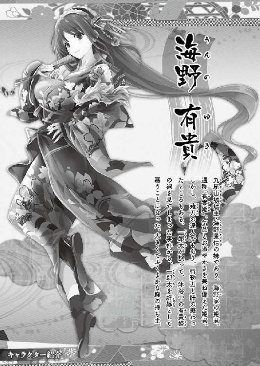
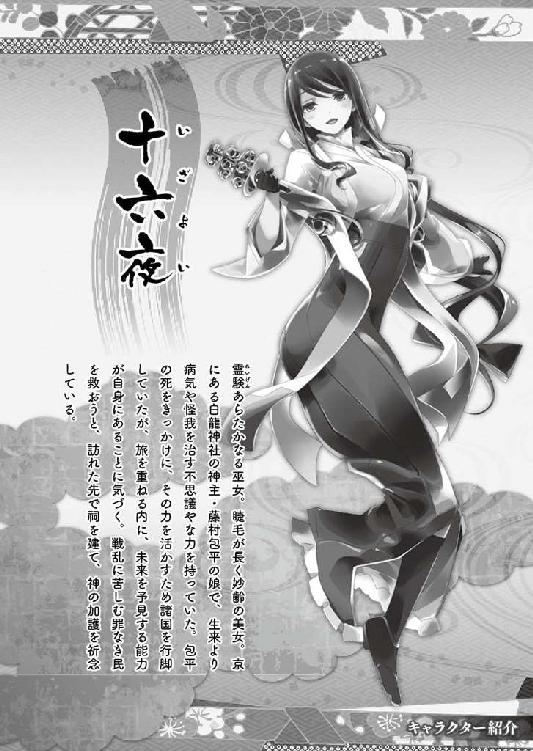

| 桜ノ杜ぶんこ 戦国ぼっち10 | |
| 瀧津孝 | |
| 一二三書房 (2016) | |
桜ノ杜ぶんこ
戦国ぼっち10
Kuoyama Castle again !
瀧津 孝




一章 真田昌幸
「わたしが......わたしが、あの折、もっと強く一郎太様を説き伏せ、無理矢理にでも十六夜様の力で元の世に帰してさしあげていれば......申し訳ございませぬ......」
麗は、嗚咽をかみ殺すようにとうとう顔を伏せた。
今、俺と麗は、星明かりだけが周囲をほんのりと照らす山の中にいる。
ただし、この場所に二人だけしかいないんじゃなく、数メートル離れた小さな山小屋の中には、旅を共にする仲間たちが仮眠していた。
麗が言ってるのは、十六夜を廃寺から救い出した後、甲斐国（山梨県）の躑躅ヶ崎館内にあった毘沙門堂の前で二人きりになった際の会話だ。あの時、麗はできるだけ早く現代に戻るよう勧めてくれたけど、俺は自分の意志でそれを拒んだ。
十六夜を探し出し、救出するというミッションに加え、もう一つ、俺たちが時の天下人・羽柴秀吉からその真偽の究明を課せられていた〝武田信玄の埋蔵金〟についてもはっきりとわからず、何かが心の中に引っかかっている中途半端な気持ちのまま、自分だけが去るなんて、とても考えられなかった。
それに、俺は麗に自分の気持ちをまだ一言も......。
だけど、それから事態はより深刻で、絶望的な展開を迎えてしまった。
あの九尾山城が、よりにもよって椿琢磨に占拠され.........俺の命は、もうあとわずかな日数で尽きてしまうという予想もしない最悪の局面に......。
俺、高杉一郎太は、現代の東京に住む一七歳の高校二年生......だったんだけど、ひょんなことから戦国時代にタイムスリップしてしまい、この時代に生きる少々個性的な美少女たちと仲間になり、旅を続けている。
この間、秀吉の知遇を得て直臣である忍び目付に抜擢され、京の都で騒動を解決した功績から、長い間有名無実の存在だった朝廷直属の名門武士団・北面武士の頭領という地位まで授けられちゃった。
俺が現代に戻るための手掛かりを知るであろう巫女・十六夜を追い、やってきたのは甲斐国の中心都市・古府中。
そこで密かに埋蔵金を狙っていた北条家の忍びであり、風葉の仇敵でもある鬼火丸と、その配下のくノ一・不知火を激闘の末に倒した。
ところが、俺の油断と同情が災いし、死に際の不知火から「わずかでも体内に入れれば、丸三日後に心臓が止まる」という毒を飲まされてしまった。
でも、ここでくよくよと思い悩んでいる状況じゃなかった。
俺と同じ時代からやってきた未来人で、瀬戸内で死んだとばかり思っていた椿琢磨が、上野国（群馬県）の九尾山城を乗っ取ったという信じられない一報を得たからだ。
九尾山城こそは、俺が初めて戦国時代にタイムスリップした場所であり、麗や有貴姫が生まれ育った場所でもある。
城にいる身内の安否を気遣う彼女たちのためにも現地へ急ぎ、残された時間の中で椿琢磨と最後の対決に臨んで、城を奪い返さなければならない。
しかし、日はもう暮れてしまい、甲斐の古府中から九尾山城までは、直線距離にして約一〇〇キロ。急峻な奥秩父山塊の山々が連なっているうえ、そこは関東を支配する北条氏の勢力圏内。関白・秀吉に表立って敵対はしていないが、見えないところでは何をするかわかったもんじゃない。
京の都での〝鬼火猩々〟騒動、明智家旧臣による武装蜂起計画、そして徳川家を巻き込んだ反秀吉勢力による羽柴政権転覆の企て......これらの黒幕は全て風魔党の忍者たち、そして彼らの主たる北条氏だったのだから。
このため俺たちは、ルートを大きく迂回し、真田家の領内を通って九尾山城に近付くしかなかった。
俺たちを先導してくれたのは、急報をもたらした真田家の忍者集団・草の者の上州（群馬県）方面担当で、風葉の親友でもあるくノ一・楽と舞だ。
この二人を先頭に、俺、麗、有貴姫、りよ、沙希、雀憐、十六夜、風葉、孫兵衛が続いた。
孫兵衛というのは、実名じゃない。このじいさんの正体は、かつて紀伊国（和歌山県）で戦国最強の鉄砲集団・雑賀衆を率いた雑賀孫一だった。
でも、雑賀衆が秀吉によって攻め滅ぼされてからは、中国地方の毛利氏を頼り、戦さとは関係のない流浪人となっていた。
「雑賀衆を守れんかったわいに、雑賀孫一を名乗る資格はもうない。これからも、わいのことは孫兵衛と呼んでくれ」
と強く言うので、俺たちはじいさんをこれまでどおり孫兵衛と呼んでいる。
星明かりを頼りに、古府中から甲州街道を一旦西北に進み、途中から八ヶ岳の東側の山道を北へ踏破。俺たちが京から乗ってきた馬は、躑躅ヶ崎館の馬小屋に預けていた。
しかし、鬼火丸たちとの戦いの現場から逃げちった人夫が、そこで起こった出来事を口止めはされていたものの、城代家老の渡瀬伝右衛門が死んだという事実だけは古府中で漏らしたんだろう。躑躅ヶ崎館に詰めていた伝右衛門の家来たちは、それを耳にした途端、算を乱して逃走した。この時、馬小屋に入れられていた馬は、全部奪い取られてしまった。こうなると、移動手段はもう徒歩しかない。
あと少しで信濃国（長野県）・佐久平、今で言う佐久盆地の南端に出る地点までたどり着き、夜明けまでの一刻（二時間）ほど誰もいない山小屋で仮眠をとることになった。
何しろほとんど休憩なしで山道を何時間も進んだから、足は大袈裟じゃなく棒みたいになってる。
みんな、山小屋に腰を落ち着けるなり、バタンと横になって寝息を立てた。
俺も、相当疲れてはいたんだけど......眠れなかった。
あと三日の命と宣告され、ここで眠ってしまえば、そのまま死んじゃうじゃないだろうかという恐怖感にさいなまれ、それと同時に眠るってことが、残されたわずかな時間を無為に費やしているようにも思えて、目が冴えまくる。
俺は外で深呼吸でもして気持ちを落ち着けようと、一人山小屋を忍び出た。
初冬を迎えた夜の山の冷気が体を包み、思わず体がブルッと震える。
考え込むと、悪い方へ悪い方へと傾いてしまう頭の中をスッキリさせたくて、冷たい空気を思い切り吸い込み、夜空を見上げながら吐き出した。
山小屋を抜け出す俺に気付き、後を付いてきた麗が声を掛け、詫びたのは、そんな時だった。
俺は、麗にゆっくりと近付き、彼女の肩に右手を当てた。
「麗さんが謝る理由なんて、何にもないじゃないか。全部、俺が決めたことなんだから」
「されど......わたしは、おのれが許せませぬ。一郎太様がどうおっしゃろうと、わたしが......わたしが、あの折、もっと強く一郎太様を説き伏せ、無理矢理にでも十六夜様の力で元の世に帰してさしあげていれば......申し訳ございませぬ......」
ここまで言ってから、麗は涙で言葉を詰まらせた。
「違うよ、麗さん。たとえ、麗さんにどれだけ強く言われてたとしても、俺の気持ちは変わってなかった。これは、間違いないんだ」
麗は、泣きはらした顔を上げて俺を見た。
「だから、もう泣かないで。もう謝らないで」
「一郎太様......」
「それにあの時、もし元の時代に戻ってしまってたら、九尾山城で起きた大変な事件も知らずじまいになるところだった。
同じ時代から来た人間として、俺は椿琢磨を止めなくちゃいけない。それが、今の俺に課せられてる使命なんだ。
君のお父さんの勝政様や、有貴姫様のお兄さんの景信様の安否だってはっきりしないけど、二人はきっと大丈夫。しかも、あの武勇に優れた勝政様が、そう簡単に敵の手にかかるはずがない」
俺に励まされた麗が、伏せていた顔をゆっくりと上げた。
「今は少しでも早く城に向かい、もっと詳しい情報を仕入れ、城を必ず奪回する！......俺に残された時間はそんなに長くはないけど......だからこそ、全力をぶつける！ みんなで力を合わせて」
「はい......力を合わせて」
「夜が明ければ、また休みなしの強行軍だ。小屋に戻って、少しでも体を休めよう」
「一郎太様は、眠れぬゆえ、起きて出てこられたのでしょ？」
「うん。眠れなくても、横になってるだけで少しは疲労も回復するさ。それに、麗さんと話してるうちに、気分もちょっと晴れたように思う」
麗が、ようやく口元をわずかに緩めた。
この微笑みも、俺を随分癒してくれたみたいだ。
麗と一緒に山小屋に戻った俺は、床板に横たわると、いつの間にか眠りについていた。
佐久平から真田領の上田までは平地続きだけど、この辺りは徳川家に属する依田康国の支配地だ。
康国は、俺がいるこの時代、天正一三年（一五八五）夏の神川合戦（第一次上田合戦）で徳川軍の先鋒として上田城の真田昌幸と戦っているから、両家の間は決して良好とは言えない。
京の都から甲斐までの道のりをそうしたように、俺たちは〝朝廷の使者〟として堂々と通行した。
本来、徳川家康に手渡すはずだった帝の勅語書も、北面武士の身分を示す菊花紋章が付いた額金も打飼袋の中に入っているから、二度三度と依田家の兵士たちに誰何されたけれど、その都度これらを見せて無事に通してもらえた。
途中から風葉が先行して上田に入り、馬を手配してくれたので、ここからは格段に進行速度がアップした。
上田には、真田家の拠点である上田城がある。
当主の昌幸は、すでに集められるだけの兵士を動員し、九尾山城に向けて出陣した後だった。
俺たちは、昌幸の軍勢を後から追う形となった。
馬は五頭用意され、手綱を取る孫兵衛の後ろに雀憐と俺、麗の後ろに十六夜、有貴姫にはりよ、沙希には舞、風葉には楽がそれぞれ乗り込む。
馬に負担をかけるけれど、〝常歩〟よりもずっとスピードがある〝速歩〟で、上田から東北に伸びる鳥居峠を進み、田代湖を越えれば、上野国の吾妻郡。
そこから東の道を取り、真田家の上野支配の拠点・岩櫃城を通過して、南にそびえる榛名山の山すそを東から大きく回り込んで南へ行けば、そこに九尾山城があった。
大きな宿場町や城下町で何度か馬を乗り換え、そこでわずかな仮眠を繰り返し、俺たちが城の東側に到着したのは、古府中を発ってから二日目の夕方だった。
つまり、不知火に毒を飲まされてから、もう丸二日が経ってしまった。
この道中、馬で一列になって行進しているからでもあるんだけど、俺たちは互いにまともな会話をほとんど交わしていない。
とにかくヘトヘトで、有貴姫や雀憐でさえしゃべる気力を失っている。唯一の例外として、孫兵衛だけはすこぶる元気で、死期が迫る俺のことでみんなをしんみりさせないようにだろうけど、普段以上に軽口を叩いていた。
でも、九尾山城の全体を望見できる場所に行き着き、みんなの気力は奮い立ったようだ。
「姫様、ご覧なさいませ！ 九尾山のお城です！」
「おお、戻ってきたのじゃな！ 北条にかどわかされた折には、もはや二度と拝めぬと思うておったこの城に！」
「思ってたより案外小さな城だが、攻めにくそうな縄張り（設計）ではあるな〜。島の限られた広さの中で築かなければならぬ水軍の城と、規模もよく似ているぞ」
「戦さの前の形......戻ってる......」
感極まった麗と有貴姫の横で、沙希は城郭の形状に感心し、りよは北条との戦さで荒廃した城が二か月ほどの間にすっかり元通り修築されていることに驚いている。
九尾山城は、榛名山の東山麓、その昔、九本の尻尾を持つ狐の妖怪が住んでいたと伝わる九尾山に築かれた城だ。
山というよりも丘に近い小山だが、東側には幅二〇メートルほどの川が流れて自然の堀を形成し、北と西は断崖という要害。
山頂にある本丸へは、南側に設けられている道、または斜面を進むしかない。
城郭は、本丸南側のすぐ下に二の丸、さらにその下に三の丸があり、三つの曲輪（防御陣地）が南北に並列配置された連郭式の構造になっている。
三の丸が築かれているのは山の中腹で、ここから上の斜面は、木が一本残らず伐採され、攻め上がってくる敵をよく見通せるよう工夫されていた。
三つの曲輪は、石垣ではなく、どれも高さが六メートルほどの土塁で区画されており、土塁の上には板塀が築かれている。
板塀には、内部から鉄砲や弓矢で狙撃するための窓である狭間がいくつも設けられていた。
また、材木で組み上げられた、高さ五メートルほどの簡易な造りの櫓が、三の丸には五つ、二の丸には三つ、本丸には二つ。
俺の記憶が確かなら、九尾山城の構造はこんなところだったはずだ。
「十六夜様、このお城、前に一度来たとこやな～？」
「うん、そうや。ここも多くの民が犠牲になってしまう場所の一つやった......んやけど......ん？ これはどういうことなんや......」
訝し気な表情になった十六夜に、俺は「どうしました？」と尋ねた。
「いえ、ぎょうさんの死者の〝魂〟がいた気配を感じるさかい、最近大きな戦さは起こったんやろうけど、その中に民は一人も含まれてへんような......」
「ええ、確かに北条の大軍に攻められ、味方にも敵にも大きな犠牲が出ましたが、真田家の援軍のお陰で城は守られ、城内に逃げ込んでいた付近の領民には一人の死者も出なかったんですよ」
「そうか！ そうやったんか！ それで......」
十六夜の顔が急に晴れ晴れとなり、さらに何かを言おうとする途中で、「あっ、あれは！」という風葉の大きな声が、みんなの注意をそっちに引き付けた。
風葉は、数百メートル先に見える森を指差していた。
「あの中に、幾人もの兵士が動いておるのが見えます。恐らくは、お屋形様の軍勢に相違ありませぬ！」
真田昌幸の部隊が、あの森の中に!?
日が傾き、辺りはどんどん暗くなってるっていうのに、あんなに離れた森の中が見えるなんて信じられない。
俺たちは馬を止め、前方に目を凝らした。麗や有貴姫やりよや沙希が首をかしげる中、孫兵衛が「おーおー」と一人感嘆の声をあげた。
「確かに、大人数がたむろしとるわい。風葉殿は夜目の術にも長けておるようじゃ」
孫兵衛までが断言するからには、疑いない事実だ。
「でもさ、誰かが潜んでるにしても、敵だったりして？」
「風ちゃんが言うことに、間違いはないずら。なんてったって、草の者の同期の中で一番優秀なくノ一なんでえ」
風葉の代わりに、後ろに乗る楽が俺に答えた。
「ご心配には及びませぬ。今、真田家の旗印もちらりと見えました。我ら、一足先にお屋形様へ注進に行って参ります！ 皆様はこの場でお待ちを！」
風葉はそう言うが早いか、楽を乗せたまま、一騎で森へと駆けて行った。
ところが、風葉たちは森の中へ入ったきり、一向に出てこない。
時計がないから正確にはわからないけど、二〇分、いや三〇分は経ったかもしれない。
周囲はすっかり暗くなった。
「風葉はえろう待たせるのぉ。我らのことを忘れてしもうておるのではなかろうな」
「姫様、まさか。あの忍び装束のなりゆえ、雑兵に敵の間者（スパイ）かと勘違いされ、身分を示すのに手間取っているのやも」
「大丈夫......風葉ちゃんなら......」
女の子たちがあれこれ憶測していると、森の方角から馬のヒヅメの音が聞こえてきた。
松明の火も、一つ見える。
「やっとお出迎えだ。馬の手綱を取るのは久しぶりだから、肩は凝るし、尻は痛いし。これで、一息つけるな」
「えっ？ 沙希さん、水軍にいた時、馬に乗ることもあったの？」
俺の問いかけに、沙希は当然という顔をした。
「戦さに詳しい高杉氏とも思えない言葉だなぁ。いくら水軍でも、敵の領地へ奥深く攻め込む時や、大きな島で敵とぶつかる時は、地上で戦わなくちゃいけないだろ。安宅船や関船に馬を乗せて、騎馬の部隊を上陸させることだってあるんだぞ」
「へえ～～～～」
確かに俺は戦国マニアだけど、こんな話は初耳だ。ネットや本だけじゃ、こういうダイナミックな知識はなかなか得られない。
「おい、馬は一騎やない！ 二十騎はおるぞ！」
突然、孫兵衛が吠えた。
すると、森の中にいたのは、やっぱり敵なのか!?
緊張が走り、麗が素早く馬から降りて刀を抜く。
「方々も早う下馬を！ 敵ならば、迎え撃たねばなりませぬ！」
馬から降りた俺は杖を、有貴姫は薙刀を、りよは半弓を、沙希はやがらもがらを構え、孫兵衛は御室山で敵から奪った鉄砲の火縄に、「袖火」と呼ばれる手持ちの携帯懐炉で火をつけている。
舞は、俺たちの後方に十六夜と雀憐を退がらせ、忍び刀で守る。
松明は先頭の騎馬が持っているらしく、こっちにぐんぐんと近付いてきた。
松明を目印に、孫兵衛とりよがそれぞれの飛び道具で狙いをつける。
「これ以上は危険や。撃ってええな、一郎太！」
敵が馬上から槍でも突き出してくれば、確かにこっちの身が危ないんだけど、万が一味方だったら、という不安がブレーキをかけさせた。
「ちょっと待って、孫兵衛さん！」
俺の声と同時に、先頭の騎馬が目前で急停止した。
「一郎太！ 一郎太がいるのかー！」
聞き覚えのある若い男の声。
その声の主はひらりと馬を下り、松明で自分の顔を照らした。
「「「信繁様！」」」
俺だけじゃなく、上州では真田家の庇護を受けていたこともあり、縁の深い有貴姫と麗も歓喜の声を上げた。
目の前に現れたのは、甲冑に身を包んだ真田信繁だった。後に続いてきた騎馬は真田隊の武者たちで、信繁同様下馬し、その場に控えた。
後世、真田幸村として武名を残すこの若者は、真田家の人質として大坂へ送られたものの、その才覚を秀吉から大層気に入られ、近習に取り立てられている。そして今は、京の南郊にある淀城に詰めていたはずじゃ......。
「都での騒動の後、淀城に戻られたのではなかったのですか？」
「いやそれが、わしもあの件ではお主らに準じて殿下からお誉めの言葉を頂戴してな。恩賞として、上田へひと月ばかり里帰りしてもよいというお許しを得たのだ」
本来は人質の身であるというのに遠い故郷への里帰りを許されるなんて、信繁はよっぽど秀吉から信頼されているんだろう。
「おお、有貴殿に麗殿、皆々も揃うておられるな。待たせてすまなんだ。父上が風葉から、京での事変の顛末やら、古府中での出来事やらをあれこれ詳しゅう話させておったゆえ、わしも付き合わされてな。さあ、陣中へ来てくれ。父上もお待ちじゃ」
信繁の父親、真田昌幸。俺が大好きな戦国武将の一族・真田氏の中で、現代にいた頃は信繁に次いで会ってみたいと夢見ていたのが彼だった。
その真田昌幸と、俺はついに対面するんだ。
真田隊が布陣しているのは、九尾山城の東側を流れる川を越えてすぐの森の中だ。
野外で布陣する場合、その場所をどこに選ぶかはとても重要なポイントになる。
普通なら、高くて、周囲をよく見渡せる場所が選定されるべきなんだけど、ここは関東平野の西北端。でこぼこした地形ではあるけれども、どちらかと言えば平坦で、田畑や荒れ地が広がっている。
すぐに城攻めをするのであれば、九尾山城の唯一の攻め口である南側に布陣するはずだけど、そうはしていない。
つまり、様子を見つつ、敵の奇襲も防ぐために川を隔て、周辺では唯一遮蔽物となる樹木が密生し、防御効果がありそうな森の中に軍勢を引き入れた、というところだろうか。
森の手前で馬を降り、信繁の案内で奥へ入っていくと、真田隊もここへは到着したばかりのようで、足軽や小者が周囲に柵を設けたり、陣幕を張ったり、かがり火の用意をしたりしている最中だった。
真田隊の本陣は、森のほぼ真ん中に設営され、真田家の「六連銭」の家紋を打った陣幕に囲まれている。
信繁の後について陣幕をくぐると、一番奥の床几（簡易腰掛け）に中年の武将が座り、傍らに風葉と楽が控えている。
その武将は、俺たちを見るなり破顔した。
身に付けている黒漆の胴には、四段の梯子が斜めに銀で描かれている。
真田ファンなら、こんなデザインの甲冑を付けている人物が誰であるかはすぐにわかるはずだ。
「お主が、九尾山城での先の戦さで獅子奮迅の働きをし、今や関白殿下と帝からの覚えもめでたく、栄えある北面武士を継承した高杉一郎太殿であるか！ わしが、真田安房守昌幸じゃ！ 遠路はるばる、よおここまで来てくれた！ 九尾山の姫と、家老の娘も一緒であったな」
髪は白髪交じりだが、いかにも精悍な顔つきで、大きな目でギョロリと見つめられると、さすがに緊張する。
「北面武士の頭領、及び太政官の忍び目付を仰せつかっている高杉一郎太です。安房守様に拝謁を賜り、これほど嬉しいことはございません！」
ウソ偽りない感情を込め、俺がそう言って立ったまま深く頭を下げると、有貴姫と麗は即座に平伏した。
「海野景信の妹、有貴にございます。此度は、我が城の不手際で大変なご面倒をおかけし、ひらにご容赦下さいませ」
「家老の三好勝政が一子、麗と申します。拝顔の栄を賜り、恐悦至極にございます」
彼女らの後ろにいる沙希やりよたちも、それにならって地面に膝をついてかしこまり、舞だけが横から前に進み出て風葉と楽に並んだ。
秀吉の直臣である俺と、秀吉に臣従した昌幸とは、ある意味対等な立場ではある。
でも、昌幸は、朝廷から従五位下・安房守に任じられてる大名だ。朝廷の位階制度において、五位以上の者は、貴族に列せられる。
また、安房守という官職は、安房国（千葉県南部）の長官職を指す。無位無官の俺が下手に出るのは当然だった。
麗、有貴姫、りよ、沙希は一応俺の家臣という立場だから、陪臣がひざまずくのは当然だし、家臣でもない孫兵衛、十六夜、雀憐は言うまでもない。
信濃の大名なのに、安房の官職が与えられてるのは、現代から見るとすごく不思議なんだけど、当時はこれが普通だった。
土地と人民は、全て帝が支配するという〝王土王民〟を基本理念とする律令制は、鎌倉幕府の成立以降、完全に崩壊してしまった。それでも、朝廷の権威だけは、時代が鎌倉幕府から室町幕府へ、さらに戦国乱世へと移り変わっても保たれた。
そして、実力ある武士たちが、自らの権威付けのために〝ブランド〟として欲しがったのが官位だった。
任官のためには、鎌倉幕府も室町幕府も、幕府から朝廷へ申請するシステムを採っていたんだけど、戦国時代になると幕府の権力が衰え、各地の大名が献金と引き替えに直接朝廷へ申請するようになる。
朝廷に実質的な政治力がないんだから、与えられる官位も言ってみれば名前だけのもの。だから、大名の支配地と官位が異なるケースなんて、いくらでもあった。
三河国（愛知県東部）を発祥とする徳川家康が名乗った三河守や、出羽国（山形県・秋田県）で勢力を広げた最上義光の出羽守みたいな例は、数少なかったんだな。
昌幸は、向かって右隣に座っている若武者に目を向けた。
「こちらにおるのが、わしの嫡男・信幸じゃ」
温厚で、誠実そうな外見の信幸が、俺に向かって一礼した。
この人が、真田信幸！
俺が敬愛する真田一族の中で、信繁、昌幸に次いで尊敬する人物だ。
真田家を大名として独立させた昌幸の二人の息子のうち、信繁は武名を後世に残し、信幸は戦国のサバイバルレースに勝ち残って、真田の家名を後世に残した。
現代では、真田幸村の名前ばかりがクローズアップされ、突出した人気を誇ってるけど、信幸だってもっともっと評価されて良いと思ってる。
「まずはお座りなされい」
昌幸が、周辺の絵図面を広げた目の前の台を隔てて、真正面に床几を置くよう小姓に指示し、俺はそこに腰を掛けた。
俺が九尾山城に籠もってた時、昌幸と信繁の金の花押（署名代わりの符号）が入った勝負パンツを履いてたことを、真ん前にいる眼光鋭い人物は風葉から聞いてるはずだ。
俺についてはすごくいかがわしい人物という印象も持ってるはずなのに、おくびにも出さず話を進めようとしている。
もしかすると、信繁がこれまでに大坂から故郷へ送った書状で、俺という人間を好意的に紹介してくれているからかもしれない。
俺の左右には、九尾山城の当事者である麗と有貴姫が膝を進め、残りのみんなはその後ろに控えた。
「九尾山城での異変が上田にもたらされたのは、ちょうどわしが都から帰還する直前でな。わしは殿下の近習という立場ゆえ、あまり大っぴらには動けんのだが、かき集められるだけの兵を引き連れて出陣しようとされている父上と兄上を黙って見送る訳にもいかん。それで、付いて参った」
向かって左隣の床几にどかりと座った信繁が、あっけらかんと言う。
「それで、安房守様、九尾山城は一体どんなことに？」
俺が今一番知りたい城の状況について率直に尋ねると、昌幸は途端に苦虫を噛み潰したような顔になった。
「城は......椿琢磨なる男とその一派に占拠され、城主の景信殿は拉致された」
有貴姫の顔が、たちまち真っ青になる。
「あの、城内におられた家臣や家族の人たちは？」
俺の質問に対する昌幸の返答を、麗が固唾を呑んで見守る。
「家老の三好勝政をはじめ大半の家臣とその家族は、城から追い出され。この森に我らが収容した。なまじ多くの人質を抱えて、反乱を起こされては堪らぬからであろう」
麗の顔に、ほんのわずかではあるが安堵の色が浮かんだ。
「椿琢磨は、どのようにして城を？ 奴は、どれくらいの手勢を率いているんですか？」
「全ては、わしの一生の不覚からであった......」
昌幸は、吐き捨てるように続けた。
「あれは半月ほど前、上田の城下に若いに似合わず文武に優れた浪人が流れてきたといううわさ話を草の者が仕入れてきた。有能な人材ならば、家柄や身分にかかわらず召し抱えるというのが真田の家風じゃ。
わしはその男に興味を持ち、寄宿しておる場所を草の者に突き止めさせ、城に招いた。わしのこの目で、男の器量を確かめたかったからな。
面会してみると、そやつは見目が良く、弁舌爽やかにして、諸国の事情にわしよりも通じておる。薬丸示顕流なる剣術の免許皆伝で、腕自慢の家臣と木刀で試合をさせてみたところ、西国での先頃の戦さで左腕を手負っていたというに、易々と打ち負かしよった。それを見て、わしは大いに気に入り、即刻三〇〇石で相伴衆として召し抱えたんじゃ。
当面は、わしの世間話相手だが、ゆくゆくは軍師とし、この家を継ぐ信幸の補佐をさせるのも良いかもしれぬ。そう考えてな......」
相伴衆は、お伽衆と呼ばれることもある。主君の軍事アドバイザーや政治アドバイザーであり、知識や経験が求められることから、隠居した大名や武将、僧侶などが務めた。
下層民からの成り上がりである秀吉は、幼い頃から師について学問を修めるという経験をしなかったため、多くのお伽衆を召し抱え、耳学問で知識を吸収したらしい。
彼のお伽衆は、数百人にも上ったと言われ、その中には室町幕府最後の将軍・足利義昭や、主筋である織田信雄、織田信包、織田長益ら、かつては目上の存在だった武将たちから、茶人の千利休、豪商の今井宗薫、著述家の大村由己、落語家の曽呂利新左衛門といった幅広い人材を登用している。
「その椿が、どうして九尾山城へ？」
「それも、父上の火遊びが発端でな」
からかい半分に口を挟む信繁を、昌幸が不服そうににらむ。
「火遊びではないわい！ お花は、分をわきまえ、ようできたおなごぞ！ しかも、親とは早うに死に別れ、寄る辺なき可哀想な身の上なのじゃ。それゆえ、時を見計ろうて、きちんと側室に迎えようとも考えておった」
「あの、お花......さんというのは」
「父上が手を付けた、奥の女中だ。しかも、母上付きの、な」
信繁が、横から補足する。
「山手殿の！」
俺はつい、昌幸の正室の通称を口走った。
山手殿の実名は、わからない。
右大臣・菊亭晴季の娘とも、羽柴秀吉の実弟・秀長の重臣である宇多頼忠の娘とも、かつての主君・武田信玄の家臣の娘とも言われているが、その出自もはっきりはしていない。
「高杉殿は、わしの室（妻）についても存じておいでであったか。忍び目付とは、さすがに大したものじゃのう」
「いえ、お名前だけは......たまたま......」
「まあよい、その室にばれたのだ......お花に手を付けたことがな」
昌幸は気恥ずかしそうに言い、俺は左右の麗、有貴姫と顔を見合わせた。
「そこもとらはよう知らぬであろうが、室の悋気（嫉妬）のすさまじさときたら、わしでもなかなか始末に負えぬほどでな。
以前、領内の百姓の娘に手を付けた時は往生した〜。室は、それを知るなり密かに追っ手を放ち、娘の命を絶とうとしたのじゃからな」
それを聞いて唖然としている俺と、両隣の麗、有貴姫の反応は正反対だ。
山手殿の処置は当然、とでも言いたげに、二人ともうんうんとうなずいている。彼女たちも、結婚したらそんな鬼嫁に？......ううっ、怖い......。
「この折は、草の者が室の動きを事前に察知し、娘と親を遠くの土地へ逃がしたゆえ、事なきを得たが、お陰でわしはそのおなごともう二度と会えんようになってしもうた。
それからというもの、おなごにちょっかいを出す時には、よくよく用心してまいったのだが、今わしが最も執心しておるお花の件をどうやら室が嗅ぎ付けたようなのだ」
それにしても、昌幸という人物は、かなりの女好きみたいだ。
「百姓娘を相手にあれほどの騒動を引き起こしたのだぞ。身の回りの世話をさせておる、若くて美しい侍女に手が付いたとなれば、室は怒り心頭に発しておるはず。一体何をしでかすか、知れたものではない。
いずれにせよ、お花の命が危険にさらされているのは確か。どこぞ安全な場所へかくまわねばならぬ。が、我が一族に任せておる城では、室の追求の手が伸び、秘密が漏れる恐れもある。となれば、真田家に臣従し、しかも固い絆で結ばれておる家の城しかあるまい」
「そこで、海野様の九尾山城へお花様を」
「そうじゃ。現当主の景信殿の父御・景隆殿とわしとは、かつて武田信玄公の近習を務めた同輩で、武田家から見れば外様の家である我らは取り分け仲が良かった。
信玄公がお亡くなりになり、武田家が傾きだしてから、海野家を継いだ景隆殿は離反し、北条を頼ったが、あやつと幾度も密かに対面して口説き、真田への合力を約束させたのは、誰あろうこのわしよ」
「一旦は北条家へ走った海野家が、武田家ではなく真田家に臣従したのは、そういう経緯があったからなんですね」
「景隆殿の息子の景信殿は、小さい頃から見知っておるし、景信殿を支えておる三好勝政は腕利きの家老。九尾山城ならば、わしも安心してお花を託せる。
急使をやって伺いを立てると、景信殿は喜んで身柄を預かってくれるとのこと。そうなると今度は、誰を使者兼護衛役に任じ、お花を九尾山へ送り届けさせるかが難しい。
上田城に詰めておる手練れの草の者はちょうど出払っており、古くから仕える家臣では、室に気付かれ、秘め事が漏れる恐れもある。かといって、若輩者では信頼できぬ。
ここではたと思い当たったのが、召し抱えたばかりの椿琢磨じゃ。あの者ならば、新参とはいえ、才覚もあり、お花の護衛を託するにはうってつけ。即座に椿を召し出して言い含め、割符も渡して、お花と共に送り出した」
割符とは、文字や絵を書いた竹、木板を割って別々に所持し、組み合わせて敵味方を判別する身分証明書のような物である。
真田家と海野家との間でも、緊急時の連絡用に割符を使っていた。
「椿は浪人の身でありながら、数人の門弟を従えており、仕官の際にその者共を家臣としておる。それ故、お花を連れて行くのは椿ら主従数人のはずであったが、いつどこで増えたのか、九尾山城へ入った時には六〇人ほどの手勢になっていたらしい。そして、椿らは本丸に案内され、景信殿に対面するや否や蜂起し、城を占拠したのじゃ」
「城側では、安房守様の正式な使者の来訪でもあり、完全に虚を突かれたんですね」
「椿の家臣というのも、わしは一度しか目通りを許しておらぬが、なかなかに屈強そうな者揃いでな。中には見上げるほどの大男で、鬼が持つような金砕棒を携えておる強者もおって、いかにも頼もしい主従と思うておったが......」
「「「「「玄養斎!?」」」」」
俺に加えて、麗、有貴姫、りよ、沙希が一度に声を張り上げた。
そうだ！ 椿琢磨に従い、そんな風貌の奴と言ったら、あいつしかいない！
越智玄養斎......羽柴水軍が建造した巨大戦艦・九頭竜丸を乗っ取った海賊衆の副将として暗躍し、後に瀬戸内では椿琢磨と共に〝幽霊船〟騒動を起こして〝戦国版薩長同盟〟を企て、それが潰えると、俺たちとの死闘の末に海の中へ消えた強敵。
こいつも、椿琢磨と一緒に死んだと思い込んでいた。
「高杉殿と椿とは、因縁の間柄じゃと風葉から聞かされたが、その大男も腐れ縁であったのか」
「椿と玄養斎は、これまで西国で共に行動し、俺たちを散々苦しめてきた相手です。その二人が一緒にこの東国まで来て九尾山城を乗っ取ったというのなら、奴らの思惑も大体読めてきました」
「それは、如何なる？」
昌幸が身を乗り出し、両脇の信繁と信幸も色めき立った。
「椿が西国で指導した企ての数々は、全て関白殿下の世を転覆させるという目的のためでした。後ろ盾になっていたのが九州の島津家だったんですが、俺たちがその陰謀を全てぶち壊したせいで、奴は失脚しました」
歴史のｉｆを試し、日本史を変える、という〝シミュレーションゲーム〟に、椿は魅入られてしまい、これこそが生き甲斐だと錯覚してしまっている。
島津家に見限られた奴が、ｉｆを可能にするため頼る相手と言えば、この時代ではもう一つしかない。
「椿たちが東国にやってきたのは、この日の本で関白殿下に対抗しうる最後の大勢力、関東の覇者・北条家と結ぶため。それしか考えられません。
椿は、乗っ取った九尾山城を手土産として北条家に取り入り、家中での発言権と存在感を高めて、関白殿下を討つための原動力に仕立てるつもりじゃないでしょうか？
椿にとって、お花様を送り届ける仕事を命じられたのは、予想外に早く訪れた千載一遇の機会だったのでは」
「むう〜〜〜。となれば、異変を聞いて動かせる全軍でここまで出張ってきたのが、裏目に出るかもしれぬ......」
昌幸が顔をしかめ、腕を組んだ。
「父上、裏目に出るとは、どういう？」
真顔で尋ねる信幸に、信繁が割って入る。
「兄上、一郎太の推測が正しければ、北条は城を接収するために間を置かず大軍をここへ寄越すであろうということです」
「おお、そうか！」
「上田城には守備のために必要な最低限の兵二〇〇を置き、ここへ連れてきているのは一千。されど、北条が本気で乗り出してくるならば、新たな陣頭の地となる城へ少なくとも数千の兵は送って参りましょう。平地の斯様な場所でまともにぶつかれば、我らが如何に精兵揃いといえど、殊の外不利と相成りまする」
如才ない信繁に対し、兄の信幸は真っ直ぐな気性からか、こんな場合にはちょっと頼りない人物に見えてしまう。
そして、信繁の指摘は、主力部隊を率いてやってきた昌幸たちが大きな危機に瀕していることを改めて一座に知らしめた。
一時、陣幕の中を重苦しい沈黙が流れる。
そこへ、茶色の忍び装束を着込んだ男の忍者が「失礼仕ります」と身を屈めつつ入ってきて、昌幸の側にひざまずいた。
「お屋形様、只今戻りました！」
キリリとした風貌の若者で、この顔には見覚えがある。確か......九尾山城で籠城した時に、危ないところを助けてくれた真田家の草の者・才蔵だ！
「うむ、ご苦労であった。で、箕輪城の様子はどうじゃ？」
「戦さ支度をしております。近隣の兵士が続々と入城し、その数は一万に達しようかというほどの大軍にございます」
「「一万!?」」
信繁と信幸が声を揃え、愕然とした表情でそのまま押し黙った。
箕輪城は、北条氏が関東支配に欠かせない根城の一つと位置づけ、関東平野の北西部にあって、真田勢力圏の九尾山城と対峙する上州の最前線基地だ。
ここから南へ九キロほどしか離れていないから、目と鼻の先という位置関係にある。
俺が初めてタイムスリップして巻き込まれた九尾山城籠城戦では、この城から出撃してきた八〇〇〇もの大軍と戦うはめになってしまった。
あの時でさえ、九尾山城に向けられた北条の軍勢はかつてない規模と言われていたのに、一万とはそれをさらに上回るじゃないか。
「北条め、本気じゃ。関白殿下は先頃、九州に惣無事令をお出しになった。殿下がまだ支配下にしておられぬ関東・奥羽に向けて惣無事令を発令されるのも、そう遠い先ではあるまい。
九尾山城を接収した後、余勢を駆って、近隣に点在する我らの出城を攻め取り、惣無事令が出されるまでに、できる限り領国を広げようという魂胆に相違ない」
昌幸が、嘆息する。
惣無事令は、秀吉が関白という朝廷権威をもって大名同士の私闘を禁じた法令だ。大名間の領土紛争は羽柴政権が処理にあたり、その決定に違反した場合は厳罰を下す、という内容になっている。
このまま歴史が正常に進めば、関東・奥羽への惣無事令は二年後に制定されるはずだ。
「北条の総大将は、箕輪城の主・藤田氏邦と思われまする」
才蔵が、付け加えた。
藤田氏邦......と言えば、北条家中興の祖・氏康の四男であり、現当主・氏直の伯父、隠居はしているが実権を握り続けている氏政の弟にあたる。この当時は、箕輪城主として、上野方面の統治と軍事を担当していた。
歴史本とかでは普通に『北条氏邦』と書かれているけど、彼は武蔵国（東京都・埼玉県）の豪族・藤田康邦の娘婿であり、実際には『藤田氏邦』を名乗っている。
武田信玄との三増峠の戦いや、滝川一益との神流川の戦いといった関東方面での大合戦には必ず加わり、大いに武功を挙げ、武勇にも優れた将だ。
前回、九尾山城を攻めたのは、彼の兄で戦さ上手と評される氏照だった。でも、戦闘指揮能力においては、この氏邦の方がさらに勝っていたという説もある。
とにかく激しやすい性格だったようで、俺がいる天正一三年の四年後、北条家が滅亡するきっかけとなった名胡桃城事件を起こしたのも彼なのだけど、それはちょっと別の話だ。
「ふん、先の城攻めでは氏照がまさかの負け戦さを演じたゆえに、氏邦めは此度こそ兄の雪辱を果たさんと躍起になっておるであろうな」
「さすれば父上、このような場所で陣を張っていてよろしいのですか？ 一旦は引き退き、大軍を迎え撃つ構えを整え直さねば」
「ならば信幸は、九尾山城を見捨てよと申すか？」
「見捨てるなどとは。我らのような小勢でも、大軍を迎え撃てる場所に移り、誘い込むべきと申しておるのです」
「才蔵、箕輪城の軍勢は明朝にも出てきそうか？」
「その公算は大と存じます。朝一番に出陣してくれば、先手（先鋒隊）がこちらへ到着するのは、巳の刻（午前一〇時頃）、もしくはそれより早いやもしれませぬ」
「であれば、明朝までに九尾山城を我らが取り返せば、そのまま城に籠もり、北条を迎え撃てる」
「しかし父上、質（人質）を取られている以上、正面からは攻め込めませぬぞ。何せ、城内には景信殿に加え、お花殿まで囚われているのですからな」
昌幸の妾まで人質に！ 信繁の言葉を聞いて、俺たちは事態がさらに深刻であると知った。そんな状況じゃ、九尾山城の兵も、真田の兵もうかうか城に手を出せない。
「わしらだけで考えていてもラチが明かぬ。九尾山城のことを最もよく知っておるのは、九尾山城の者。例の二人も呼んで、知恵を出させよう」
昌幸が小姓に命じ、呼びにやらせた〝二人〟というのが、やがて陣幕の中に入ってきた。
すっかり青ざめ、肩を落としている彼らの顔を見て、俺、有貴姫、りよが「！」となり、麗はその一人に思わず「父上！」と小さく叫んだ。
その〝二人〟こそ、海野家の家老・三好勝政と、重臣・福島三太夫だった。
「麗！......それに高杉殿と、姫様もおわしましたか！」
俺たちを見て驚いた勝政は、直ぐさま有貴姫の前に手をつき頭を垂れた。
「姫様、申し訳ございませぬ！ この勝政がおりながら、殿様を質とされたうえ、城まで乗っ取られるという大失態を......」
「三好様ばかりの不始末ではございませぬ」
と、三太夫も勝政の隣にひれ伏す。
「安房守様直筆の書状と割符を持参していたにせよ、お花様の護衛にしてはやけに物々しく、いつでも戦さを始められそうな出で立ちでやってきた使者たちを疑いもせず、城内に入れたのは拙者の落ち度。
本丸の広間で、いきなり抜刀し、殿を拘束した奴らに、我らはもはや何の手出しもできませなんだ。
殿とお花様には敵の刃が突き付けられ、奴らの言うがまま、城内に詰めておった七〇名の家臣と、その家族百数十名はまとめて追い出されてしまい......」
海野家中随一の居合いの達人で、以前よりもっと腹が出たように見える太っちょの三太夫が悔し涙をにじませた。
海野家の戦闘時の動員兵力は二五〇名だったはずだけど、平時には七〇人くらいしか常駐させていなかったようだ。
「勝政、三太夫、起こってしもうたことは、もはや致し方ない。これから我らがなすべきは、兄上とお花様をいかにして救い出し、城を乗っ取った連中を討つかじゃ」
「「はっ！」」
鋭く返答した二人は、はいつくばるように土下座した。
やがて、おずおずと顔を上げた勝政が、感謝の眼差しを俺に向けた。
「北条にさらわれた姫様を高杉殿がお助けくださり、その後共に西国へ向かわれたということは、安房守様が大坂の信繁様や、草の者から知らせを得て、書状にてお教えいただいておりました。これまで姫様を無事にお守りくださったご厚情に対し、何とお礼を申せばよいのやら......」
三太夫も、同感といった風に何度もうなずいている。
「三好様、お止めください。有貴姫様にも麗さんにも、俺は助けてもらってばかりで......」
「それは少々違うぞ」
有貴姫が、横から口を出した。
「勝政も三太夫も、よう聞くがよい。高杉殿は上方で著しい立身をお遂げになり、今ではわらわの主。つまり、わらわは高杉殿の家臣となっておるのじゃ。これは関白殿下もお認めのことゆえ、お前たちも左様心得よ」
「「ええーーーーっ!?」」
勝政と三太夫があんぐりと口を開ける。
「いやいや、それはあくまでも表向きの方便で、俺は決して有貴姫様を家臣だなんて......ってそんなことより、今は九尾山城をどうするか、急いで考えなきゃいけない瀬戸際なんですよ！」
「そのことよ」
昌幸が、焦れったそうに口を開いた。
「勝政、三太夫、明日の朝には北条の大軍が攻め寄せてくる。それまでに、あの城をどうにかできねば、わしらは兵を引き連れて引き退かねばならぬ」
「そんなご無体な！ 九尾山城を、我が殿をお見限りになるのでございますか！」
勝政に続いて、三太夫もついつい取り乱す。
「明朝までに九尾山城を奪回するなど、無茶にございます。二か月前、北条が攻めてきた折の戦さで三の丸と二の丸は各所が大層損壊しましたが、昼夜を分かたぬ普請を進め、城は元通りの姿になったばかり。
真田様の上田城をはじめ、岩櫃城や沼田城などと比べれば取るに足らぬ城塞なれど、天険を頼みとし、守りが小勢でも、大軍を向こうに回して容易には落ちぬ縄張りにござる。
城を占拠しておる賊は総勢約六〇で、大半が鉄砲を持っておりました。この数は、城内に備えておる鉄砲の倍。
我ら以上に堅い守りで立て籠もっておるところへ力攻めをして、わずか半日で落とせる見込みなど......」
「力攻めせよとは申しておらぬ。そのようなことをすれば、景信殿もお花も、敵に命を奪われよう。別の方法を考えねばならんのじゃ」
「別の方法と言われましても......」
三太夫は言葉に詰まり、勝政も眉間にしわを寄せる。
正面攻撃でない別の方法となれば、奇襲ってことになるのだけど......景信やお花が囚われているであろう本丸へ攻め込むには、南側の山道を登り、三の丸を突き破り、くねくねと曲がる細い城内道を通って二の丸、さらに次の城内道を抜けて本丸へ進むしか......。
「十六夜様、どっかに隠れながら、攻められへんのやろか」
「私には、戦さのことなどさっぱりわからへん......」
「小さな城っていうのは、案外攻めにくいものなんだ。瀬戸内の城なんて、大抵が小城だろ。その分、曲輪からの見晴らしも良くて、敵の動きがすぐわかるようになってる。九尾山城も、見たところそんな感じだぞ」
「切られてる......山の木......中腹から全部......」
「そやけどな、完ぺきな城なんちゅうもんは、この世にはない。どっかに弱みや、誰もが気付かんような隙があるもんやがな〜」
後ろにいるみんながこそこそ話している中で、孫兵衛の言葉が引っ掛かった。誰もが気付かないような隙......ちょっと待てよ！
「麗さん、有貴姫様、籠城して敵に本丸まで押し込められて、もう絶体絶命ってなった時、有貴姫様と領民の人たちを連れて、城の北側に設けられた秘密の抜け道を通って逃げようという話になったよね。脱出用の道だろうけど、逆にたどれば敵に見つからずに本丸に入れるんじゃないの？」
「おお、それじゃ、高杉殿！」
「まさしく、仰せのとおりにございます！」
有貴姫と麗が顔を見合わせてうなずき、勝政も抜け道の存在を思い出して、地面に正座したままポンと膝を叩いた。
「うむうむ、九尾山城に秘密の抜け道があるというのは、以前景隆殿にわしも教えてもろうておる。それゆえ、いざという折にはお花を逃がすのにも都合が良いと思うて、この城を選んだのじゃ。椿たちも、城を制圧したばかりで、抜け道については知るまい。されば、高杉殿、夜討ちじゃな」
昌幸も、俺の提案にすこぶる乗り気だ。
「そのお役目、何卒我ら海野家の衆でやらせてくださりませ！」
すかさず、勝政が願い出た。
「まったくもって！ 城を奪われた我らが、城を奪い返すのは理の当然。それに抜け道は人ひとりがようやく通れるほどの狭さ。大勢では身動きが取りにくう存じます」
三太夫も、断固訴える。
「わかった。夜討ちは、海野の衆に任せよう。本丸を制圧し、景信殿とお花を奪い返したならば、すぐ狼煙で合図せよ。我らも全軍で三の丸、二の丸へと攻め込み、この城で氏邦を迎え撃つ」
「ははっ！！！」
勝政と三太夫が、平伏する。
ここで俺も黙ってはいられない。
「安房守様、海野様の部隊には、俺も一緒について行かせてください。こんな愚かな行為を止めて大人しく降伏するよう、椿琢磨を説得したいんです。それができるのは、奴についてこの中で一番よく知っている俺だけなんですから」
「説得は良いが、あやつが容易に応じるかどうか。拒めば、いかがいたす？」
「その時は、戦うまでです！」
「ならば、共に行くがよい。しかし、くれぐれも用心してもらわねばならぬ。お主は、朝廷と関白殿下の臣なのじゃからな」
「一郎太様は、わたしが命に替えてもお守りいたします！」
麗が、即座に宣言する。
「無論、わらわも......って、こりゃ、麗！ わらわの文句を先取りいたすでない！」
「お待ちくだされ、姫様、それに麗！ これは、戦さなのです。しかも、生きて帰れるかどうかもわからぬ決死行なのですぞ！ 左様な場所へ、同行などとんでもない！」
「控えよ、勝政！ 高杉殿は、帝と関白殿下のご信任厚き朝臣ぞ！ その高杉殿が赴かれる場所に、家臣たる我らが同行せずしてなんとする！」
「父上、それにわたしたちは、恐らく想像もしていただけぬであろう修羅場を幾度となくかいくぐってきたのです。
姫様ばかりでなく、わたしも一郎太様のれっきとした家臣。身命を賭して主君を助けるは家臣の務め、と教えてくださったのは、父上にございます！」
有貴姫と麗が、きっぱりと言い放つ。
「むぐぅ......」
勝政も、麗に家臣としての責務を持ち出されては反論できない。
「ちょっと待ったぁ！ さっきから姫様と麗殿だけが高杉氏を守るみたいな話をしてるけど、家臣になると真っ先に名乗りを挙げたのはあたしだぞ！ 当然、高杉氏を一番に守らなければならぬのは、あたしだ！」
「最初！...おらが......九尾山城でなった！......付き人...旦那様の......」
「わいは家臣やないが、まあ、乗りかかった船で一肌脱いだるで！」
後ろにいる沙希、りよ、孫兵衛が、言うまでもないという表情で俺を見る。
「みんな......」
こんな俺に、自分の命も顧みずに付いてこようとしてくれる仲間たち......有り難いとか嬉しいとかいう気持ちを通り越して、心がジーンとなる。
「高杉様......」
そしてさらに声を上げたのは、十六夜だった。
「そのお供、私もせなあきません。椿琢磨なるお人を改心させるのは、私の役目。わかってくれはりますな？」
真顔で見つめられ、俺は断れなかった。十六夜は、自分の意に反する人間を未来から呼び寄せ、多くの人を犠牲にした責任を強く感じている。そんな心の呵責を察せられるのは、この場で俺と麗しかいない。
「ほな、あても行くで！」
無邪気に便乗しようとする雀憐を、十六夜は「あきまへん！」とはねつけた。
「え〜、何でですのん？ あては、十六夜様の一番弟子や。一番弟子は、お師匠様が行かはるとこへ、どこへでも......」
「あかんと言うたら、あかん！ これは師匠である私から、弟子のお前への言いつけや！」
ここまでの強い口調は、幼い童の身を憂う十六夜の愛情の証であるのは、当の雀憐もわかっているはずだった。でも、雀憐は納得できず、ふくれっ面で横を向いた。
俺たちのやり取りを見ていた信繁が、もどかしそうにしている風葉に目をやった。
「風葉、お前も一郎太たちに同道して合力せよ。これまでどおり。父上、真田の軍監（戦さ目付）としての名目であれば、よろしゅうございましょう？」
「ん？ うむ。風葉は、これまで高杉殿の一行と長く随伴したゆえ、気がかりでもあろう。されば、軍監として、行け」
昌幸の許しを得て、パッと明るくなった風葉は「承知仕りました！」と叩頭し、信繁に向き直った。
「雀憐殿は、お楽さんとお舞さんに預けても？」
「よかろう。楽と舞には、この陣の警固を任せるつもりであった。その女童は、二人に任せたぞ」
楽と舞は、「承知！」とかしこまる。
風葉から聞いた話だけど、忍者の仕事にも様々なジャンルがあって、真田家では以前の主家の関係から武田流の任務分担をしている。
楽は領内を敵の忍びから守り、時には敵の忍びに偽りの消息（情報）や沙汰（噂・話題）を流す目付。
舞は、変装して敵地へ乗り込み、敵将を寝返らせたり、敵陣営に偽の報を流布させて兵士を疑心暗鬼にさせたりする見分。どちらも、通常は直接戦闘に関わらない職務なので、今回も陣内に留め置かれるのだろう。
ちなみに、風葉は人知れず敵の城や陣に潜入して最もつかみにくい敵の動静や戦略を探り、いざ合戦となれば戦さ忍びとして敵に奇襲をかけ、敵将を討ちに向かう間見で、忍びの中でも花形的な存在だ。
俺たちが昌幸のいる本陣を後にしたのは、酉の刻（午後六時頃）。
つまり俺の命は、もう二四時間を切っていた。
二章 悲劇再び
九尾山城に設けられている秘密の抜け道は、本丸にある景信の屋敷内、北寄りに設けられた書庫の床下に穴が掘られていて、そこが入口だ。
穴の斜面を数十メートル滑り降りると、険しい崖の壁面直下に出る。そこから巨岩と巨岩の間を縫うように狭い道が続き、樹木に覆われた山の北麓へと至るらしい。
俺たちは、そのルートを逆にたどる訳だ。
城から逐われた兵士七〇名のうち、一〇数名は椿たちが蜂起した時に負傷させられており、計五二名が勝政と三太夫の指揮下に入った。
椿たちの行動は素早く、城兵は飛び道具を使う余裕もなく、武装解除されたうえ、退去させられてしまったため、鉄砲や弓はもちろん、刀槍の大半も城内に置かれたままになっている。
勝政たちは、真田隊から予備の刀や手槍（柄が標準より短い槍）を借りて戦闘に臨むしかなかった。
とは言え、甲冑までの予備はない。全員が、平服にタスキがけという軽装だ。
夜陰に紛れての斬り込みだから、そんな意味ではこんな手軽な武装の方が却って動きやすいかもしれない。
今夜は星だけでなく、まん丸に近い月も出ているから、松明を使わなくてもどうにか道を進めて、奇襲に好都合だ。
出撃前の海野勢の中に、俺たちはもう一人、懐かしい人物と再会した。
「平八さん！」
本宮平八。三好家に古くから仕えている家柄の家臣で、麗の幼なじみでもある。
タイムスリップして初めてこの城にやってきた時、平八は、麗とどんどん打ち解けていく俺をずっと胡散臭い目で見てたんだっけ。
でも、籠城戦の最終日、斬られそうになってる俺をすんでのところで助けてくれた。根は実直で、案外情の深い男なんだ。
俺の呼び掛けで気付いた平八は、慌ててやってきた。
「高杉様！ 姫様に、麗様！ ご無事でしたか！」
「平八、あなたも無事で何よりです」
麗の言葉に、平八は苦渋の表情で返し、うつむいた。
「此度の体たらくは、慚愧のいたり。海野家に仕える身として、拙者は姫様にも、麗様にも、顔向けができませぬ......」
有貴姫は、かぶりを振る。
「お前だけのせいではない。敵は相当の切れ者なのじゃ。そのお返しに、今から城を取り戻しに参る。お前の出番は、これからぞ。それよりも、もよはどうしておる？」
もよとは、有貴姫の侍女で、平八とイイ感じになってる様子だったんだけど......。
「だ、大事ございませぬ。城内におった女子供と年寄りは、北にある海野家の菩提寺・林海寺様に一旦移らせていただきました。もよもその中に......」
急にもよのことを聞かれてあたふたする平八とは、これくらいの会話しか交わす時間がなかった。
真田隊の陣営から出撃した俺たちは、一旦北上してから川を渡り、九尾山の北麓へ入っていった。
樹林を抜けてから結構急な斜面を登る道は、聞かされていたとおり大人ひとりがやっと通れるほどの幅で、六二人が一列になって前進する。
先頭が平八、勝政と三太夫は列の中ほど、俺たちは最後尾だ。
出発してから二時間近く。断崖下にうがたれた抜け穴の開口部まで、「もう間近です」と真後ろにいる麗が小声で告げた。
ジグザグに岩を掘削した細い道をずーっと進んできたんだけど、出発前に麗から聞いたところによると、壁面に開いた穴の前だけは人が走り回れるほどの平坦なスペースが広がり、その下はまた断崖らしい。
列の先頭が、そろそろ穴の前に到着しただろうかと思われた時......。
ダーーーン！ ダダダーーーーーーン！
何発もの銃撃音の直後に、先頭から「本宮様！ 本宮様ーー！」という兵士の叫び声が聞こえる。
大変だ！ 敵の待ち伏せを受けたっていうのか!?
「すみません！ 開けてください！ 通ります！」
俺は、前にいる兵士を押しのけ、乗り越え、前へ向かう。
後ろの麗たちも同じようにして続いた。
細い道を強引に進んでいくと、やがて四畳ほどの広さに膨れあがっている場所に出て、そこに横たわる平八と、周りを囲む勝政、三太夫らがいた。
「平八さん、撃たれたんですか！」
「左脇腹と右足を撃たれておるが、意識はある」
駆け寄る俺に、三太夫が答える。
「これから討ち入りという大事の前に、斯様な無様と相成り、我ながら情けのうござる......敵は穴の内側に潜んでおり、鉄砲は恐らく五、六挺はあるかと......」
平八は無念そうな顔を俺に向けた後、上半身を起こして道の先を指差した。
そこは、再び巨岩と巨岩が立ちはだかるように突き出し、幅五〇センチほどの縦の隙間が空いているだけ。ここを抜ければ崖下だ。
平八は、隙間を抜け出た途端、穴の中から狙撃されたらしい。
重傷を負わされた平八を見て激高した兵士五人が、勝政の制止も聞かず、刀を抜いて隙間から外へ出て行った。
ダダダダーーーーーーン！
俺たちは、慌てて彼らの後を追おうとして、岩と岩の出口の前で立ち止まった。
目の前には、テニスコート半面くらいのスペースが広がっていて、五人は数メートルと離れていない場所で倒れ、あるいは七転八倒していた。
十数メートル先の断崖には、高さがちょうど成人男性くらい、幅が一メートル弱の穴が口を開けている。
その奥に、何人くらいの敵が隠れているのかは全く見えないけど、鉄砲の得意な連中が揃っているのは確かだ。
それでも三太夫が意を決して出て行こうとした途端、穴から銃撃が見舞われ、数発の弾丸が近くの岩を砕いた。
「おのれ、小癪な！」
体を引っ込めた三太夫が、地団駄を踏む。
「相手の射撃は正確です。ここを不用意に飛び出せば、格好の的になってしまいますよ！」
「では、どうすればよいのじゃ！ このままでは立ち往生ではござらぬか！」
俺の指摘は正論であるだけに、三太夫はやり場のない怒りを噴出させる。
「福島殿、落ち着かれよ。いずれにせよ、撃たれた者たちをこちら側に収容する手立てを考えねばならぬ」
勝政はそうなだめるものの、彼に良いアイデアがある訳じゃない。残念ながら、俺にも。
考え込む俺たちの前に、にゅーっと顔を出したのが孫兵衛だ。
「こっちに向けて何発もの弾を一時に撃っとるんやったら、奴らはその時穴のすぐ奥に固まって身をさらしとるはずや。そやったら、こっちからあの穴を目掛けて鉄砲を撃ちゃあ、誰か一人にゃ当たるわい。
囮役が、ちょいと外へ出るフリをしてくれりゃ、それに合わせてぶっ放してやる。それを繰り返しゃあ、少しずつでも敵の数を減らせるぞ」
「射る......おらも......弓」
「おぅ、りよ殿も手伝ってくれりゃ、いっぺんに二人くらいやっつけられるかもな」
孫兵衛とりよの会話を聞いて、三太夫や他の兵士が我も我もと名乗りを上げたが、彼らにはやらせられない。
「俺がやります！」
一際大きく宣言した俺に、周りのみんなが驚いて振り向いた。
「何を仰せか！ 左様な危ない役目を高杉殿にお願いする訳にはいかぬ」
勝政が、言語道断と言わんばかりに目をむく。
「危ないのは、皆さんの方じゃないですか。この中で、鎧を着込んでるのは、俺、麗さん、有貴姫様、沙希さんの四人だけなんです」
「されば、囮役はわたしが！」
「麗、差し出がましいぞ！ わらわがやる！」
「こういう役目は、身の軽い者がやるものさ。揺れる船の上でも身軽に動ける、水軍出のあたししかいないだろ！」
「待った、待った。三人の胴丸じゃ、こんな近距離からの銃撃には耐えられないよ。それに引き換え、俺の胴丸は一枚板を打ち出した鉄製なんだから！」
麗と有貴姫の胴丸（胴体周囲を覆う鎧）は革製の小札（小さな板）を綿紐でつなぎ合わせた軽い種類だし、沙希のも水軍用として綿紐の代わりに水分を含んで重くならない革紐を使ってるだけの違いだ。
「俺が一番適任なんだって！」
まだ何か言いたげな三人を強い口調で封じ、俺は平坦部への出口に歩み寄った。
胴丸の強度を持ち出したのはあくまでも口実で、鎧を身に付けてなくたって、多分俺はこうしただろう。
後二○時間足らずで命が尽きる......そう意識すると、もう俺の中で怖いものなんて何もないような気がしてくる。
今まで戦場に身を置いた時のアドレナリンで、猛然と闘志がわくことは何度もあったけど、こんな感覚は初めてだ。
膝をつき、銃口を穴へ向ける孫兵衛のすぐ後ろにりよが立ち、半弓の矢を引き絞る。
俺の背後では、麗、有貴姫、沙希、風葉、十六夜、そして勝政ら海野勢の兵士らが固唾を呑んで見守っている。
「出ますよ」
「いつでもええぞ」
「おらも」
その返事を合図に、俺は出口から一歩踏み出す。
ダダダダダーーーーーーーン！
ピシューーー！
ダーーーーン！
穴からの一斉射撃と同時に、こっちの鉄砲と半弓も放たれた。
俺はすぐに体を隙間から引っ込める。どこも撃たれてはいない。
孫兵衛の銃弾とりよの矢は、的確に穴の中へ吸い込まれたはずだけど、敵に少しでも被害を与えられたのかどうか全くわからない。
「もう一度行くよ、孫兵衛さん、りよさん」
「とっくに用意できとるわい」
「おらも......」
孫兵衛が古府中で鉄砲と一緒に奪い取った弾薬は、早合だった。
早合は、筒状に成形した紙の中に弾丸と火薬をセットにして入れた弾薬包だ。
この当時の火縄銃は一発撃つのに一分弱はかかるのだけど、熟練の射手が早合を使えば一分間に三発は撃てる。
弓の名手であるりよが早いのは、当然だ。
今度、俺はさっきよりもさらに一、二歩前に出た。
ダダダーーーーーン！
足元に何発かの銃弾が突き刺さり、直ぐさま元の場所に戻ったけど、相手の銃撃音が明らかに少なくなってる！
三度目。
ダダーーーン！
銃撃音は、二発になっていた。
敵は、確実にダメージを受けているんだ！
「これなら突っ込める。わしらが倒れておる五人を救い出す間、宮下、綾部、福田、益子、岩尾、後藤、お前らはあの穴へ肉薄し、残った鉄砲足軽を斬れ！」
勝政に名前を呼ばれた六人の侍が、孫兵衛とりよの援護射撃の後、抜刀して先陣を切る。
俺、麗、有貴姫、沙希、風葉は、勝政や三太夫たちと隙間を飛び出し、横たわる五人を抱えて戻る。
平八の隣に五人を寝かせた時、断崖下の穴の前では、接近戦で不利な鉄砲を捨て、小刀で応戦してきた二人の敵を六人が難なく倒していた。
とりあえず、これで現状は一段落した......かに見えたけど、そうじゃなかった。
「うおーーーーーーーっ！」
突如、獣のようなうなり声を発して、穴の中から大男が出てきた。
肩よりも長い髪をオールバックにして垂らした総髪に、鋭い目、鼻筋の中央部が出っ張ったワシ鼻。
身長が一九〇センチ近くあるだろう巨体の上半身は鎧下着の上に胴丸と籠手（腕や手甲の防具）を身に付け、腰から下には袴と佩楯（大腿部から膝を守る防具）。
振り上げた両手で握るのは、八角の鉄棒にとがった星（四角推型の鋲）を打った金砕棒。
以前の出で立ちと同じままのこいつは......越智玄養斎！
やっぱりこいつも、椿琢磨とつるんでこの城に！
一瞬ひるんだ面前の六人に、玄養斎は両手で持つ金砕棒を猛烈な速さでスイングさせた。
直撃を受けた二人は、崖っぷちの向こうへ吹き飛ばされ、そのまま転落していく。
斬り掛かった一人の刀は、金砕棒に受け止められた拍子に折れ、そのまま玄養斎の打ち込みによって頭を砕かれた。
流れるような金砕棒の舞は、さらに一人の右肩をひしゃぎ、もう一人の胸部を鋭く打ち付け失神させる。
最後の一人は恐怖で刀を構えたまま棒立ちとなり、為す術もなく上半身を横殴りに薙ぎ倒された。
六人の侍が打ち負かされるまで、時間にして一〇秒も経ってないんじゃないだろうか。
瀬戸内で戦った時と同様、凄まじい技だ。
これを見た海野勢の兵士は、完全に萎えてしまった。
業を煮やした三太夫が、一人で突っ込んでいく。
居合いの達人である三太夫なら、玄養斎を倒せるかもしれない......そんな淡い期待は、すぐに消し飛んだ。
三太夫の太刀ゆきは確かに速かったものの、金砕棒の動きがそれに勝った。
玄養斎の右脇腹を狙って下段から振り上げられた刀は、その刃筋を見切って振り下ろされた金砕棒によって、いとも簡単に叩き落とされてしまった。
このままじゃ、三太夫が危ない。
「玄養斎！」
奴の注意をこっちにひき付けるため、俺は怒声を張り上げてすでにダッシュしていた。
麗、有貴姫、沙希、風葉もそれぞれの武器を手に続き、玄養斎を囲むような形になる。
三太夫に体を向けていた玄養斎が、首だけをゆっくりと動かして俺たちをにらみ付けた。
「高杉一郎太......またしてもおのれなのか！ 東国まで来て、わしらを邪魔しにしゃしゃり出てくるとは、どこまで目障りな男なのだ！」
玄養斎は、憎しみを込めた視線を俺に投げた。
「目障りなのはそっちの方だ！ 島津に見放され、瀬戸内にいられなくなったら、今度は関東で悪巧みか！ 椿琢磨は本丸だな？ もう城の麓には、真田様の軍勢が到着している。大人しく、景信様やお花様を解放し、城を明け渡せ！」
「ふざけるな。真田の手勢など所詮一〇〇〇足らずであろう。夜が明ければ、北条勢がそれをうんと上回る軍勢でここまで迫り、真田勢など蹴散らしてくれるであろう」
「やっぱり、お前たちは北条と手を組んでいるんだな！」
「九州の島津が当てにならんのでは、もう関八州（関東八か国の総称）を治める北条しか、関白を倒せる者はおらぬからな」
「いくら関東の覇者だと言ったって、関白殿下の支配圏からすれば地方の一大名じゃないか。こんな小細工で勝てると思ってるのか？」
「そこのところは椿様が、周到に練っておられる。されど、これまで我らがあれこれと骨を折ってきた根回しを、ことごとく潰してくれたおのれらだけは断じて容赦できぬ。そもそも生かしては置けぬ連中であったが、もはや八つ裂きにしても足りぬわ！」
ことごとく、っていう言葉が妙に引っかかったのだけど、そんなことを考えてる間もなく玄養斎の金砕棒が襲ってきた。
勢いよく振り回される金砕棒を避けるため、俺たちは一斉に飛び退く。
ところが、崖っぷちの近くにいた俺は、結構大きく後ろに跳んだため、縁で足を滑らせてしまった。
わわわーー！ 落ちる！！！
杖を離し、咄嗟に両手で縁に捕まり、辛うじて転落を免れた。
崖の高さは一〇メートル以上あり、直下は岩場だ。落ちれば、とても無事では済まない。
「一郎太様！」
「高杉様！」
麗と風葉が駆け寄り、俺の両手を引っ張り上げる。
そんな俺たちに向かってこようとした玄養斎を、有貴姫の薙刀と沙希のやがらもがらが阻止する。
孫兵衛とりよは、離れた場所から鉄砲と半弓で玄養斎に狙いを付けているようだが、奴の動きが素早いうえ、周りにいる仲間が入れ替わり立ち替わり標的を遮るためなかなか発射できないでいる。
そんな中、三太夫が落ちた刀を拾い、玄養斎の背後から斬り付けた。
瞬時に殺気を感じ取った玄養斎は、前に出るような素振りで有貴姫と沙希を威嚇するや、振り返り様に腰を落として金砕棒を下から繰り出した。
この一撃は、三太夫の両腕を激しく打った。
「うぐっ！」
三太夫は堪らず刀を落とし、その場にうずくまる。
背中を見せた玄養斎へ、有貴姫と沙希は同時に突きを入れた。
しかし、この攻撃をも奴はひらりとかわし、振り下ろした金砕棒で有貴姫の薙刀を打ち落とす。
さらに、プロ野球選手がバットをフルスイングするような勢いで沙希のやがらもがらを弾き飛ばした。
化け物みたいな豪腕だ。
有貴姫が拾おうとする薙刀を、玄養斎が右足で踏みつける。
こうなると、有貴姫も沙希も、一旦奴からは離れなければならない。
麗と風葉にようやく引っ張り上げてもらった俺は、杖を取って玄養斎に向かった。
「今度は俺が相手だ！」
声を張り上げた俺の左右に、麗と風葉も並ぶ。
「忌々しいこわっぱどもが！」
玄養斎が、地面に下ろしていた金砕棒を再び持ち上げる。
こんな武器が振り回されてる間は、攻撃する隙もないし、受け止めればこっちの武器が折れるか、曲がるか、弾き飛ばされてしまう。
攻めるチャンスは、今しかない！
俺は、金砕棒の先端が地面から離れた瞬間、前に踏み込むと共に、玄養斎の喉元を狙って杖を突き出した。
玄養斎は、ひょいと首を傾げ、事もなげに避ける。
続けて第二撃だ！
俺は、するするっと杖を手前に滑らせて左手で杖先を、右手で中ほどを握るや、右手を支点にして後方にある杖尻を水平に回転させた。
今度の打撃は、左側頭部を直撃し、玄養斎をわずかによろめかせる。
さらに、奴の側頭部を打った杖端を後方へくるりと戻す、と同時に右手をその部分まで滑らせ、左手で握っている杖端を奴の顔面に向けて突き出した。
「うっ！」
杖は、玄養斎の額のど真ん中を痛打した。
杖尻が一転して杖先に変化し、相手を打突する。
杖を滑らせ、回し、手の位置を入れ替えることによって、様々な技を流れるように出せるのは杖術の特徴だろう。瀬戸内海で玄養斎と戦った時はまだまだ未熟だったけれど、今じゃ少しはまともに杖を使えるようになったみたいだ。
たまらず奴は、金砕棒を地面に下ろし、数歩後ずさりする。
「高杉、会うておらぬ間に、えろう杖の腕を上げたな......」
目をしょぼしょぼさせてるから、かなり効いてるはずだ。
そこへ、風葉が横合いから忍び刀を突き入れようとした。
結構ダメージを受けてるはずなのに、玄養斎の身はまだ軽く、金砕棒を地面に立てたまま、くるっと身を翻し、忍び刀を避けたばかりか、風葉の腰を目掛けて強烈な回し蹴りを見舞った。
バランスを崩した風葉は、飛ばされるようにして俺の真正面からぶつかってきた。
俺は彼女を抱き留めようとしたものの、勢いに押されて仰向けに転び、その上に風葉が覆い被さる。
「風葉さん！ 大丈夫？」
「う、ううっ......」
風葉は腰に受けた衝撃が激しかったらしく、苦痛に顔を歪め、すぐには動けそうにない。
俺が、風葉の体を横にずらし、急いで起き上がろうとした時、ここでの戦いは悲愴な結末を迎えようとしていた。
残った麗が一人で、玄養斎に立ち向かっている。
しかし、気力を取り戻した玄養斎は、息つく間もなく振り回す金砕棒でじりじりと彼女を崖の縁へ追い込んでいた。
このままじゃ、麗が崖から落ちてしまう！ でも、この体勢と距離じゃ、とても間に合わない！！！
「麗ーーーーー！」
そこへ飛び込んできたのが、勝政だった。
振り向いた玄養斎が、水平に回転させた金砕棒を、勝政は低くしゃがんで避け、刀で切り上げた。
この斬撃が、玄養斎の左腕を見事に断ち切った。
だけど、勝政は肉薄し過ぎていた。
まだもう一方の右手で握られている玄養斎の金砕棒が振り下ろされ、勝政の左肩に怒涛のごとく落ちた。
グギッ。
骨と肉が砕かれる鈍い音がして、勝政はその場で崩れ落ちた。
「父上ーーーーーーーーー！」
麗の絶叫がこだました。
ようやく薙刀とやがらもがらを取り戻した有貴姫と沙希が、切っ先を玄養斎に向けて牽制する。
孫兵衛とりよも、それぞれの飛び道具で狙いを付けたまま進み出てきた。
玄養斎は右手の金砕棒をツエのようにして立て、左肩から血を滴らせながら、断崖下の穴の方へとゆっくり後退していく。
「父上！ 父上！」
駆け寄った麗が呼び掛けても、勝政は目をつぶったまま苦しそうなうめき声をあげるだけだ。
何てことに......。
俺は爆発しそうな怒りを抑え、玄養斎に歩み寄った。
「さあ、もう終わりだ。その棒を捨てて、降参しろ」
「降参......だと？ 笑わせるな」
これだけの傷を負っていながら、玄養斎はまだ抵抗の構えを見せている。
「そんな体でまだ戦うつもりか？ 言うとおりにしないのなら、腕ずくで取り押さえるまでだぞ」
「やれるものなら......やってみよ......」
虚勢をはってはいるものの、口惜しそうな玄養斎の顔からは血の気が引いている。
ダダダダダッ。
穴の奥から複数の人間が進んでくる足音が聞こえ、玄養斎の顔に不敵な笑みが浮かんだ。
飛び出てきたのは、新手の鉄砲足軽六人だった。俺たちに銃口を向けつつ、玄養斎を守るよう周りを固める。
どの鉄砲も火縄に点火され、いつでも発砲できる状態にあるのは、暗がりの中に見える六つの赤くて小さな灯火でわかった。
味方には孫兵衛の鉄砲とりよの半弓があるけれど、相手と撃ち合いになれば、数の少ないこっちが負けるのは明らかだ。
「高杉、この勝負はひとまずお預けじゃ。次に会う時は、差し違えても必ず殺す。覚えておけ！」
そう言うと、玄養斎は鉄砲足軽たちと共に穴の入口へ引き下がり、真っ先に中へと逃げ込んだ。
鉄砲足軽たちも次々と穴に入り、こっちに銃口を向けていた最後の一人が引っ込んだと見るや、俺、孫兵衛、有貴姫、沙希、りよが後を追いかけた。
俺が先頭になって飛び込む。
穴のすぐ奥には、孫兵衛とりよの矢弾を受けた三人の鉄砲足軽が息絶えていた。
内部は一人ずつでしか進めないくらいに狭く、真っ暗で、地面はでこぼこしてるから思うように前へ行けない。
二番手にいる孫兵衛が、俺の胴丸の背をつかんで、引き止めた。
「どうしたの、孫兵衛さん？」
「何か、臭うぞ......」
「臭うって？ 火縄の煙？」
「こりゃ火縄やない。導火線の火花の臭いじゃ。すぐに穴から出ろ！」
孫兵衛の緊迫した声が穴の中で響き、俺たちは慌てて出口に引き返した。
俺たち五人が、穴から出た直後だった。
ドドーーーーーーーン！
奥の方で爆音が轟き、穴から土煙が吹き出した。
奴らは、抜け穴の中に爆薬を仕掛けていたんだ。
煙をかき分け、俺が穴の中へもう一度入ろうとしてみると、一メートルも進んでいないのに、その先は土石で完全に塞がれていた。
くそ〜〜〜〜〜！
本丸への奇襲には失敗し、敵の副将挌である玄養斎に重傷を負わせはしたけれど、取り逃がしてしまった......。
重傷......そうだ、奴に重傷を負わせた勝政の容態は!?
怒りで頭が一杯になっていて、そっちに気が回っていなかった。
俺は、勝政が倒れている場所へ駆け戻った。
意識を失い、仰向けになった勝政の横で麗がしゃがみ込み、涙で顔をくしゃくしゃにして何度も父の名を呼んでいる。
その周りに有貴姫、りよ、沙希、風葉、孫兵衛、十六夜、三太夫、そして海野勢の兵士たちが何重にもなって取り巻いていた。
勝政の背中に右手を差し入れ、触診を試みていた孫兵衛が、痛まし気に麗を見て、首を横に振った。
「背骨を砕かれておる。もはや動かせぬ」
「父上......わたしを守るために......」
麗が勝政の両肩をつかみ、うな垂れた。
「孫兵衛様、私と替わってくれはりますか？」
十六夜が孫兵衛と場所を替わり、今度は彼女が勝政の背中に両手を差し入れる。
彼女は不思議な治癒能力を持っている。
ひょっとして彼女なら、勝政を救えるんじゃないだろうか。その力を知る麗や他の女の子たちも、十六夜に熱い眼差しを向ける。
十六夜は、しばらくじっと瞑目し、何かを念じ続けた。
やがて、両手を抜いた十六夜は、深い溜息を発した。
「これほどの手負いを治す力は、私にもあらへん......そやけど、苦痛を和らげ、少しの間目覚めさせるくらいやったら......」
そう十六夜が麗に告げた直後、勝政の両目が微かに開いた。
「う......」
「父上！」
「麗か......」
「父上、申し訳ございませぬ！ わたしが不甲斐ないばかりに、父上を斯様な目に遭わせてしまい......」
「何を申す......武人が戦さ場で手負い、命を落とすは......至極当然のこと......むしろ、本望じゃ......それよりも......高杉殿は......おいでか......」
「はい、俺ならここに」
俺は、麗の隣にひざまずいた。
「高杉殿......武人としては本望なれど......海野家の家老としては、お家の大事に務めを果たせず......口惜しき限り。何卒、殿のこと......お花様のこと......この城のこと......お頼み申す......」
「もちろんです、三好様。俺、自分にできる全ての力を出して、事に当たります」
「安心......いたした......されば、もう一つ......」
「はい、何でもおっしゃってください」
「もう一つ......気掛かりなこと......いつぞや、貴殿には一度お話ししたが......重ねてもう一度......麗のこと......」
そんな言葉を耳にして、麗が「！」となる。
麗について、勝政は確かに一度俺に頼み事をした。
以前、北条氏照に攻められた時の籠城戦で進退窮まり、勝政が決死隊を率いて敵陣に突入する直前だったっけ。あの時と同じ頼み事だとしたら、それは......。
「もし、我が娘に......少しでも見所があると思うてくださるなら......くれぐれも......くれぐれも、麗の行く末......頼み参らせる......」
勝政が、麗の生き方や暮らしを何らかの形で支えろとだけ言っているのか、それとも彼女の人生を、パートナーとして支えろと言ってるのかはわからない。
でもあの時は、あいまいな返事をしたと思っている。
今度は、今度だけは、あいまいな返事じゃダメだ。
「お任せください......三好様」
それを聞いた勝政の顔が、ホッとしたように微笑んだ......と見る間に、再び目を閉じ、ガクリとなった。
「父上ーーーーーーーーーーーーーー！」
麗が、息絶えた勝政の胸に顔を埋める。
若い当主を補佐し、九尾山城の支柱のような存在だった三好勝政が、死んだ。
三章 真田隊、敗走
奇襲が失敗し、抜け穴も閉ざされた以上、俺たちは真田隊の陣に引き返すしかなかった。
子の刻（午前零時頃）を回り、陣営に帰り着いた海野勢の様子は、敗残兵のように疲弊し、ひどく落ち込んでいたから、昌幸は本陣横の目立たない場所に全員を集めて休憩させ、自分の兵士たちの士気に悪影響を及ぼさないように配慮したほどだ。
海野の兵士たちが生気を失うのも当然だった。
崖下の戦闘で、死者は勝政を含め五人、重傷者は三太夫、平八を含めて四人。その全員が、家中きっての猛者ばかり。
三太夫は両手首を骨折し、当分刀は持てない。
左脇腹と右足に銃創を受けた平八は、真田隊に従軍している金創医（創傷医療専門の外科医）に弾を摘出はしてもらったけど、歩ける状態じゃない。
足軽たちを指揮できる有能な侍が全滅し、今の海野隊は烏合の衆と言ってもいい。
風葉は、玄養斎の回し蹴りを受けた腰に痛みが残り、歩き方がぎこちなかったんだけれど、十六夜の手当てを受けた途端、元どおり復活した。
十六夜の不思議な力は、病気などの内臓疾患や軽いケガなんかにはかなり有効な一方で、ひどい外傷には痛みを緩和するくらいの効果しかないようだった。
とは言っても、女の子たちの落ち込みようは、海野隊兵士の比じゃない。
あの崖下から担いで下りた勝政の遺骸を、麓で仮の墓として一旦土中に埋め、真田隊に合流し、そして今も、麗、有貴姫、りよ、沙希、風葉、十六夜は、悲痛な面持ちのまま口を開こうとしない。
雀憐は、楽と舞が代わりばんこで寝かし付けてくれている。
俺が女の子たちや孫兵衛を伴って本陣に入り、詳細を報告すると、昌幸、信幸、信繁はとても深刻な表情で押し黙った。
「父上？」
沈黙に耐えかね、信繁が昌幸の顔色をうかがう。
「やむを得ぬ......」
「されば、撤退ですな。直ちに陣払いを命じまする」
腰を浮かせた信幸に、昌幸が「違う！」とどやしつけた。
「九尾山城を失うわけにはいかぬ。考えても見よ。この城が北条に奪われれば、どうなる。越後（新潟県）と関東を結ぶ交通の要衝であり、我が真田の上州における一大拠点・沼田城の喉元に刃を突き付けられたも同然ぞ。
北条は、九尾山城を足掛かりにして、沼田と周辺の諸城にも、これまで以上に激しく攻めかけてくるはずじゃ」
「されど、城内には景信殿とお花殿が......」
「北条が景信殿とお花を質に取れば、必ず海野家と真田家に臣従を迫ってくる。それに屈すれば、真田も海野も大名としての面目と威信は丸潰れ。質がいる限り、いつまでも北条の言いなりになろう。
そのような有様では、これまで付いてきてくれた国人（在地土豪）たちも、離れていきかねぬ。かと言うて、今更北条に臣従する気など、わしにはさらさらない。
海野勢には気の毒じゃが、景信殿の命は諦めてもらうほかあるまい。無念ではあるが、お花の命もな」
「しかし、主君を見殺しにするなど、家臣たちが納得いたしましょうか？ 景信殿は、まだ弱冠一九歳。嫁御も娶っておられぬゆえ、子もありませぬ。家が絶えてしもうては、家臣の拠り所もなくなってしまいます」
信幸は、まだ食い下がる。
「家は絶えぬ。ほれ、そこに景隆殿のもう一人のお子がおられるではないか」
昌幸が指差したのは、俺の隣で正座する有貴姫だ。
本人だけじゃなく、周りの俺たちもハッとなった。
「万が一、景信殿が命を落とされた場合、海野勢は有貴殿を担ぎ、婿を取らせればよい。
有貴殿は高杉殿の家臣という身ではあろうが、今は有事。お家に戻っていただかねばならぬ。
それに、主が高杉殿と言うならば、これを機に二人は夫婦になればよいではないか。高杉殿は北面武士の頭領という栄職にはあるが、海野家とて立派な大名の一員。悪い話ではないと思うが」
昌幸の言葉に、女の子たちが一度に俺を見た。それも哀しい目で。
いつもなら、こんなややこしい話が持ち上がった時には、全員が反発しててんやわんやの騒ぎになるんだけど、みんなは俺の命がもう丸一日もないことを知ってるだけに、何も言わずにただ、俺を見つめるだけだ。
心が折れそうになる。
でも、気を取り直し、俺は昌幸に向き直った。
「婿取りとか夫婦とかのお話は、全てが無事解決してから後のことですよね。その前に、九尾山城を北条の手に渡さないというのは、つまり城攻めをお考えなんですか？」
信幸と信繁が、「城攻め」という言葉に反応し、昌幸を注視する。
「相手が頼んで渡してくれぬのなら、腕ずくで取り戻すしかない。椿らは六〇近い鉄砲隊で立て籠もっておるにしても、こちらの鉄砲隊は三〇〇じゃ。
本来、城を力攻めするなど愚の骨頂じゃが、これだけ兵の数に差があれば、時をかけずにしてのけられるかもしれん。
そう思い、奇襲がしくじった場合も見越して、高杉殿らが出かけておる間に、近在の竹林を伐採して、竹束を作らせておったんじゃからな」
一〇〇〇の兵力の中に占める鉄砲隊の数が三〇〇というのは、当時の軍事編成ではとても高い割合だと言える。
戦国末期にあって、騎馬武者、徒士、鉄砲、弓、槍などの兵種のうち、一部隊で鉄砲が占める割合は二割前後。騎馬鉄砲隊で有名な伊達政宗の軍勢は、鉄砲の保有率が群を抜いて高く、四割とも六割とも言われている。
伊達隊ほどではないにしろ、三割も鉄砲に割いている真田隊の攻撃力は、他の大名の部隊と比べても強力だったはずだ。
そして、俺たちが戦っている時に、昌幸が作らせていた竹束は、十数本の竹を束ねて繩で縛り、円筒状にした楯。
これなら、鉄砲の弾も貫通しない。俺が九尾山城に籠もった時、北条軍もこの竹束を前面に出して攻めてきた。
「それと、人夫に川を渡らせ、九尾山の麓に生えておる大木も一本、切り倒した。これは、城門を打ち破る際に使う」
「あと三刻（六時間）もすれば、夜が明けます。今すぐ攻め込みますか？」
信幸が、膝を乗り出す。
「いや、この森に陣を敷いて、休む間もなく総出で竹束の備えをさせ、兵士は疲れ切っておる。二刻（四時間）ほどは体を休ませ、夜明け前に攻め込む。そのくらいの刻限の方が、敵も油断しておるやもしれん。鉄砲隊による先陣は信幸、そちに任せるぞ。北条の先手がここにやってくるまでに、三の丸、二の丸、そして本丸を一気に抜くのだ」
「はっ！」
「父上、兄上が先陣ならば、拙者はどうすれば？」
「お前は関白殿下の近習であろうが。表立って、大名同士の私闘に関わってはならん。わしと一緒に、本陣で見物しておれ」
「はあ......」
信繁は、不服そうに生返事をした。
「それでは、俺たちは？」
「高杉殿の一行も、信繁と同様じゃ。お主とて、朝廷の使者であるからには、どちらか一方の肩を大っぴらには持てまい。よほどの事態に至らぬ限り、信繁と本陣に。
とにかくしばし、体を休められよ。この数日、まともに寝てはおらぬのであろう？ 野宿にはなるが、お主らの陣幕もこの隣に用意させた。雀憐と申す童もそこにおる」
昌幸にそう勧められ、俺たちは隣の陣幕に移った。
地面には何枚ものムシロが敷かれ、仮眠できるようになっている。
すでに雀憐が舞と抱き合うようにして、ムシロにくるまって寝ていた。楽は、外の見回りでもしているようだ。
みんなは腰を落ち着けたものの、孫兵衛以外は誰も横になろうとせず、うな垂れている。
「どうしたの？ さあ、もう寝ようよ......」
声を掛けても、すぐには誰も返事をしなかった。
「麗さんも、辛いだろうけど、今は少しでも眠って、心を落ち着けた方がいい」
俺が言い添えると、ようやく麗が赤い目をさせたままこっちを向いた。
「父を失い......明日になれば、一郎太様をも失うてしまうのですか？......わたしには、耐えられませぬ」
この一言で、みんながようやく顔を上げた。
「わらわとて。明日の戦さで兄上が殺されれば、もはやこの世に身内は一人もおらず、天涯孤独に。高杉殿が側にいてくださらねば......」
「いやだ......おら......」
「何で高杉氏が、こんな目に遭わなきゃいけないんだ。できることなら、あたしが身代わりになるものを」
「それは、わたしだって！」
「わらわとて！」
「おらも！」
風葉が唇をかみ締め、十六夜に救いを求めるような視線を送った。
「十六夜様の法力をもってしても、やはりどうにもならぬのですか？」
「今の高杉様は、体のどこにも毒の症状が出てへん。痛みや苦しみがあるのやったらそれを和らげることはできても、あの北条のくノ一が言うたように、もし急に心の臓が止まるというのであれば......死者を蘇らせる力など私には......あらしません」
十六夜が、小さな声で告げた。
絶望的だという事実が、今の十六夜の言葉で改めて思い知らされる。
「なら、死ぬ！......一緒に！......おらも！」
りよの小さな叫びが、一座に電流みたいに走った。
「りよ殿だけに、そんなことさせられるか。あたしも、水軍を捨てて、瀬戸内からここまで付いてきたんだ。どこまでも高杉氏の供をするぞ！」
「わらわも同感じゃ。海野の家も、この戦国の世で滅んでいった数知れぬ領主たちのように、乱世の荒波に飲み込まれて消え去る運命だったと思うてみれば、さして惜しゅうもない。
海野家がのうなっても、家臣たちは真田様が拾うてくださるであろう。どうじゃ、麗もそう思わぬか？」
「ちょっと、冗談にも言って良いことと悪いことがあるよ！ 一緒に死ぬなんて、みんなどうかしてるぞ！」
俺は本気で怒ってるのに、みんなは全く意に介さない。そして、麗も？
「わたしとて、姫様や皆の気持ちといささかも変わりありませぬ。この人と思い定めた方のためなら、命などいりませぬ」
「そうであろう。ここに来て、ようよう己の本心を打ち明けたな。それはそれで、褒めてつかわすぞ」
「なれど、一郎太様の死に殉じるというのは、少し違うのではありませぬか？」
「なんじゃと？ 麗は今、命などいらぬと言うたではないか」
「ですから、一郎太様をお守りするために、一郎太様にとって必要なことのために命を捧げるのは何のためらいもありませぬ。
さりとて、一郎太様が......お亡くなりになったとして、我らが殉じることをこの方がお望みに、お喜びになるとお思いですか？
左様なことをして、満足されるお方でないことは、むしろ悲しみ、怒り、我らを強く叱責されるようなお方であることは、皆さんもよくよくわかっておられるでしょう？
明日、目論見どおりならば真田様の手で城は容易に落とせましょうが、何が起こるかわかりませぬ。
我らにできるのは、不測の事態となっても一郎太様の元で死力を尽くして戦い、一郎太様に死の刻限が及ぶその時まで、何としてもお守りする、それ以外になすべきことはないと思うのです！」
一気にまくし立てた麗が、みんなを見回す。
俺は彼女の言葉に、素直に感動していた。
それは、他のみんなも同じだったようだ。
有貴姫が、麗の右手を両手で取り、しっかりと握りしめる。
沙希が二人の手を両手でその上から、さらにりよも両手を覆い被せた。
すると、固まった四人につつっと寄ってきた風葉までもが右手を置き、みんなが俺の方を優しい目で見た。
何だか、泣きそうな気分になってくる。
俺は、五人に近付き、重ね合わされた手を上と下から両手で挟むようにしっかりとつかんだ。一番下にある俺の左手のさらに下に、麗の左手がそっと添えられる。
側で見ている十六夜が、何度もうなずきながらもらい泣きしている。
男冥利に尽きる......こんな感じを表現するんだろうか。
麗、有貴姫、りよ、沙希、風葉......彼女らとの間に結ばれた固くて温かい絆。
この絆は、夜が明けてから真田隊を待ち受ける予想外の窮地で大きな力を発揮するんだけど、俺たちは少し先の未来をまだ何も知らない。
夜明けは近いはずだけど、まだ周囲は真っ暗だ。
宛がわれた陣幕の中でうつらうつらした俺は、喉が渇いたため、陣幕を出て、水桶が置いてある一〇メートルほど先の場所まで歩いていった。
他のみんなは、ムシロにくるまってまだ眠っている。
寝ずの番をしている警備兵に頼んで水を飲ませてもらうと、それからはすっかり目がさえてしまった。
他の陣幕の中では、一人、二人と兵士が起き出している気配が感じられる。
自分の陣幕がある場所まで戻ってくると、トイレが設けられている方向から孫兵衛がひょこひょことやってきた。
野戦陣地では、大小便ができる簡易公衆トイレも作られる。トイレと言っても、大きな穴を掘って、そこに足場用の板を渡し、用を足せるようにした簡単な作りだ。
でも、トイレをちゃんと作っておかないと、糞尿が原因で疫病が発生する場合もある。
どこの軍勢の陣地でも、トイレの穴が糞尿で一杯になると、きちんと土砂で埋め、病原体が蔓延しないようにしてたんだな。
「おっ、一郎太は水でも飲んできたんか」
「孫兵衛さんは、厠（便所）ですね」
「年を取ると、えろう近うなってな〜。あ、それより、ええとこで会うた。ちょっと話したいことがあったんや」
俺は、孫兵衛に誘われ、朽ちた倒木の上に並んで腰掛けた。
「この二日間、お前を見とって、ちょっと気になったもんやからな」
「俺を見て？ 何がですか？」
「あと一日足らずで、命が尽きる。そう宣告されたお前の気持ちはわからんでもない。そやけど、勇気を出して事に臨むのと、お前みたいに死に急ぐのとは全然違うんや」
「死に急ぐ？ 俺が？」
「わいには、そう見えた。あの玄養斎とかいう相手と戦うてた時もな。どうせ死ぬんやから、怖いもんなんかないわい、行ったれ！......みたいな気持ちや。どや、心当たりがあるやろ」
「............」
確かに、そう指摘されると、孫兵衛の言うとおりだ。
死の恐怖が、一方で死に対する感覚をマヒさせていたのかもしれない。
「お前は夜が明けて、夕方には死んでしまうと思てるやろが、何のことはない、今このすぐ後に誰かの撃った流れ弾に当たって死んでしまうかもしれん。そうかと思たら、霊験で毒薬の解毒剤が見つかってお前は助かるかもしれん。
人の身に何が起こるのか、それを知ってるのは神仏のみなんや。そやからこそ、今この時、この一瞬を大事にして、一生懸命に生きんとあかん。そんじょそこらでは見つけられん、あんなにようできたおなご衆のためにも、な」
孫兵衛の言葉が、体の中に雷が落ちたみたいに響いた。
俺......大切なことを、忘れていた。
一生懸命生きる............。
俺は、この時代にやってきて、最初にそれを悟ったんじゃないか。
九尾山城に籠城してる時、北条軍のスパイに間違えられて、俺は磔の刑で殺されかかったんだ。
現代にいた時は、ただ安穏と、もめ事を面倒がって避け、当たらす触らず、戦国時代という大好きな趣味の世界に没頭して、〝生きる意味〟なんて考えたこともなく生活してた。
でも、人は死ぬ。
死ぬから、一生懸命生きなきゃ悔いが残るんだ。
だから俺は、これまでの高校生活を悔やんだ。
一生懸命生きるってことを、もっともっと自分の身で体験したい......そう、思ったんじゃないか。
「孫兵衛さん......俺......」
「わかったようやな。そやったらええ。さて、もうそろそろ起きなあかん刻限やが、あとちょっとだけ寝させてもらおか」
孫兵衛は「ふあ〜〜〜」っと大きなあくびをして、陣幕の中へ入っていった。
偶然俺と会ったんじゃなく、きっと外に出て行った俺を、待っててくれたんだ。
横になる前、俺と女の子たちが手を握り合って団結を誓い合った時だって、寝たふりしながら聞いてたんだろうな。
孫兵衛の俺に対する思いやりが......心に染みる。
でも、孫兵衛が二度寝してる時間はなく、直後に森の中のあちこちで、拍子木の音が聞こえてきた。
番兵が鳴らす、起床の合図だ。
夜が明ける前に出撃準備を整え、九尾山城の中腹にある三の丸・大手門の前まで進出しなければならない。
遂に、本格的な戦いの幕が切って落とされる──
真田昌幸率いる一〇〇〇の部隊は、未明に川を越え、九尾山城南麓の山道を登っていった。もちろん俺たちも、その中にいる。
わずかな仮眠ではあったけれど、女の子たちの顔からは暗い影が消え、どちらかと言えば晴れやかな生気を漂わせている。
麗も、父親を失ったショックからまだ立ち直れていないはずなのに、健気に凛とした身構えを見せていた。
雀憐を戦場に連れて行くのは、ためらった。
でも、これから北条軍がやってこようとする森の中に一人置いておく訳にもいかないし、それなら俺たちの側にいさせる方がよっぽど安全だろうと判断した。
雀憐も、一晩のうちに楽、舞と打ち解けて懐いているようで、行軍中もずっと二人に面倒を見てもらっている。
東の空が群青色に染まりだした時、真田隊は三の丸の前面に布陣した。
今の時期の日の出は、午前七時前くらいだろう。
山の南側に張り出した三の丸、その上に二の丸、またその上の頂上に本丸がピラミッド状に構築されているのが、うっすらと視認できる。
この城が、俺の不思議で、過酷で、愛おしくもある旅の始まりだった。
ここから少し下った山林の中に、十六夜の作った祠があった。麗の話では、俺が一旦現代へ戻った直後に消失してしまったから、もうこの山に時代を行き来できる〝出入口〟はない。
十六夜の祠は、人が時代を一往復することで、役目を終えて？ なのか消えてしまう。
その理由は、当事者である十六夜本人ですらわからない。
目の前に広がる三の丸の土塁から、五〇メートルほどこっちに離れた場所まで、樹木は全て伐採され、守備側から見通せるようになっている。
土塁の上には板塀が設けられ、等間隔に五つの櫓。
かがり火は板塀の内側だけでなく、敵を照らし出すため表側にも立てられていた。
大手門は、俺たちから見てやや右寄りにある。
鉄砲隊三〇〇は横に広がり、彼らの前に、竹束を五つ、六つ立てて結わえた楯を足軽たちが担いで持ってくる。
楯は数十個もあっただろう。壮観な眺めだ。
板塀の内側や櫓に、敵の姿は一人も見えない。
「押し出せい！」
信幸の合図で、楯に守られた鉄砲隊が、山道とその両側の斜面をじわじわと登っていく。
俺たちは、後方にある本陣で昌幸、信繁とその様子を見守る。
城門までの距離が一〇メートルほどになっても、敵に動きはない。
城門の脇には、物見台がある。その上に、誰かが立った。
厚板を使った歩楯と歩楯の間から、二人が上半身を見せる。
「真田の衆かーー！ ここまでよう来たなーーーーー！」
張り上げたあの声！ 遠目ではあるけれど、あの顔かたちは！ 椿琢磨！
そして、隣で金砕棒を左手で立て、傲然と構えているのは、玄養斎!?
まさか......玄養斎の左腕は、勝政が確かに切り落としたはず。なのに、椿の横にいる玄養斎には、左腕がある！
どういうことだ？
どうしてあいつは、あんな場所に平気で立ってるんだ！
麗もそうと知り、無言のまま眉間にしわを寄せ、瞳に力を込める。
「あやつは何故ピンピンしておるのじゃ！」
怒気をはらませた有貴姫の叫びに同調し、沙希、りよ、風葉が悔しそうに口元を歪める。
鉄砲隊と共に前進し、城門の正面にいる信幸が、竹束からわずかに体を出した。
「椿！ おのれは、父上の信頼を逆手に取り、何たる非道なマネをいたすか！ 早々に開城し、中におられる景信殿や花殿を引き渡せ！」
「信幸、ここまでこちらの筋書きどおりに事が進んでいるというのに、北条に渡す大事な人質とこの城を、今更『はい、そうですか』と、お前たちに返してどうする！」
あざ笑う椿の横で、玄養斎もおかしそうに腹を揺する。
「渡さぬというならば、問答無用ぞ！ 覚悟せよ！」
「この城を攻めるというのか？ そんなことをすれば、景信と、昌幸の妾は即刻息の根を止めるぞ！」
「それも、やむを得ぬ！」
「なるほど。城主と妾の命は見殺しにしてでも、大事な城だけは取り戻すという腹か。苦渋の決断というやつだな。面白い。ならば、こちらも受けて立とう。
しかし、お前たちには、時間がないぞ。早くしないと、もうすぐ北条の大軍がやってくる。その程度の手勢で刃向かっても、袋のネズミで一網打尽だ。せいぜい、急ぐことだな。ハハハハハ！」
そう言うなり、椿と玄養斎はサッと姿を隠し、城内に静寂が戻った。
散々に愚弄されながらも、信幸は冷静さを失わず、後方を向き、手を振り上げた。
「丸太、突っ込めーーーーーーー！」
号令一下、大丸太を抱えた二〇名以上の足軽が、山道を駆け上がっていく。
城の櫓や板塀の狭間から、鉄砲とか弓が向けられている様子はない。
もし撃ってくれば、その何倍もの火力で応戦し、相手を沈黙させるだけだ。
直径が一メートルほどもある丸太が、大手門を直撃する。
それでも、城内からは一発の弾丸も矢も放ってこない。
何度も大丸太に打ち付けられ、次第にきしみ出した城門が、ついに破られた。
後ろに控えていた槍隊、徒士の集団が城内になだれ込んで行く。
鉄砲隊、そして最後に俺たちのいる昌幸本陣が入城する。
真田兵は、三の丸の北側に集中配置されている家屋、倉庫、小屋を片っ端から家捜ししているようだけど、敵はどこにもいないようだ。
ちなみに、曲輪の南側は、敵がやってくる方向なので、被害を避けるために大きな建造物はあまり設けられていない。
「父上、三の丸はもぬけの殻。敵は逃げ散っております」
しばらくして、信幸が昌幸の元へやってきた。
「直ぐさま、二の丸へ攻め寄せよ」
「はっ！」
信幸が意気揚々と戻っていったのに対して、昌幸の顔色はあまりさえない。
北条が攻め寄せて来る前に、迎え撃つ拠点となる三の丸を確保できたのは喜ばしいことのはずなんだけど......。
信幸が再び鉄砲隊と、竹束の楯を持つ足軽隊を整列させ、三の丸から二の丸へと進んでいった頃には、まぶしい朝日が兵士たちに照りつけていた。
二の丸の規模は、三の丸のほぼ半分。山の頂上にある本丸になると、規模は二の丸のさらに半分くらいになる。
二の丸には合計三つの櫓が建っていて、城門は曲輪の東端に設置。主な建造物は、この曲輪も北寄りに集まっている。
横列になった鉄砲隊は城門がある東側、つまり向かって右側に兵力をシフトさせて進む。
二の丸も、櫓や物見台に人影はなく、敵が反撃してくる気配がない。
三の丸から二の丸に至る城内道は曲がりくねっているから、三の丸の城門を破った大丸太は使いづらい。そこで信幸は、長さが一〇メートル近くある長梯子を十数本持ってこさせ、土塁と塀に掛けて徒士たちによじ登らせた。
やはり内部に敵はおらず、潜入した兵士が門扉を内側から固定する横木の閂を外し、味方を引き入れた。
「さすがは真田様の精兵！ 敵は恐れをなして逃げてしもうたぞ」
「これなら、案外すんなりと城を取り戻せそうだな」
有貴姫と沙希が、歓声を上げる。
でも、俺にはこの呆気なさがどうにも気になってきた。
麗もそう感じているようで、心配そうに俺の顔色をうかがった。
「どうも、まずいな」
傍らにいる信繁が、ポツリとこぼす。
「やはり、まずいですか？」
俺に尋ねられ、信繁はやや離れた場所で本丸を見上げている昌幸の方へ目配せした。
「見ろ、父上の顔を」
三の丸と二の丸を無抵抗のまま占拠したというのに、昌幸の顔つきはますます険しくなっている。
「敵の数は約六〇。いや、一郎太たちが五人は倒しているから、五〇数人。たったそれだけの数で、小城とはいえこの三の丸や二の丸を守るのは無理だ。最初から少人数でも守りやすい本丸に集まって全力で迎え撃つのが理にかなっておる。椿も、恐らくそうするつもりだろう」
「すると、次の戦闘が勝負の分かれ目......」
「ああ。されど、兄上は鉄砲隊の指揮をさせれば、わしよりもはるかに達者じゃ。椿なんぞに、そうそうひけは取るまいと思うが......」
とは言う信繁も、不安げな表情は隠せない。
九尾山城の本丸は、南側に面した土塁のほぼ真ん中に城門が設けられ、その左右二か所に櫓が建っている。
三の丸や二の丸の時と様相が違うのは、曲輪にたどり着くまでの斜面だった。
本丸と二の丸の間には、くねくねと曲がる細い城内道だけでなく、数十メートルの長さはあると思われる竪堀が横に連続して一二か所も設けてあった。
これは攻撃側が、道以外の斜面では竪堀に沿って一列になってしか上がってこられず、身を防ぐために横への移動もできないようにして狙い撃ちを容易にするための防御構造だ。
予想通り、本丸の櫓には歩楯の後ろに銃手が隠れているのが見えるし、板塀の狭間からは鉄砲の銃口がいくつも突き出されている。
三の丸や二の丸の時と同じように、鉄砲隊は横一線になり、竹束に守られながら、急斜面を前進し始めた。
俺たちの本陣は二の丸に留まり、本丸へ続く城内道の入口で戦況を見守っている。
信幸も今度は激しい銃撃戦になるのを想定しているから、大丸太や長梯子は本陣に近い後方に置いたままだ。
横隊は、板塀まで二〇メートルくらいの距離まで接近した。
鉄砲の有効射程距離は、約五〇〇メートル。殺傷距離は、約二〇〇メートルだから、いつ撃ってきてもおかしくはない。
でも、まだ撃ってこない。
ずらりと横に並んだ竹束の楯が、板塀まで一五メートルほどに迫った。
突如として、竹束を目掛けて板塀の内側から軟式野球ボールくらいの球体が次々と投げられ、狭間からは何本もの火矢が放たれた。
バーーン！ バーーーン！ バババババーーーーーーーーン！！！
ピシュシュシュシューーーーーーーーーー！
球体は前面に展開する竹束に当たって立て続けに爆発し、突き刺さった火矢と相まって猛然と炎を上げる。
「あーーーーーーーー！」
りよが、滅多に出さない素っ頓狂な金切り声を上げた。
そう、あの球体は......。
「「「焙烙玉！」」」
以前の籠城戦を経験した俺、麗、有貴姫が、揃って叫ぶ。
「おいおい、何でこんな場所に焙烙玉が？ あれは、水軍の得物（武器）だぞ」
沙希は、目をパチクリさせている。
「来島村上水軍の茂平さん。りよさんのお父さんは、覚えてるよね。二人は以前、この城で俺たちと籠城したんだ。その時に、茂平さんが作ってくれたのが、焙烙玉さ。でも焙烙玉は、あの時全部使っちゃったんじゃ？」
俺は、有貴姫、麗、りよを見た。
「戦さの後、高杉殿は急におらぬようになるし、またいつ北条が攻めてくるかもわからぬし。で、敵の竹束に大層効き目のあったあの得物を城にも常備しようという話になってな」
「わたしが茂平殿にお願いし、焙烙玉を作っていただいたのです。とりあえず......一〇〇個ほど」
「一〇〇個だって!? じゃあ、今奴らが投げてるのは」
「本丸の蔵に入れていた、その一〇〇個かと......」
「もっと燃える......前のより......火薬、調合した......おっ父が......」
何てことだ！ マズイ！ これは非常にマズイ！
焙烙とは、素材を煎ったり、蒸したりするための丸みを帯びた素焼きの土鍋。焙烙やそれに似た陶器に火薬を詰め、導火線を付けた投てき兵器が、焙烙玉だ。今で言う、焼夷弾になる。
竹束の弱点は、燃えやすいこと。茂平は、水軍にいた経験を活かして城内にあった焙烙と火薬で焙烙玉を作ってくれ、火矢と一緒に使って、攻め寄せてきた北条軍の竹束を燃やすのに大成功した。
そして、りよの説明だと、今敵が投げてる焙烙玉は以前の物よりもずっと焼夷効果が高い改良版......。
〝幽霊船事件〟で椿らに拉致され、九州まで連れて行かれそうになった俺たちを助けに来てくれた因島村上水軍は、中に火薬だけじゃなく金属の小さな玉か破片を一緒に詰めて手榴弾みたいな効果を及ぼす焙烙玉を使ってた。
焙烙玉にもいろんな種類があったようだけど、戦国時代の日本ではなぜかあまり普及せず、主に瀬戸内海の水軍が水上戦闘で使用し、その詳細は現代に至っても謎に包まれている。
いずれにせよ、鉄砲隊を下がらせなきゃダメだ！
「信繁様、このままじゃ、竹束は全部燃やされてしまいます。そうなれば、鉄砲隊は丸裸。あんな近距離なら簡単に狙い撃たれちゃいますよ！」
信繁が力強くうなずき、進言しようと昌幸の方へ向かう。でも、それより早く、昌幸は使番（伝令・巡視役の侍）を呼び寄せていた。
「信幸の元へ行き、早う退かせよ！ 一刻の猶予もならん。すぐ退かせるんじゃ！」
使番が昌幸に一礼し、走り去っていく。
しかし、事態はすでに深刻化しつつあった。
炎に包まれた竹束がその場で放棄されていくだけでなく、焙烙玉の爆発の衝撃に驚いた足軽たちが燃えていない竹束をも放り出した。
その結果、楯を失った味方の兵士に、敵の鉄砲がつるべ打ちを始めた。
たちまち死傷者が続出し、兵士たちはその場に伏せるしかなかった。反撃しようと体を起こした鉄砲足軽は、真っ先に標的となって集中砲火を受ける。
俺たちが籠城した時と全く同じ光景が、正反対の立場で目前に繰り広げられている。
こうなると、まだ健在な竹束の後ろで指揮を執る信幸も、手の施しようがなかった。
昌幸の使番から命令を伝えられた信幸は、側に控えさせている足軽に陣鐘を速いテンポで叩かせた。
カーンカーンカーンカーンカーンカーン......。
これが、全軍退却の合図だった。
それほど燃えてもいないのに放置された竹束を、足軽たちが再び担ぎ上げ、集まってきた鉄砲隊を守りながら後退していく。
竹束を燃やされ、近くに身を守る物のない足軽たちは、仕方なくある者は身を屈め、ある者は這いながら下がっていった。
この戦闘での味方の死者は八人、負傷者は二五人。
被害がこの程度に抑えられたのは、敵の数が城を守るには少なかったことと、力攻めをせず、不利と判断するなりすぐ撤退したからだった。
本陣に戻ってきた信幸が、沈痛な表情で昌幸の前に膝を突いた。
「父上、無様な姿をさらしてしまい、申し訳ございませぬ！」
「お前のせいではない。あのような火器を使われれば、どうしようもないわい。しかし、用意した半数以上の竹束は燃やされてしもうた。これでは、鉄砲で守りを固めておる本丸に再び攻め寄せるのは難しいぞ」
昌幸が腕組みをして嘆息を漏らした時、三の丸から物見（斥候）の兵が息せき切って駆け上がってきた。
「申し上げます！ 北条勢の先手約二〇〇〇、山の麓から四半里（約一キロ）先に現れました！」
「とうとう、来よったか......」
昌幸の顔に、さらなる苦悩の色が浮かぶ。
「父上、このままでは挟み撃ちに......」
どんな時も冷静さを失わない信繁が、この時ばかりは切迫感を漂わせた。
「わかっておる！」
うるさそうに答えた昌幸は、信幸、信繁、そして俺たちを見回し、腹を決めたかのように大きく深呼吸した。
「本丸を即座に落とせず、北条が間近に迫ったとなれば、もはや選択肢はない。この九尾山城の三の丸に全軍で籠もり、北条を迎え撃つ。
幸いなことに三の丸の曲輪は無傷のまま。押し破った城門には、三の丸の中に建っておる小屋を壊して、門を塞ぐ資材とする。
この曲輪に二五〇の鉄砲、八〇の弓があれば、一〇〇〇や二〇〇〇の先手どころか、万の大軍が来てもそう容易うには負けん」
「あの、父上......鉄砲は二五〇と仰せですが、正確には三〇〇から死傷者の三三を引いて、二六七人おりますが......」
信幸が、控えめに尋ねる。
「じゃから、残りの鉄砲一七は二の丸に残す。本丸の敵は六〇足らずだが、鉄砲を持っておる。北条と戦うておる折に三の丸まで下りてこられては面倒。それ故、槍足軽三〇を添えて、押さえのために残すのだ。その差配は、信繁に任せるぞ」
「はっ、お任せください」
「できうれば、高杉殿とご一行にも、その方面の合力をお願いしたいが」
「お引き受けします！」
俺が、麗、有貴姫、りよ、沙希、孫兵衛を見回すと、みんなはしっかりとした目で見返し、大きく首を縦に振った。
「信繁様......」
風葉が何か言いたげに顔色を見ると、信繁は以心伝心で察し、昌幸に向き直った。
「二の丸の押さえには、風葉、楽、舞の三人も残してくだされ。拙者にとっては、気心も知れた使いやすい手駒のくノ一ですから」
「そうだな。三の丸の戦さでは、この者たちの出番もそうなかろう。お前たちは、二の丸で信繁を助けよ」
「「「承知！」」」
くノ一三人が頭を下げ、その後で風葉は感謝を込めた視線を信繁に投げかけた。
楽や舞がいてくれれば、雀憐の面倒だって見てくれそうだ。
「父上、されば拙者は何をすれば良いのですか？」
信幸が、もどかしそうに問う。
「一番重要な役目じゃ。お前は、騎馬、徒士、槍足軽三〇〇を率いてこの山の麓に潜伏し、近付く敵に打ち掛かり、頃合いを見計らって、この三の丸に引きあげてこい。敗走すると見せかけてな。
つり上げられてきた敵を、こちらの鉄砲隊で打ち砕く。要領は、先の上田城の戦さの折と同じよ。敵には、破れかぶれになって本腰で攻めてきたと思わせねばならぬ。できるな？」
「はい。徳川の時のように、北条にも吠え面をかかせてやりまする」
昌幸たちが言う「上田城の戦さ」というのは、多分今から二か月前、九尾山城籠城戦の直後に発生した神川合戦のことだろう。
領地問題で真田昌幸と決裂した徳川家康は、七〇〇〇という大規模な軍を興して上田城を攻めた。対する昌幸の手勢は一二〇〇。
昌幸は巧みな用兵で徳川軍を上田城の二の丸までおびき寄せ、ここで一気に反撃。徳川軍は総崩れとなり、結局撤退を余儀なくされてしまった。
この戦いで、真田昌幸の名は一気に全国へ知れ渡たる。
昌幸は、この時の戦いを九尾山城でも再現しようとしているらしい。
でも、あの時上田城では籠城の準備が十分に整えられてたはず。
「安房守様、差し出がましいことをお尋ねするんですが......」
「いかがされた、高杉殿」
「そうすると、三の丸で一定期間籠城することになりますが、兵糧と弾薬はどのくらい用意されてるんですか？」
「弾薬は十分持ってきた......が、兵糧はあと二日分しかない。斯様な仕儀になるとは、思うておらなんだでな。三の丸と二の丸にある兵糧蔵から拝借すれば、あと何日かは......」
そこへ、使番の一人が足早にやってきた。
「殿、三の丸と二の丸の兵糧蔵を検めましたが、米一粒たりとも残っておらず、水瓶は全て壊されております。米などの糧食は、敵が全て本丸に持ち去ったものかと」
「何じゃと！ 椿め、小賢しきマネをしおって！」
「この城、井戸は本丸にしかなくて......籠城戦の時に、毒が入れられたはずだけど......」
「あれから相当日数が経っておりますゆえ、もう飲めるようになっているかと」
風葉の推測に、楽も相づちを打つ。
「あの戦さの後、おらや舞ちゃんもお城の様子を見させてもらってたけど、連日連夜、小者を使って水を汲み出してたから、ひと月後にはもう飲めるようになってたずら。何せ、ここらへんの山城の中でも一番水量が豊かな井戸だで」
「となると、椿たちは何日でも籠城ができるけど、こっちは水がなければ、二日も三日も持ち堪えられませんよ」
「うぬ〜〜〜〜〜」
歯ぎしりする昌幸の前に、今度は新たな物見が到来した。
「北条勢の本隊、麓の南半里先に着倒いたしました！ 総大将は藤田氏邦！ 先手を含めて総勢は、約一万！」
絶望的な情報が、次から次へともたらされる。
「速やかに本丸を奪わねばならぬが、その前に、まず北条には一撃を与えておく必要がある。先に痛い目に遭わせておけば、敵も少しの間は慎重に構え、時が稼げよう。
それには、ひとまず本丸の敵は差し置き、北条に対して兵力を集中させて当たるしかない！ 信幸、信繁、そして高杉殿！」
昌幸の決断で、真田隊一〇〇〇は九尾山城の三の丸で、北条軍を迎撃することになった。
この時、巳の刻（午前一〇時頃）にはなっていただろう。初冬の日暮れは、午後四時半くらい。真田隊にも、俺にも、残された時間はわずかだった。
真田隊は三の丸へ移動すると、まず信幸が三〇〇の手勢を率いて出撃し、麓へ下りていった。
鉄砲隊と弓隊は櫓や塀際で戦闘配置に付き、残りの徒士や足軽たちは小屋を壊し、その材木や板きれを城門に積み上げていく。
その際、戻ってくる信幸の部隊が三の丸の中へ入れるよう、門には狭い隙間を一つ空けておき、収容し次第崩して塞ぐ工夫もしていた。
俺たちは、信繁が率いる四七名の鉄砲足軽、槍足軽と一緒に、二の丸を巡回した。
多くの屋敷や小屋が以前の籠城戦で焼けて新しくなっていたけど、かつて戦闘指揮所にされていた小屋、寝泊まりさせてもらった麗の屋敷、北条家の風魔忍者と戦った馬小屋は当時のまま残っている。
「三の丸で戦闘が始まったら、椿は助勢に下りてくるでしょうか？」
本丸を見上げていた俺は、並んで歩く信繁に聞いてみた。
「わしは、下りてはこんと思うな。お前もそう思っているのではないか？」
「はい。あいつは慎重な男だと思います。これまでも綿密な計画を立てて、そのとおりに実行してきました。俺もそんなに良く知ってる訳じゃないんですが、自分の知恵に自惚れて、過信してるような一面があるように感じたんです。だから、自分の立てた計画以外については、あまり積極的にはならないような......。
椿たちはこちらの兵力に比べれば、それでなくても少人数なんですから、戦闘で一人でも失うのは痛いはず。なら、犠牲を出さずに勝利するという確信がない限り、打って出てはこないと」
「なるほど。一郎太がそう言うのなら、そうなのであろう。となると、ただこんな場所で長い間ぼんやりと待ち続けるのは辛いな」
「じゃあ、信繁様はこれから何をしようと？」
本丸の敵に強烈な一撃を食らわせるような考えがあるのかと思って期待していたら、信繁はあっけらかんと微笑んだ。
「まずは、飯だ。腹が減っては戦さができぬ」
ちょっと肩すかしだったけれど、確かに人の原動力は飯だ。今朝は未明の出撃前に、雑炊を茶碗に一杯食べただけだから、言われてみれば腹も減ってきてる。
しかし、焚き火の用意すらしていないこんな場所で一体何を食べるんだ？
すると、ずっと後ろから付いてきていた雀憐が、信繁の言葉を聞いてすっ飛んできた。
「何？ 何？ ごちそうやて？」
すごい地獄耳だ。
「まずは、腰を落ち着けよう」
そう言って、信繁はくるっと向きを変え、二の丸の中央へ歩いていく。
二の丸は、半月のような形をしていて、中央部に広場としても使えるスペースがある。
兵士にも休憩するよう指示し、信繁は大きな打飼袋を手にして俺たちの前に来た。
「さあ、一郎太、両手を出せ」
俺がおずおずと両手を差し出すと、信繁はそこへ袋の中身をサラサラと注いだ。
乾燥した茶色い粒。これは米粒？ よりは細かくて、ザラザラしてる？
「干し飯だ。食ったことないのか？」
信繁に言われて、納得した。女の子たちはあからさまに「な〜〜〜〜んだ」という顔をしているし、雀憐に至っては背を向けてここから離れようとしてる。
干し飯は、炊いたご飯を水で洗い、天日干しした非常食であり、戦場にあっては便利な携帯食でもある。でも、実物を口にするのは初めてだ。
両手に盛られた干し飯をそのまま口に持っていき、少し食べてみる。
......ん？ いける！ 塩で味付けしてあり、ポリポリかめて、まるでスナック菓子みたいな食感。これ、結構好きかもしれない。
「一郎太様、そのままお食べになっているのですか？」
水の入った竹筒を持つ麗が、呆れたように言う。
見ていると、女の子たちや孫兵衛が持つ干し飯に、麗が一人ずつ水を注いでやっている。
「干し飯は、水ですぐに軟らこう戻せるゆえ重宝する。できれば湯があれば、もそっと美味くなるのじゃが」
「あたしはこれで十分だ。船に乗ってる時は、海水で戻したこともあったっけなぁ」
「いい......たまなら......」
「なかなかようできとるぞ〜。わいは、玄米に黒米や赤米を混ぜて炒った炒米の方が香ばしゅうて好きやけどなぁ」
「われは、敵地に潜入した折など、何日も干し飯だけで過ごすこともございます」
「そうずらねえ、風ちゃん。場合によっちゃ、飯抜きなんてこと、ざらじゃもん」
「わたしたち忍びにとっては、結構ぜいたくな食べ物かもしれませんわ」
「はい、忍びの者ではない私かて美味しゅういただいてます。口に入るもんは、何でも有り難く感謝せんとあきまへん。あ、これ雀憐、早うこっちに来て、皆さんと食しなされ！」
何だかみんなでピクニックに来てるみたいだ。過酷な戦場の真っ只中にいるってことを、ほんのひととき忘れさせてくれる。そういや、この広場にも思い出がある。
三太夫たちに北条の間者だと疑われ、潔白も証明できず、十字の磔柱にかけられたのは、ここだ。敵への見せしめで、塀際に十字架を立て、外側に向けてさらされた俺を、眼下の三の丸にいた北条兵が物珍しそうに見上げてたな〜。
槍で貫かれるっていうギリギリのところで、たまたま昌幸の使者としてやってきた風葉が、すったもんだの末、結果的には救ってくれた。
んん？......あの時、風葉は三の丸を北条軍が占領した後、二の丸にやってきたんじゃないか！ そして、二の丸も攻め取られてしまい、俺たちが本丸に逃げ込んだ後、彼女は敵の様子を探ると言って、仲間の草の者たちと一緒に姿を消し......勝政の決死隊が乾坤一擲の突撃をかけようとしていた直前にも現れて、援軍の到来を俺たちに教えた。
どれも、山の出入口は北条の大軍に押さえられてたはずなのに......。
俺は、風葉が腰を下ろしてる場所へあたふたと這っていった。
みんなが、どうしたのかと首を傾げる。
「風葉さん、俺たちがこの城に籠城してた時、何度も外と行き来してたよね！ 北条軍がいる中を、どうやって忍び込んできたんだい？」
思い当たった麗、有貴姫、りよが、ハッとなる。
風葉も俺の言いたいことはわかってるようだけど、あまりいい顔をしない。
「あの折は......山の西側の麓から断崖をよじ登り、二の丸まで。なれど、これはまともな道ではありませぬ。忍びの修練を積み、登術を身に付けた者でなければとても......」
「じゃあ、二の丸から本丸には？」
「二の丸からならば......」
とつぶやいた風葉が、何かに気付き、微かに晴れやかな表情を見せた。
「二の丸西端の板塀を越えてすぐ横の斜面は頂上までが縦に窪んでおり、城側からは日中でも死角となっております。われはそこを上り下りしたのです。麓から二の丸まで向かうのとは異なり、二の丸から本丸までは隔たりが短いうえ、どちらかと言えば登りやすい斜面。
途中、ほぼ垂直の崖があり、高さは五間（九メートル）ほどありますが、高杉様や孫兵衛様ならば、どうにか登り切れるかと」
「それだ！」
俺は、思わず声を張り上げた。
「風葉さん、孫兵衛さん、付いてきてくれますよね？」
「無論にございます」
「あったりまえじゃ！」
三人で本丸に忍び込み、奇襲すれば、あるいは局面を打開できるかもしれない。
「ちょっと待った。何であたしが人数に入ってないんだ？ 瀬戸内で九頭竜丸に潜入した時を忘れたのか？ 巨大な総矢倉を、高杉氏と風葉殿とあたしとで共に登っただろう。
水軍は、船戦さで相手の船に乗り移って総矢倉をよじ登らなくちゃならないこともあるし、普段は高い帆柱を上ったり下がったりしているんだ。崖をよじ登るくらい、へっちゃらさ！」
沙希が物言いをつけると、麗、有貴姫、りよも血相を変えた。
「沙希殿が良くて、わたしがいけないという道理はありませぬ。一郎太様は、本丸への急襲をお考えなのでしょ？ されば、戦力は一人でも多い方が良うございます！ それにわたしとて、山育ち。木登りは童の頃から得意なのです！」
「木登りの話を出すなら、麗ではのうてわらわじゃ！ 幼き頃は、そのすばしこさから父上に〝ましら（猿）の有貴〟とも呼ばれていたのじゃぞ。じゃによって、わらわもお供する！ そう決めたからには、誰にも否やは言わせぬぞ！」
「木登りと、切り立った崖をよじ登るのはちょっと違うような......」
異を唱える俺に、りよも追い打ちをかける。
「でも、登る！......止められたって......決めてる......おらも！」
やれやれ......。言い出したら聞かない三人だし、それに彼女たちの武芸の腕は誰よりも頼りになる。力を合わせれば、崖登りだってどうにかなるかもしれない。
そんな風に考えていると、十六夜がおずおずと進み出てきた。
「足手まといになるのは重々承知しておりますけど、本丸へ行き、椿琢磨なる人物と相対するというのやったら、私かてどうしても連れてってもらわなあきまへん。どうか、お頼みいたします、高杉様！」
「ここにいるみんなは、これでも戦場をかいくぐってきた戦士なんですよ。体力だって、普通の女の子よりずっとある。気持ちはわかりますけど、十六夜さんにはちょっと無理じゃないかと......」
「ほんまに私の気持ち、わかってはりますの？ わかって言うたはりますの？ 椿琢磨を説得できるんは、いや、説得せなあかんのは、高杉様でも、ほかの人でもない、私しかいてしまへん！ 高杉様なら察してくれはりますな？ どうしても私が行かなあかんことを！」
彼女の鬼気迫る語気に、俺は圧倒された。
確かに、椿を現代から戦国時代にタイムスリップさせたのは十六夜だ。彼女がその責任を痛切に感じているのもわかる。
俺が椿と対面して、説得できるかと言われれば、自信はないし、聞き入れてもらえない可能性の方が高いだろう。説得できなければ、命を賭けて戦わざるを得ない。
しかし、十六夜が祠を作った経緯を詳しく説明し、彼女の口から懇々と説けば......これ以上罪のない人たちを無用な犠牲にしたくないという彼女の真心が通じるなら......もしかしたら、椿の心を動かすかもしれない。
「風葉さん、どうにかならないかな、十六夜さんが本丸まで行けるように」
「今から有貴姫様、麗様、沙希様、りよ殿が崖を登りやすいように、飛び梯子を作ろうと思うておりましたが......」
「飛び梯子？」
「忍びが、登術に使う道具です。長い一本の縦竹に、足場として短い横竹をいくつも十字に結び付けた梯子で、容易に作れます。
材料なれば、この二の丸を探せばどこかにあるはず。されど、これを登るには少々コツがいります。他の皆様ならば、どうにか使いこなせましょうが、十六夜様となると......」
「引っ張り上げる......縄で......」
りよの出したアイデアは、盲点だった。シンプルすぎて、すぐには誰も思い付かなかったんだけど、十六夜の体を縄で縛って、引っ張り上げる。それが一番だ。
「それで行こう！ 丈夫な縄の一本や二本、二の丸のどこにでもあるよね？」
「城郭や小屋を修繕する際に使うノコギリや斧や木槌などが仕舞われている倉に、まとめて備えておりまする」
麗が、直ちに答える。
「十六夜様......」
恐る恐る雀憐が、目で連れて行ってくれと求める。
「あかん！」
十六夜は、ぴしゃりとはねつけた。
「そやけど、あては一番弟子......」
「今朝、抜け道へ向かうた折もそやったけど、なんぼ一番弟子でも、幼子を危険な場所へは連れて行かん！」
泣きそうになる雀憐に、十六夜は優しい顔に戻って頭をなでた。
「一番弟子やから、万が一、私の身に何かがあった時は、お前が私の意志を継いでおくれ。ええな？」
「身に何か、て？」
「そやから、万が一の話や」
割り切れない様子ではありながらも、雀憐はコクリとした。
「されば、お楽さんとお舞さんは」
風葉に名前を呼ばれた二人は、ニコリとうなずく。
「雀憐ちゃんのことなら、おらたちが守るずら」
「戦さ忍びでない私たちにできるのは、今のところそれくらいですもの」
「一郎太」
今度は信繁が、済まなさそうに口を開いた。
「決死の覚悟で本丸へ赴こうとしてくれるお前に、わしは付いていってやれぬ。父上から、二の丸を任されているからな。来る見込みは低いにしても、本丸の奴らが下りてきたならば、撃退せねばならん」
「当然です。信繁様は、ここで二の丸を確保してください。風葉さん、俺たち全員が崖を登って本丸にたどり着くには、どのくらいの時間がかかりそう？」
「一刻は見ておかねばなりますまい」
「なら、信繁様にお願いがあります。俺たちがここを出発して一刻ほど経ってから、鉄砲で本丸に向けて威嚇射撃をしてもらえませんか？」
「わかった。敵の注意を二の丸にひき付けるためだな。五月雨式に撃たせよう」
俺たちは、早速準備に掛かった。
二の丸から麓を見下ろすと、そこには北条の軍勢が続々と集結しつつあった。
出発の準備といっても、頑丈そうな縄を見つけて、多めに持って行くくらいのことだったから時間はそれほどかからなかった。当初、風葉が作ると行っていた飛び梯子は、縄で代用すればいいから必要ない。
俺、麗、有貴姫、りよ、沙希、風葉、孫兵衛、十六夜の八人は、信繁たちに後事を託して二の丸西端の板塀を乗り越えた。
ごつごつした岩場にへばり付くような格好で横へ移動していくと、すぐに風葉の言っていた縦の窪みに行き着いた。
今度はやや急な斜面を、ロッククライミングよろしく這い上がる。
風葉が先頭に立ち、手や足をかける場所を指し示してくれたから、みんなもどうにか上がっていける。
やや険しい個所になると、麗、有貴姫、沙希、りよだけでなく、俺も自分のケアでいっぱいいっぱいになってしまい、十六夜の両側を孫兵衛と一旦下りてきた風葉が支えて登らせてくれた。
あと少しで本丸の曲輪の西側に出るというところで、例の崖が立ちはだかった。
斜面は、ほぼ直角。これ......俺だって縄なしなら無理だろ......。
まず風葉が、折り返して重ねた縄を体に括り付け、熟練クライマーみたいにするすると登っていく。
しばらくして、最頂部に行き着いた風葉が、縄を下ろしてきた。
何度か強く下に引っ張ったけれど、しっかりしてる。上部では、手頃な岩の突端にでも巻き付けているんだろう。
これを腰の辺りに巻いて縛り、登っていけばいい。
こういう時は、先に女の子を上がらせて、もしも足を滑らせて落ちてきた時に受け止められるよう男は下にいなくちゃいけない。
それと、十六夜を引っ張り上げるには相当力がいるだろうから、みんなを先に上がらせておかないと。
で、十六夜が無事に上がったのを確かめてから、最後に俺だ。
「みんな、先に上がって十六夜さんを引き上げてくれない？ 俺は最後まで残って、十六夜さんをきちんと縄で固定させるから。さあ、麗さん、有貴姫様、沙希さん、誰でもいいから急いで」
「おうおう、それがええ。わいも一郎太と一緒に最後の方に残らせてもらお」
俺はレディーファースト精神で言ってるんだけど、妙に嬉しそうな孫兵衛にどことなく妙な感じがする。
「ちょっと」
すると、麗が腰に手を当てて、にらみ付けてきた。
「な、何だよ？」
「これから一か八かの大勝負に挑もうというに、あなたたちはいつもいつもどうしてそうなのです！」
「え？ 俺......と孫兵衛さんが？」
「そうでしょ！ だって、わたしや姫様や沙希殿は袴を穿いているから良いとして、十六夜様やりよは小袖だけなのですから、登っているところを下から覗かれれば、お尻が丸見......つまり、スケベ根性でそんなことを言っているんじゃないですか！ でなければ、十六夜様を引きあげるのに、力の強いおのこが先に上がらずに何とします！」
「まことか、麗！ それで我らを先に？」
「水軍の連中もスケベな奴ばかりだったけど、あたしにそんな素振り見せた奴はいなかったぞ〜」
「見せてもいい......おらは......旦那様だけなら......」
女の子たちのリアクションを見ながら、十六夜は困惑したようにもじもじしている。
「もう、バカじゃないの！ 何でこんな時にそんなことを、俺が考えなきゃなんないのさ！」
「どうせ、わたしはバカですよ！」
「こりゃこりゃ、こんな場所で言い争うてどないするんや。敵がいる本丸は、すぐそこなんやぞ。もうちょっと小さな声で！」
孫兵衛に諭され、俺も麗もシュンとなる。
「確かに、麗殿が怒るのも無理はない。でもな、男とはどんな状況にあっても、おなごには自然と興味がいくものなんじゃ。これも性と思うて、許してやってくれい」
「それは孫兵衛さんだけでしょ！ 俺まで巻き添えにしないでください！」
俺が抑えた声でツッコミを入れると、大真面目に説明していた孫兵衛はペロッと舌を出した。
結局、濡れ衣を完全に払拭できず、俺と孫兵衛が縄を伝って先に上がり、沙希、有貴姫、りよが続いた。それぞれの武器を背中に括り付けての岩壁登りだ。
残った麗が、十六夜の腰に縄を巻いて縛り、崖上にいる俺たち全員が引っ張り上げる。
最後の麗が、崖の最頂部にたどり着いた時、太陽の高さから判断して、もう午の刻（正午頃）になっていただろう。
俺たちは、斜面の窪みからわずかに顔を出して本丸の様子を探る。
九尾山の山頂を平らに削って作られた本丸は、野球グラウンドくらいの大きさで、東西の幅は約一〇〇メートル。敵が唯一侵攻できる南側に、土塁と板塀の防御壁が築かれている。ほぼ中央に城門があり、左右各二〇メートルほど離れた場所に櫓が一基ずつ建っていた。
建物の配置形式は、三の丸や二の丸と変わらず、南側は空地が多く、北側に建造物が密集している。
本丸西端の土塁と板塀は、岩場を横に這っていけばわずか数メートルの距離だ。
曲輪の中は見えないものの、こんな端っこでも、板塀の二か所の狭間から鉄砲の銃口が突き出している。
つまり、そこに守備の敵兵がいるのは間違いない。
西側の櫓の上には数人の兵士がいて、今いる窪みから出れば完全に敵の視界に入る。
ダダダダーーン。
突然、二の丸の方から銃撃音が響いた。
打ち合わせどおり、抜群のタイミングで信繁が鉄砲隊に撃たせている。
しかも、俺たちが忍び込もうとしている西端の敵を東の方へおびき寄せるため、本丸の東端に銃撃を仕掛けているらしい。
銃撃は間断なく続く。
すると、西端の板塀から見えていた二つの銃口が引っ込んだ。
櫓の兵士たちも背中を向け、二の丸の東側を見下ろしている。
「われが、見て参ります」
風葉が偵察のため、一人で板塀に近付いていった。
立ち位置を変え、複数の狭間から中の様子を見ている。
やがて、風葉は俺たちに向かって、来るように手を振った。
「この近辺に敵の気配はありませぬ。櫓の兵も二の丸からの銃撃に気を取られているようです。塀を乗り越えて、すぐに人気のない北側へ」
「うん。それじゃ、中に入ろう」
とは言ったけれど、板塀は高さが二メートルはあるから、一人では飛び越えられない。
すると風葉が、板塀に向かって両手を突き、背中を曲げた。
「われの背中を踏み台にして、早う！」
風葉に急かされ、俺たちは「ごめんよ」「相済みませぬ」「許せよ」「御免」などと小声でわび、一人ずつ板塀を乗り越えて北側の一番西に建つ長屋の陰に身を潜める。
ここは、本丸に詰めている下級武士や小者の家だ。
敵に見つからず全員が集まると、再び風葉が曲輪の中を探るため一人でその場を離れた。
彼女が戻ってくるまでは、ひとまずここで待機だ。
と、急に胸の辺りに鈍い痛みが起き、吐き気を催してきた。
胸に手を当て、脂汗までにじませている俺に、麗が最初に気付いた。
「一郎太様、いかがされました！」
「なんか、体がおかしい......気持ちも悪くなってきて......」
「まさか、もう毒が......」
麗の言葉に、有貴姫、りよ、沙希が狼狽して俺の周りに集まる。
「そんな、嫌じゃ！ 高杉殿、死んだら嫌じゃ！」
「しっかり！......旦那様！......置いてかないで！」
「不知火の奴、毒が心の臓を止めるのは、三日目の夕刻だって言ったくせに！ 日暮れまで、まだ二刻近く残ってるじゃないか！」
孫兵衛は、四人とは少し離れてどしりとあぐらをかき、目をつぶり、唇を振るわせ、感情を必死で押し殺すように腕組みをしている。
何なんだよ、これって！
これからっていう時に、こんな中途半端な形で、俺......終わっちゃうのか？
何とかならないのか？
それでも、胸の痛みと吐き気は止まらない。
気のせいだろうか......目がかすんできてるのは。
有貴姫が、りよが、沙希が、仰向けになった俺の体を強く揺すり、嗚咽している。
さよなら......みんな......。
「十六夜様、どうにもならぬのですか？ あなた様の法力をもってして、どうか、今少し、今少しだけ一郎太様の命を長らえさせてください！......それができぬなら......せめて、今の苦しみだけでも！」
麗が涙をハラハラと落としながら、訴える。
俺の急変に動転していた十六夜が、気を取り直し、目前に進み出てきた。
「痛むのは、どのあたりどす？」
俺が胸をさすると、十六夜がそこに両手を当てた。
「ここは心の臓やない。そやったら、毒はまだ心の臓に達してへんのかも」
そう聞いて、女の子たちの顔に希望の光が差し込んだ。
十六夜の手が、ポカポカと温かい。
すると、胸の痛みや吐き気、それに目のかすみだって、すーっと消えていった。
え？ じゃあ、体も動かせるのか？
俺は、上半身を起こした。
「治ったかも......」
俺がそう言うなり、有貴姫、りよ、沙希が抱き付いてきた。
孫兵衛が目を開け、破顔する。
「十六夜様、かたじけのう存じます！ 恩に着ます！」
麗が、十六夜の両手を取って、何度も頭を下げた。
「いや、治ったていうても、今は一時的に痛みが和らいだだけかも。不知火というくノ一が言うてたように、今日の日暮れを待たんことには、容態がいつ急変するか......」
十六夜の指摘に、麗と孫兵衛はたちまち難しい顔に戻る。
俺に抱き付いてる有貴姫たちも、ぬか喜びを止め、心配そうに俺を見つめた。
体の中に時限爆弾を抱えてる俺だけど、とりあえず今は大丈夫。動ける！
それにしても、不知火はその時刻が来れば、ポックリ死ぬと言った。
それまでの間、苦しまずに。
なら、どうしてこんな痛みが......。その点は、どうもしっくりこない。
そうこうするうち、風葉が戻ってきた。
「皆様......いかがされたのです？」
てんやわんやの直後だったから、風葉は俺たちの様子が気になったようだ。
俺は、明るく笑顔で応じた。
「何てことないから。それより、本丸の状況は？」
「は、はあ、それでしたら......まず、塀際と櫓に、四〇名近い鉄砲足軽が張り付き、これらは皆、眼下の二の丸に注意を向けております。
北寄りに集まる家屋の中で最も大きい海野様のお屋敷には、人が出入りはしているものの特に番兵はおいておりませぬ。
井戸には番兵が一名。臭うのは、城門の西方に建つ櫓の北側、焔硝蔵（武器庫）のさらに北隣で新たに建てられている小さな小屋でございます。この小屋の出入口に、兵士二名が番をしておりました」
「小さな小屋に、番兵を置いている......景信様やお花様はそこに閉じ込められているのかもしれないな」
「われも、そうにらみました」
「一郎太様、敵の注意がまだ二の丸に向いている間に！」
「行こう！」
俺たちは、風葉の先導で、建物の間を縫いながら進む。
以前の籠城戦で、本丸の一部の家屋は敵の火矢によって焼かれており、新しく建て直されている。風葉の言う小屋もその一つだった。
俺たちは、そこに隣接する武器庫の板壁に体をぴたりと付け、気付かれないよう足音を立てずに接近する。
小屋の前には、番兵が二人。肩紐を付けた鉄砲を背中に斜め掛けし、片手に槍を突いていた。
「極力音を立てずにあの二人を倒すには、風葉さん、りよさん」
これだけで、風葉とりよは自分たちが次に何をしなければいけないか理解している。
懐から棒手裏剣を取り出した風葉と、背中の矢筒から一本の矢を抜いたりよは、俺たちの先頭に来て、建物の陰から敵の位置を確認した。
標的まで、約一〇メートル。二人にとっては、楽勝の距離だ。
キリキリキリ......。
矢を引き絞る音に、番兵の一人が気付いた。その刹那、風葉の棒手裏剣が空を切り、その番兵の額に突き立つ。
と同時に、放たれたりよの矢が、もう一人の番兵の首を貫いた。
うめき声一つ立てず、二人はその場にくずおれた。
俺たちが小屋の前に駆け寄ると、入口には錠が掛けられている。
風葉が倒れている番兵の上帯に結び付けられていた鍵を見つけ、錠を外した。
扉を開け、俺たちは中へワッとなだれ込む。
景信は？ お花は？
十畳くらいのスペースに、数枚のムシロが散乱している。ムシロは、寝具や敷物や建築資材として多用途に使われているから、ムシロ置き場があってもおかしくはない。
でも、ここに景信とお花がいないのなら、どうして番兵がいたんだ？
罠かもしれない......そう気付いた時には遅かった。
「ふふふ......」
表で笑い声がして、外に飛び出した俺は、その場で動きが取れなくなった。
俺に続いて出てきたみんなも、足が止まる。
俺たちの真ん前には、一〇人以上の鉄砲足軽が横に並び、いつでも撃てる構えでこちらを狙っていた。
その真ん中にいる笑い声の主は、鎧兜を身に付けず、籠手（腕部の防具）や佩楯（腿部の防具）などだけを着用した小具足姿の若者......椿琢磨だった。
隣には、兜だけ外した鎧姿で、三の丸の櫓で見た、左腕のある越智玄養斎が俺たちを傲然と見下ろしている。
「やあ、高杉君、久しぶりだったなぁ。全員、持っている武器を捨てろ！ そこのくノ一、懐に忍ばせている手裏剣もだ！」
俺たちは、やむなく全ての武器を前に放り出した。
「玄養斎たちから、君らがはるばるこんな場所までやってきていると聞いてね。高杉君のことだから、ひょっとしたら本丸まで忍び込んでくるんじゃないかと、ちょっとした罠を仕掛けておいたんだが、まんまと引っ掛かってくれた」
「椿琢磨！ 生きてたんだな！」
「そんな簡単に人を殺してくれるなよ。その代わり、そこにいる可愛い女子の矢傷を受けた左腕は、まだ十分に動かせないんだ。全くひどいことをしてくれるぜ。
玄養斎だって、九頭竜丸でせっかく船頭に抜擢してやったのに裏切った村上武政を始末する時、右の脇腹に大ケガをさせられたしな」
兄の名を聞いた沙希が、仇である玄養斎をキッと見る。
「お陰であの後は戦さにも加われず、京やら東国やらで、談合漬けの日々となってしまいましたわい」
「何を言ってるんだ。お前は、瀬戸内で幽霊船騒動を起こし、俺たちを何度も襲ってきたじゃないか！」
「兄の仇を討つ好機をこれまで何度も逸してきたが、此度ばかりは逃がさないぞ！」
「はあ？ 高杉だけならばまだしも、能島衆（能島村上水軍）で長年わしの顔を見ておきながら、沙希様まで気付かなんだんか？ これは愉快じゃ。ハハハハハッ！」
「どういうことだ？」
「あたしが......気付いていない？」
俺と沙希が顔を見合わせると、椿たちの後ろから、金砕棒をツエ代わりにしたもう一人の大男がのっそりと姿を現した。
そいつも、玄養斎!?
姿形はそっくりそのまま......いや、一つだけ違う部分が！ 小具足姿で、左肩には血に染まった布が何重にも巻かれていて......左腕がない！
俺たちは言葉を失い、二人の玄養斎を何度も見比べる。
こんなにそっくりで、クローン人間でもないとしたら......。
「玄鶴斎、寝ておらんでも良いのか？」
「兄者、こやつらを捕らえたというに、のんびり寝ていられるか。これから思う存分に痛めつけて、地獄に送ってやれるのじゃからな」
「聞いたとおりだ、高杉君。二人は双子なんだよ。いわゆる、一卵性双生児ってやつだ」
俺以外のみんなは「一卵性双生児」と聞いてもちんぷんかんぷんだろうけど、つまり瓜二つの双子ってことになる。
「玄養斎、お前に双子の弟がいるなど、能島衆で同じ船に乗っていた時から、あたしは聞いてないぞ！」
「当たり前だ、言わなかっただけだからな。そもそも、能島衆以外のわしの身内について、何故あれこれ他人にしゃべらねばならぬ」
沙希が、悔しさに歯を食いしばる。
「でもまあ、冥土の土産ということで、僕から説明してあげよう。
玄養斎は生粋の能島衆だが、玄鶴斎は九州で勢力を伸ばす島津家に将来性を見出し、若い頃に故郷を捨てて日向（宮崎県）に渡ったんだ。
島津家に仕官し、配属された日向水軍で徐々に頭角を現すと、後に日向方面の司令官となった島津家久様からも重用された。そして、家久様の軍師となった僕と出会い、意気投合したのさ。
僕が練りに錬った〝天下をひっくり返す策〟にも大いに賛同してくれて、能島衆にいる玄養斎とも引き合わせてくれた」
「そこで、お前たちは手始めに九頭竜丸の強奪を」
「亀甲車の方が、九頭竜丸を奪う少し前から製造を始めてたんだけどね。
ところが、九頭竜丸は、君たちの邪魔が入って沈んでしまい、玄養斎も重傷を負った。これは想定してた戦力の大幅ダウンだ。
仕方なく、上方より東で反秀吉勢力を糾合するという予備計画の根回しを、傷の養生も兼ね玄養斎に任せて送り出した。家久様に融通してもらった大金を持たせてね」
こいつは今、とんでもないことを明かしてるぞ！ 俺は、動揺を隠せなかった。
「椿、お前が全部企んだのか！ 明智の旧臣を京の都で蜂起させ、時を同じくして山城（京都府南部）、河内（大阪府東部）、近江（滋賀県）で百姓たちの一揆を扇動する。
上方を大混乱させたうえで、東海にいる織田信雄と徳川家康を先鋒にして、北条氏政に天下を取らせる！
とすると、都の人心を惑わし、朝廷に対する恫喝工作でもあった〝鬼火猩々〟も、お前の考えたトリックだったのか？」
女の子たちが仰天して俺に、そして椿に視線を向ける。
「おいおい、まだ抜けてるって。紀伊や北陸で滅ぼされた大名、豪族たちの残党も、うまくいけば呼応するはずだったんだ。玄養斎が、走り回ってくれたからなぁ。
都でのしくじりがなければ、九州の島津家や中国の毛利家も考えを改めて、僕に協力してくれただろうし、かつて織田信長に反旗を翻した〝信長包囲網〟よりもずっと強大で強力な〝秀吉包囲網〟が完成してたんだぞ」
「その計画も瓦解した！ それでもまだ諦めきれなくて、お前たちは関東までやってきたのか。真田家をだまし、城や人質を手土産に北条家へ取り入るために！」
「関東を支配する北条家の石高は、約二五〇万石だ。これは秀吉以外の大名の中では、突出して高い数字なんだって、君ならよくわかってるだろ。秀吉に対抗する連合勢力の盟主としては、北条が一番相応しい。
ただし、家中には現状維持で満足している穏健派が多い。僕が北条家の中で発言力を持ち、喝を入れてやるのさ。
伊達政宗を中心とする奥羽諸大名をまとめて味方につけ、全国にまだ散らばってる秀吉の不満分子たちを結集して、積極策で押し出していけば、まだまだ北条に逆転の機会はあるからな」
「もう止めて！！！」
十六夜が、目に涙を浮かべて大声を出した。
「何で、あんたさんは、世を乱すようなことをするの？ 人が大勢死に、傷つくようなことをするの？ もうそれ以上はあかん！」
「巫女姿のあなたは......十六夜......なのか？」
十六夜の言葉なんかまるっきり耳に入れる気のない椿は、自分が見たままの疑問を口にした。
「ええ、私は十六夜......」
「あなたは、甲斐にいる鬼火丸と不知火が直接小田原へ連れて行くはずだったが、どうしてここにいる？」
「あんたさんに会うために来たんどす」
「鬼火丸と不知火は、甲斐の御室山で死んだ！」
椿が、言い足した俺を初めて憎々しげに見た。
玄養斎と玄鶴斎も、少なからず衝撃を受けたようで、顔を見合わせている。
「また、お前たちが......。あの二人が簡単に討たれるとは、信じられん。我々と北条氏政との間を最初に取り持ち、秀吉に反感を持つ在野の連中とのつなぎ目になってくれたのも、鬼火丸と不知火だ。そうなると、あの二人の無念も晴らしてやらなきゃいけないんだな」
「椿様、こやつらの始末だけは、どうか我ら兄弟に任せていただきたい。左腕をこのようにしてくれた倍返し。一人ずつ手足を切り、これ以上はないという苦痛を味わわせた後に、息の根を止め申す」
「そうじゃ玄鶴斎。あっさりと殺すわけにはいかぬ。じわじわと、真綿で首を絞めるように。そうでもせんと、これまでの恨みは晴らせませぬ」
「わかった。高杉たちの処分は二人に任せる。だけど、そんな風に時間をかけるのなら、すぐは無理だ。今にも北条勢が三の丸に攻め寄せようとしている。
僕らは北条が真田を駆逐するまで、油断せずにこの本丸を守りきらなければならない。北条勢に勝ち鬨が上がるまでは、しっかりと守備に就いていてくれ」
「仕方ありませんな」
「いや、兄上、楽しみは後に取っておくのも悪くはない」
「ただし、十六夜はダメだよ。不思議な治癒能力を持つ特殊な人間というだけじゃなく、武田信玄の埋蔵金の在処を知ってるかもしれない重要人物なんだ。彼女は、僕が預かるから」
椿が十六夜に向かって歩み寄り、彼女の腕を取るなり強引に引っ張った。
俺たちが飛び掛かろうとすると、後ろの玄養斎が「動くな！」と叫んだ。
鉄砲足軽たちが一歩前に出て、こちらを威嚇する。
俺たちには、これ以上もうどうしようもなかった。
「戦さが一段落するまで、高杉たちはこの小屋に閉じ込めろ。こいつらの武器は、焔硝蔵にでも放り込んでおけ」
兵士たちに指示した椿は、こっちを心配そうに向いたまま、なかなか歩を進ませようとしない十六夜を、抱きかかえるように無理矢理連れて行こうとした。
「椿！」
俺は、やや大きな声で呼び止めた。
「十六夜さんは、祠を作った人でもあるんだぞ！」
動きを止めた椿が、瞬間茫然自失となり、大きく見開いた眼を十六夜に対してまじまじと向けた。
「あなたが......あの祠を？」
この場で、その意味がわかるのは、椿、十六夜、俺、そして麗の四人だけだ。
祠とは、現代と戦国時代とを結ぶタイムスリップの出入口だということを。
しかし俺たちは、その後すぐに真新しい小屋の中へ押し込められてしまった。
こうなれば、俺たちは全員、玄養斎と玄鶴斎の手で無惨な殺され方をするのをただ待つだけ......。
それよりも、俺だけが先に毒のせいで死んでしまうのか......。
どちらにせよ、すぐ先に待っているのは......死に神......しかいないんだろうか。
四章 大炎上
小屋の中に監禁された俺たちは、ガックリと肩を落としていた。
中でも、この小屋に案内した風葉は、責任を感じて相当落ち込んでいる。
屋根と板壁の隙間からわずかに太陽の光が差し込んでいるから、内部はぼんやりとだけどどうにか視認できる。
「われは、取り返しのつかぬ仕損じを......もはや此度こそ、死をもって皆様に償わねばなりますまい......」
「風葉さん、この小屋が怪しいとにらんだのは俺も同じじゃないか」
「風葉殿、早う行くべきと背中を押したのはわたしです」
「で、俺がこの小屋を探ろうと決断した。君一人の責任なんかじゃないんだよ」
「されど、われがいい加減な見聞さえ、皆様にお伝えせねば」
「この狭い本丸じゃ。いずれにせよ、この小屋の中も探さねばならなかったであろう。早うにこうなっていたか、遅うにこうなっていたかの違いじゃぞ」
「悪くない......風葉ちゃん......」
「そうさ、それにこのままだと、あたしたちはみんな一緒にあの世行きなんだ。風葉殿が先に命を絶ったって、何の意味もないんだから」
俺や女の子たちから諭されても、風葉はまだ納得せず「されど......されど......」と繰り返している。
ここで、じっと黙って聞いていた孫兵衛が、のそりと膝を乗り出した。
「もうそこまでにしておくんや、風葉殿。わいは、忍びではないが、優れた忍びの連中を何人も知っとる。忍びっちゅうのは、決して死んだらあかん稼業やないか」
風葉は何かに気付かされたように、息を止めた。
「忍びとは、忠誠を誓った主に対し、敵中に身を置き、与えられた任務を全うし、知り得た大事な沙汰をつぶさに伝えるため、生きて、生きて、生き抜かなならんのや。死ぬのは易しい。誰でもできる。誰もができんことをするのが、忍びやろ？」
風葉は居住まいを正し、ガバッと孫兵衛に顔を伏せた。
「ご高説、何から何までごもっともにございます。われが......間違うておりました」
一座の緊張が解け、ホッとするような空気が流れる。
毎度毎度のことながら、とにかく良かった〜〜〜。
にしても、今の孫兵衛、まさしく雑賀孫一その人だったな。
「だけど風葉さん、忍び刀も棒手裏剣も取り上げられちゃってるのに、自害するって、舌でもかむつもりだったの？」
「われには、まだこれが......」
そう言って風葉は、ポニーテールのように髪を束ねている紐をスルッと解き、髪の中から長さ数センチの超小型ノコギリを取り出した。
しころ！ 忍者が使う携帯用のノコギリだ！
前の籠城戦で、敵に捕まって縄で縛られた時も、風葉のこの道具で助かった。
小さくても、ノコギリってことは......。
「これを使って、小屋の板壁を切りはがせないかな？」
「一郎太、それは妙案やぞ。そやけど、しころやと、えろう時がかかりそうやが」
「時がかかろうと、やってみます」
風葉は、出入口とは反対の板壁に身を寄せ、しころを突き立てて挽き始めた。
俺たちは、ただ見守ることしかできない。
風葉は一心不乱に挽いている。ところが、板壁は相当な厚みらしく、作業は思うようにはかどらない。
他に脱出できそうな個所、脱出に使えそうな物はないのかと、目を皿のようにしていると、ムシロの下に陶器の欠片のような物がいくつも落ちていた。こんなんじゃ、刃物の代わりにはならない。
「でも、これ......何だろ？」
俺が手に取ると、それを見た有貴姫が「あ」と何かを思い出した。
「それは、焙烙の欠片。そう、ここは、焙烙玉を保管しておく小屋として作ったのじゃ。のう、麗？」
「はい、外からの襲撃にも耐え、容易には破られぬよう、小屋とは言え、より頑丈な木材を使い、火薬を入れている焔硝蔵と同じくらい分厚い板壁に仕上げたはず......」
そんなにしっかり作られてる建造物を、あんな小さいノコギリで......。
俺たちは、作業を続けている風葉を見た。
「この調子では、人が通り抜けられるほどの穴を空けられるのは、日が暮れてからになろうかと......」
風葉が、背中を向けたまま告げる。
ダメだ......それじゃ。俺が間に合わない。
急に、孫兵衛が耳をそばだてた。
「外から誰かまた来るのう......ん？ 童の声がするぞ」
俺たちは、慌ただしく出入口に駆け寄り、聞き耳を立てた。
「こらーー！ 放せて言うてるやろーーーー！ アホーーーーー！」
外から聞こえてきた、この声って！
「雀憐!?」
麗が困惑した顔で、俺に確かめる。
「うん。あいつ、残ってろってあれだけ言われておきながら......」
これでまた、頭痛の種が一つ増えた。
「何じゃ？ そのガキは」
「曲輪の西の端で捕まえたのよ」
扉の前に立っている番兵と、雀憐を連れてきたらしい兵士とが話し始めた。
「徹夜明けで、さっきまで小屋で寝とったんや。巡回の番になったもんで、二人で見回っとったら、外から乗り越えようと板塀の屋根の上で四苦八苦しとるこのガキを見つけてな。
捕まえたのはええが、玄鶴斎様は屋敷の中で体を休めておられるし、玄養斎様は二の丸の敵の動きをにらんで城門の兵を指揮しておられるさかい、こんなガキのことで気安う声を掛けられんでな。落ち着くまで、その小屋に放り込んどくかと思い付いたんや」
「二の丸の敵は、どんな様子なのじゃ？」
「真田はほとんど三の丸へ移っとるさかい、二の丸の押さえにおるんは四、五〇人や。燃え残った竹束を前に出して鉄砲撃ちながら、城内道とその東側の斜面から登ってくるかと思たら下がり、下がったと思たら登ってきよる。
まさかあの人数で攻め上ってくるはずはないが、櫓におった三平がたまたまアゴを射抜かれて気を失いよった。それで、玄養斎様もえろう頭に血が上っておいでなんや」
「しかしまあ、こんなガキがどうやってこの本丸まで登ってきたのか。塀に張り付いておる者は、誰も気付かなかったのであろう？」
「そうよ。南の斜面やのうて、西側の崖を登ってきたようやが、どっから来たか、何者か、一言もしゃべりよらん」
「当たり前じゃ、アホ！」
「痛たたた、思い切りスネを蹴りやがって。今、わしの金的を狙うたな！ とんでもないガキじゃ。こら、大人しゅうせい！」
「ならば、早うこの小屋に放り込め」
「おう、ついでに張り番も交替してやるぞ。わしらは起きたばっかりやし、お前らも昨夜からあまり寝とらんやろ」
「そうか、それはありがたい。ならば、ほれ、鍵じゃ」
錠を開ける音がしたので、俺たちは風葉を隠すように固まって奥へ下がった。
扉が開き、突き飛ばされて、俺たちの前に倒れ込んだのは、まさしく雀憐だった。
「「雀憐！」」
すかさず麗とりよが、雀憐を背中から抱き寄せる。
白い小袖と緋袴は、汚れてあちこちが破れ、顔は土まみれ、腕はすり傷だらけ。
麗が、雀憐の両方の手の平を広げさせると、岸壁をよじ登る際にすり切れたらしく、血で真っ赤になっている。
「こんなにまでして......」
「かんにん......そやけど、今度ばかりは何でかわからへんけど、どうしてもじっとしてられんかったんや......」
扉の向こうに立つ二人の兵士が、ふんと鼻で笑った。
「こいつらの仲間やったんか」
「こりゃ儲け物や。玄養斎様や玄鶴斎様から褒美をもらえるかもしれん」
くそ〜〜〜、こいつら〜〜〜〜〜！
兵士たちが、扉を閉めようとした時、一体どうしたのか孫兵衛が前に進んだ。
「こら、待たんかい！」
閉じかかった扉が、再び開く。
「何じゃ、おのれは？」
「じじいは、大人しいしとれ！」
うす暗い小屋の中で歩み寄る孫兵衛の姿形が、扉から入る外光ではっきりと照らし出された時、信じられないことが起こった。
「「ええーーーーっ！」」
二人の兵士は、腰を抜かしたみたいにその場で膝を突き、さらに声を揃えた。
「「孫一のお頭！！！」」
俺たちも、奇跡を見てるように目が点になっている。
「こいつらはな、雑賀衆や。わいの下で特によう働いてくれた連中でな」
俺たちに振り返った後、孫兵衛はひざまずく二人の肩を嬉しそうにバシバシ強く叩いた。
「どっかで聞いた声やと思てたが、重吉に伝助、元気にしとったか？ 顔を見るのは、雑賀の里以来やな」
「へい、お頭もようご無事で！」
「雑賀の里からお姿を消さはってから、わしらどんだけ心配していたか」
「そやったか、すまんすまん。で、お前ら、何でこんな場所におるんや」
「お頭がおらんようになって、生き残った仲間は散り散りに。わしらは和泉（大阪府南西部）の山ん中まで逃げて、野武士のまね事をやっとりました。
するとこの伝助が、京で秀吉に恨みを持つ連中を集めてる奴がおるらしいという噂を聞いてきよったんですわ」
「雑賀衆を滅ぼした秀吉には、消せん恨みがわしらにはあります。しかも、この企てに加わる者には、ごっつい褒美も出るて聞いたら、願ったり叶ったりですがな。それで、出向いた京で越智玄養斎様と出会い、以来行動を共にしとるんです」
「お頭は、あれからどないしたはったんですか？」
「ああ、わいは中国の毛利様の領内で、ぶらぶらとな。ところが、そこにおる高杉一郎太と出会うてから、共に旅をするようになったんや」
「そやけど、どうしてお頭が秀吉の味方をしたはるんですか？ あれだけ憎んだ相手と違うんですか？」
「何を言うとる。わいが秀吉の味方をするはずがないやろ！」
「でも、ここで捕まったはるということは、わしらの敵......」
「あのなぁ、一郎太は朝廷直属の偉ーーーい武士団の頭領や。天子様（天皇）の家来なんやぞ。わいは、その手助けをしとるんやないか。しかも、ここは真田の属城や。お前ら、真田に何の恨みがあるんじゃい！」
「え〜〜〜！ どうも聞いとる話と、ちょっと違うのう伝助？」
「違うも何も、お頭がこんな場所までお出ましになり、天子様の助っ人として動いたはるというのに、わしらが正反対のことをしてる訳にはいかんやろ」
「おお、そら言わずもがなや」
「そしたら、重吉、伝助、わいに力を貸してくれるか？」
「貸すも何も、わしらは今もお頭の子分。それに玄養斎と玄鶴斎、都で集まってきた連中というのが、そろいも揃うて横柄で我欲に勝った俗物や。生死を共にする仲間やないと、げんなりしとったんですわ」
「こうなったら、すっぱり玄養斎らとは縁を切り、お頭の下知に従いまっせ！」
「すまんのう。この戦さが終わったら、お前らが手にするはずやった褒美の金、少しでも手配りしたる。毛利家の吉川様にでも無心したら、融通してくれるやろ」
「お頭とまた働けるんやったら、金なんかいりまへん！」
「これで、雑賀衆の復活や！」
「三人で復活と言うのも、ちょっと寂しいがな」
「いえ、三人やありません。この企てに加わってる雑賀衆は、まだ四人。喜平、万吉、平六、彦之進。どれも、お頭を親のように慕うてた者ばかり。こいつらが、話を聞いて同心せん訳がありませんわ」
「よっしゃ。そしたら喜平らに話を付けて、一人残らずこの小屋に集めてくれ。九尾山城を奪い返す。それと、わいらの得物が焔硝蔵に持って行かれてしもうとる。これも取ってきてくれんか」
「「へい！」」
重吉と伝助は、外から異変に気付かれないよう一旦小屋の扉を閉め、重吉が番をしている振りをして、伝助が仲間を呼びに行った。
「しころで板壁を切り抜かずに済み、安堵いたしました〜」
風葉が、板壁にもたれてぺたんと座り込む。ずっと手を動かし続けて、かなりしんどい作業だったようだ。
「さっきの重吉や伝助だけやのうて、この城の中におる雑賀衆の六人は、どいつも鉄砲の名手や。わいも入れたら、結構おもろい戦さができるぞ、一郎太」
「地獄に仏とは、こんなことを言うんですね。これからがホントの勝負です！」
気勢を上げる俺に、麗、有貴姫、りよ、沙希、風葉も意気盛んな表情で応えた。
雀憐は、傷だらけの両手を麗に握ってもらっている。
それを見た孫兵衛が、腰に巻いていた風呂敷包みの中から、小さな陶器の小瓶を取り出した。
あれは、孫兵衛の家に代々作り方が伝えられているという切り傷用の秘薬！ 瀬戸内での戦いで、俺が背中に大ケガを負った時にも塗ってくれた。最初はどうにも怪しげな薬に思えたんだけど、確かに傷の治りが早かったんだ。
孫兵衛は、竹べらで小瓶からクリーム状の物質をすくい、雀憐の手のひらに塗ってやった。この薬は、塗ってもヒリヒリしないから、雀憐も平気な顔で孫兵衛の手当てを受けている。
もしここに十六夜がいたら、これくらいの傷は不思議な力ですぐに治せるんだろうな。
「よっしゃ、これでええ。薬を塗った手で、あんまり物は触らんようにせえよ」
「わかった！ おおきに、孫爺！」
「よくまあ、これだけのケガで、本丸まで上がってこられたな」
俺は雀憐の横に座り、できるだけ優しく微笑みかけた。
「一郎太は、怒らへんの？」
「だって、もうここまで来ちゃってるんだし。大ケガもせず......そして、孫兵衛さんと雑賀衆の人たちを再会させるきっかけを作ってくれたんだからな」
「えへへ。楽と舞が信繁様と本丸を見上げながら難しい話をしてる隙に、出てきてしもた。一番きつい崖のところ。縄が下がってたさかい、あれにつかまって、死ぬ気で上がってきたんや。そやけど、城の塀を乗り越えるとこで、もう力が出んようになって......で......十六夜様はどこにいたはるの？」
そっか......外で捕まえられ、小屋に放り込まれ、劇的な雑賀衆の再会を目の当たりにして......雀憐はまだ気付いてなかったんだ。
「......椿に連れ去られた」
「ええっ！」
「でも危害は加えられてないはずだ。殺されそうになってたのは、こっちなんだから」
「そやけど、そやけど......」
「心配するな。十六夜さんは、必ず取り返してみせる。そのための準備を、孫兵衛さんの仲間が今やってくれてるんだから」
「うん......」
「だけど、ここからは本当に生きるか死ぬかの戦いが始まる。もう無茶をしちゃダメだ。俺たちの言いつけを、必ず守ってほしい。いいね」
「......わかった」
思い詰めた顔のまま、雀憐は聞き入れた。
そして、俺たちの反撃は、いよいよここからなんだ。
小屋の中に、かつて孫兵衛の指揮下で雑賀衆として共に戦った六人が集まった。
新たに顔を見せた喜平、万吉、平六、彦之進も、孫兵衛と会えたことを大いに喜び、感極まって涙までしている。
孫兵衛、いや雑賀孫一という指揮官が、どれだけ慕われていたかがよくわかる。
焔硝蔵に放り入れられていた俺たちの武器も、全て伝助が取り戻してくれた。
結局、彼ら六人は、玄養斎が徴募した傭兵たちと一緒に京から信濃に入り、上田城の郊外で何日も待機していて、椿がお花の護衛役として城下を出た後に合流したらしい。
俺たちは小屋の中で車座になり、作戦会議、いやこういう時は軍議って言わなくちゃ、それを始めた。
雑賀衆のみんなは二〇代から四〇代で、最年少の彦之進が小屋の前で番をする。
一番年上の重吉が、椿たちについて説明を始めた。
「椿、玄養斎、玄鶴斎以外の連中は、皆雇われなんですわ。わしら雑賀衆のほかには、同じ紀伊の根来衆、堺にいた用心棒、伊賀忍者の生き残り、石山本願寺にいた浪人、上方で一揆を煽動しとった野武士らが加わっとります。どいつも、刀槍だけやのうて、鉄砲も上手に扱える。まあそれが、仲間に加わるための条件やったんですが」
雑賀衆の六人は手に携える鉄砲だけでなく、腰に長刀と脇差しを差している。剣の腕にも覚えがあるようだ。
根来衆とは、紀伊の北部にある根来寺周辺に住む僧兵たちで、彼らも秀吉の紀州征伐で故郷を逐われた。
摂津（大阪府北中部）と和泉の境界にある堺は、俺たちも訪れたことがある貿易港で、〝東洋のベニス〟とも呼ばれた環濠都市（周囲に堀を巡らせた都市）だ。
ここは有力商人たちによる自治的な都市運営が行われていたんだけど、織田信長、その後継者である秀吉による支配が強引に進められ、自衛のために雇い入れられていた大勢の用心棒たちは次々に職を失った。自治の象徴である堀が埋め立てられるのは、来年だったかな。
伊賀（三重県西部）は、忍者の名門である伊賀衆の本拠地で、有力忍者たちによる共和的な自治組織が国を運営していた。
しかしここも、天正九年（一五八一年）の第二次天正伊賀の乱で四万という信長の大軍に制圧され、生き残った伊賀忍者は全国に散らばってしまう。
信長に反発して大坂の石山本願寺に立て籠もった一向宗（浄土真宗本願寺勢力）には、雑賀衆や根来衆のほか、戦国の動乱で主家を失った浪人たちも多数味方に加わった。
戦いは、元亀元年（一五七〇年）から天正八年（一五八〇年）までの一〇年間も続き、最終的には信長との講和で、一向宗が石山本願寺を退去し、援軍も解体された。
天正一〇年（一五八二）、信長が本能寺の変で斃れた直後から、山城国を手始めにスタートした秀吉の検地は、もう四年目に突入し、畿内全域から北陸方面までの各地で行われていた。
それまで測量の単位が各地によってまちまちで、自己申告が罷り通っていた田畑を正確に、全国規模に測量し、中央で把握するための全戸調査だ。
これで年貢のごまかしは利かなくなり、それまで一反が三六〇歩だった田畑の大きさを、三〇〇歩に改めて測量したから、農民にとっては実質的な大幅年貢増となり、怒りを買っている。何かのきっかけさえあれば、一揆はいつ起こってもおかしくなく、野武士がこれに協力、場合によっては扇動することもあっただろう。
つまり、椿らによって金で集められたこれらの連中は、プロの戦士ばかりってことだ。
「ほんで、本丸の配置はどうなっとるんや」
孫兵衛が、促す。
「二の丸を監視し、仕寄（攻撃）を防ぐために、三三人が鉄砲を持って塀際に散開し、城門で玄養斎が指揮を。二つの櫓には、それぞれ見張りに三人。
次に、本丸で一番大きな屋敷の広間には、交替で八人の兵が、別の部屋には玄鶴斎が寝とります。また別の部屋では椿と巫女のおなごが、何やら重大な話とかで、誰も入らんように言付けられておるんです。
この城の主と、椿が上田城から連れてきたおなごは、屋敷の台所の納戸に閉じ込められてて、番兵二人が監視を。
そのほかには、屋敷の北側の井戸に番兵が一人、この小屋の番に二人が振り分けられてて、これが相手の全容ですわ」
「となると、起きている敵の戦力の大半は、曲輪の塀際に、しかも二の丸の方に注意を向けていて......つまり、俺たちには背中を見せてるってことですよね。これは俺たちにとって、有利な状況なんじゃ？」
「そうや、一郎太。今も二の丸の方から、真田の倅は一定の間隔で鉄砲を撃ってきとるのが聞こえる。あれをやってくれとるうちに、事を始めんといかんな」
「お頭、二の丸の動きもですが、つい先ほど、もっと下の方の麓で、鬨の声（士気を鼓舞する喚声）が上がり、北条の陣立てにやや乱れが」
「信幸さんだ！ 彼の別働隊が、北条の軍勢に攻め掛かったんですよ。計画どおりに運べば、北条軍を三の丸の前面におびき寄せ、鉄砲隊で痛打を浴びせるはず」
「おうおう、それやったら塀際の兵士の目は、南の方角に釘付けや。お頭、すぐにここから撃ちかけましょう！」
「伝助、お前は相変わらず、猪突猛進やな。石山本願寺での戦さで何を学んだんや。それではたちまち、正面だけやのうて、左右からも撃ち返され、こっちが不利になってしまうやないか。鉄砲の数は、向こうの方が多いんやからな」
「じゃあ、端に陣取って各個撃破ですね？」
調子に乗って俺が口を出すと、雑賀衆の面々が「？」となった。女の子たちは、以前瀬戸内で俺からこの単語の説明を受けているから何となくわかってるようだ。
「一郎太、その『かっこげきは』っちゅうのはなんや？」
さすがの孫兵衛も、こんな近代戦略用語は知らない。
「つまり、数に勝る敵を分断し、少ない敵に対してこちらが全力で当たって、次々に打ち破っていくことなんですけど」
「それや、それや！ 『孫子』虚実篇の第四、『十をもって一を攻める』のことやないか！ いくら多勢に無勢でも、こっちが一つに集中し、敵が一〇に分散したとすれば、こっちは十の力で敵の一の力を相手にすることになる。勝機が生まれるっちゅう訳や」
俺たちの時代の軍事用語は知らなくても、その根幹は孫兵衛だってちゃんとわかってる。
「はい、それです！ なら、こっちが陣取るのは曲輪の西端ですね」
「そうや。重吉、西の端の敵はどんな配置や？」
「一番端には二人、三間（約五・四メートル）ばかり離れて三人。西の端からやと一六間くらい先に櫓が建ってて、上には三人、下にも三人おります」
「よし、皆、よう聞いてくれ。厄介なんは、城門の西側にある櫓の上の奴らや。ここにおる三人を、わい、重吉、伝助で背後から撃ち、続いて下の連中と撃ち合う。
喜平、万吉、平六、彦之進、そしてりよ殿は西端にある長屋へ移動し、一番西におる五人を撃つ。お前らの腕で不意を突くんやから、この五人はすぐに倒せるやろう。
倒したらすぐに建物を楯にしながら東へ進み、わいらとやり合うとる奴らを横から撃ちすくめてくれ。これで、曲輪の西側に展開しとる一一人は討ち取れる。
やが、敵も黙って見てはくれん。東側から続々と応援が集まってきて、撃ち合いが続くはずや。そこで、一郎太たちの出番やな」
俺には、孫兵衛の考えている作戦が、よく理解できる。
「鉄砲を持っていない俺たちは接近戦が得意なんですから、西側の櫓よりももう少し東側にある建物に潜んでいて、撃ち合いが膠着状態になったら、孫兵衛さんたちがいる方ばかりに目を向けている敵の後ろから斬り掛かる。そうですよね？」
「当たりや！ 鉄砲を持っとる者は、間近に斬り込まれれば必ず慌てる。取り乱した奴らを、こっちは一人ずつ狙い撃ちすればええ。塀際におる敵を制圧できさえすれば、屋敷にいる人質も労せずして救い出せるやろう」
「雀憐は、斬り合いには加わらず、敵と距離を置いているりよさんと一緒にいるんだ。決して、前に出てきちゃダメだからな！」
「うん、わかってる」
「それと......今の刻限を、どなたかご存じですか？」
俺が雑賀衆たちに時刻を尋ねると、平六が「ああ、それなら」と応えた。
「お天道様の高さから見て、未の中刻（午後三時頃）にはなっとるんじゃないか」
「ありがとうございます」
礼を言う俺を、女の子たちや孫兵衛が一瞥した。誰も、何も言わない。
そうなんだ。こうなりゃ、時間なんてもう気にする必要はないんだ。
俺は、今を、この一瞬一瞬を懸命に生きる！ ただそれだけに心を砕けばいい！
孫兵衛、重吉、伝助はこの小屋に残り、他の雑賀衆四人とりよ、雀憐は本丸西端へと向かった。
俺、麗、有貴姫、沙希、風葉の五人は、建物の陰に隠れながら、東へと移動する。
海野家の屋敷の屋根が、いくつかの建物越しに見えた。
「この辺りで、孫兵衛さんたちが仕掛けるのを待とう」
「ならば、そこの薪小屋の中がよろしゅうございます。南側に出窓が開いておりますから、敵を監視するのも好都合かと」
麗の提案で、俺たちは薪小屋に入った。
空地を隔てて一〇数メートル先には曲輪の板塀が横に広がり、敵の姿が点在してるんだけど、出入口が北側に付いていたから気付かれる心配はなかった。
中には束ねられた薪が山積みにされていて、五人全員が入ると、少し窮屈になるほどのスペースだ。
出窓に顔を寄せると、城門から曲輪の西端までが良く見渡せる。
麓から聞こえていた鬨の声や銃声が、どんどん近付いているのがわかった。
「いよいよ、北条が三の丸に攻めてきたのじゃな」
「はい、姫様。必ずや、安房守様が、敵を完膚無きまでに打ち負かしてくださいます」
「おい、見ろよ。下の方を眺めてる敵の様子が落ち着かなくなってきてるぞ」
沙希の言うように、敵の関心は明らかに三の丸の方に向けられているらしく、物見台に上ったり、板塀の狭間に顔を突っ込んだりして凝視しだした。
やがて、紛れもなく一〇〇挺近い鉄砲を一斉射撃する轟音が、俺たちの耳にも聞こえた。
斉射音は、大体二〇秒間隔で響いてくる。
恐らく昌幸は、鉄砲隊を三列に並ばせた〝三段撃ち〟で、間断なく斉射できるようにしてるんだろう。
ということは、信幸が敗走を装いながら後退する〝釣り〟が功を奏して、北条は十分な備えもしないまま三の丸に突撃してきてるのか......。
ダダダーーーーン！
ダダダダーーーーーーン！
三の丸のような遠くじゃなく、この本丸のすぐ近く、焔硝蔵の辺りと曲輪の西端から銃撃音が轟いた。
「うわーーーー！」
小屋にいる俺たちから見て、右前方に建つ櫓から、一人、また一人と、兵士が落下する。
上にいるはずのもう一人は、見張り台で倒れている。
始まった！
櫓より西の塀際にいた五人は、すでに撃ち倒されていた。
櫓の下にいた三人の兵士は慌てふためき、身を隠そうとするものの、内側にはろくな遮蔽物がない。
孫兵衛たちがいる北から、そして移動してきたりよたちの東からという二方向の十字砲火によって、三人はまともに反撃する暇もなく撃ち殺された。
ここまでは、シナリオどおりだ。
しかし、敵の逆襲は迅速で、用意周到だった。
ゴロゴロゴロ......。
車輪が地面を転がる音と共に、板塀と建築物群の間にできている空地をこちらに向かって接近してきたのは、何と車仕掛けの竹束だった。
人の身長よりも高い竹束を六つ立てて結わえ、四つの車輪が付いた台の上に乗せ、平地を移動可能にした楯だ。
「椿たちは、あんな物まで用意してたのか！」
「いえ、あれも籠城戦での教訓を元に、曲輪の中に敵の侵入を許した場合の備えとして作らせた物で......」
麗が、口惜しそうに釈明した。
竹束の後ろには集まった二〇人以上の銃手が身を隠し、少し移動しては止まり、焔硝蔵を楯にしている孫兵衛たちに一斉射撃を加える。
焔硝蔵は建物全体を漆喰で固めている土蔵で、簡単には弾が貫通しないし、少々の火矢が射られても燃えない構造だから、敵の銃撃は遠慮なしだ。
りよたち五人は、孫兵衛に合流したようではあるけれど、敵の鉄砲の数は三倍なのでなかなか効果的な反撃ができない。
果敢に撃ち返しはするものの、弾は竹束に防御され、後ろにいる敵にかすり傷一つ付けられないでいた。ただし、孫兵衛たちもむやみやたらに撃ってはいないから、敵は竹束の裏で固まったまま、安易に外へは出て行こうとしない。
となれば......車仕掛けの竹束が、俺たちのいる小屋を通り過ぎ、背中を見せてくれさえすれば斬り込めるんだけど......。
でも、竹束は俺たちの小屋の前で止まったまま、銃撃を優先させている。
兵士たちを怒鳴りつけながら指図しているのは、玄養斎だ。
出窓から、奴の横顔をのぞき見る沙希が、思わず歯がみする。
そのうちに、焔硝蔵で動きがあった......いや、動きがなくなった。
孫兵衛たちの応戦が、ピタリと止まった。
玄養斎らも、射撃を止め、相手の反応を窺っている。
すると、焔硝蔵の西隣にある納屋の陰から、孫兵衛たちが再び撃ち出した。
孫兵衛らは、建物の裏を回って後退したんだ。もちろん、竹束を前進させるために。
ゴロゴロゴロ......。
後退した孫兵衛たちを追い詰めようと、竹束が動き出す。
しめた！
これを見て、女の子たちは我先に斬り掛かろうと、小屋の扉の前に体を寄せる。
竹束が小屋を通り過ぎ、後ろに固まる兵下たちの背中が丸見えになった。
「よし、今だ！」
俺の掛け声で、女の子たちが小屋から勢いよく飛び出し、敵に向かって突撃していく。
俺も負けちゃいられない。彼女たちのすぐ後について駆ける。
いち早く人の気配に気付いた兵士が、振り向き様発砲しようとした。その顔面に、風葉の投じた棒手裏剣が直撃する。
ダーーーーーン！
兵士がのけ反って空に向けた銃口から、弾丸が放たれた。
「敵だ！」
「後ろから！」
続いて銃撃しようとした二人の兵士の鉄砲を、沙希のやがらもがらと有貴姫の薙刀がはたき落とし、さらに切っ先でズンと相手の胴を突く。
吹き飛ばされた二人の体が、ちょうど後ろで銃を構えようとしていた別の二人に直撃し、四人は地面に折り重なった。
麗が一人を一刀のもとに斬り伏せ、風葉は密集する兵と兵の間を縫うようにして、忍び刀で敵の腕を斬り付ける。
ここまで接近されれば、鉄砲は無力だった。
ある者は鉄砲を捨て、腰に差した刀で応戦しようとし、ある者は一旦その場を離れ、適当な距離をおいて銃撃しようとした。
しかし、竹束から離れた兵士は、俺たちの突撃を見て前進してきた孫兵衛らの射撃で次々と倒されていく。
「おのれ〜！ どうやって抜け出しおったか〜〜！」
悪鬼の形相となった玄養斎が、腰の大太刀を抜いて俺に向かってきた。
そんな奴の後頭部に、横合いから宙を飛んできた兵士の体がぶち当たった。
兵士の鎧にやがらもがらの先端を引っ掛け、遠心力を利用して放り投げた沙希の一撃だった。
「お前の相手は、あたしだ！ 今ここで、兄上の恨みを晴らす！」
沙希の大喝と連携し、よろめいた玄養斎のアゴを狙って、俺は杖を突き入れた。
この突きを軽く避け、玄養斎は俺に対して大太刀を横に薙いだ。
俺は、素早く後ずさりして間合いを空ける。
すると、玄養斎は向きを変え、沙希に対して大太刀を振るった。
沙希のやがらもがらが、瞬時に刃を受け流し、あるいは受け止める。
九頭竜丸で見た玄養斎の太刀ゆきは凄まじいものだったけれど、今こうして改めて見ると、あの当時の凄みや威圧感がやや弱まっているように感じられる。
これは、玄養斎が九頭竜丸での戦いで負った瀕死の重傷が治りきっていないからなのか、苦しい戦闘を重ねていくうちに俺の目が慣れてきたのか、わからない。
だけど、今度こそ、俺たちはあいつを倒せる！
そう確信し、俺は玄養斎に打ち込んでいった。
残る一〇人ほどの敵兵は鉄砲を捨て、刀での戦闘を挑んできたため、竹束の周囲は完全な白兵戦となった。
体と体がぶつかり、入れ替わるような近接戦闘になると、いくら銃の名手である孫兵衛や雑賀衆の面々もおいそれとは発砲できない。竹束の近くまで進んできたものの、銃を構えたまま、タイミングをじっと見計らっている。
彼らと一緒にいるりよも、半弓に矢を番えたまま同じようにしていた。
残った敵兵は剣術にも秀でているようで、麗、有貴姫、風葉はそれぞれ複数を相手にして苦戦している。
「お前らも加勢せい」
「「「「「「へい！」」」」」」
孫兵衛の指示で、雑賀衆の六人は鉄砲を地面に置き、抜刀して戦闘に分け入っていく。
これで、麗たちの形勢は一転して有利となった。
俺と沙希も、決して有利な状況ではないけれど、玄養斎と対等に渡り合っていた。
玄養斎の顔に、焦りの色がにじむ。
と、奴は地を蹴って沙希に突進し、やがらもがらを大太刀ですくい上げた。かと思うと、体を傾け右肩で沙希に体当たりした。
沙希が、バランスを崩して尻餅をつく。
玄養斎は大太刀を振り上げて、沙希の頭上に落とそうとしている。
そうはさせまいと、俺は急ぎ向かいながら、杖を回転させて玄養斎のこめかみを打とうとした。が、沙希を斬ろうとしたのは見せかけで、実際には近付く俺に向けて大太刀を横に薙いできた。
慌てて止まり、首を引っ込めてこの一撃をかわす。
玄養斎は、続け様に大太刀を右に、左にと水平に猛烈な速さで振るい、俺の腰を両断しようとした。
これを避けるには体が付いていかず、俺はひとまず杖の両端を持って万歳する一文字の構えから、右手をすーっと大きく左にずらし、左足を後ろへやると同時に、右側の杖端を直角に下げて大太刀を受け止めた。
強い衝撃が加わり、弾き飛ばされそうになりながら、それでも刃を受け止めた。
玄養斎の動きが止まったほんのわずかな瞬間、この一瞬を捉えたりよの矢が、奴の左太ももに突き刺さった。
奴の意識が自分の左足に逸れたその隙に、俺は右手で杖を上げ、下を向いている杖端を左手で握る。
これでただちに俺は、杖を振り上げている状態になった。ためらうことなく、振り下ろした杖が、玄養斎の右手を強打した。
「ぐっ！」
大太刀が玄養斎の手から離れ、地面に落ちた。
立ち直った沙希が、やがらもがらを突き出してきたため、玄養斎は大太刀を拾うことができず、身を翻して逃げようとする。
俺と沙希は、そうはさせまいと追う。
玄養斎以外の敵兵は、雑賀衆の助太刀が加わったことで、ほぼ全員が成敗されていた。
最後に残った一人は、刀を有貴姫の薙刀で折られ、他の武器を取ろうと焔硝蔵まで逃げ、扉を開けたところを孫兵衛に撃ち倒された。
矢が突き立った左足を引きずり、玄養斎は兵士たちが暖を取り、飯を作るために燃やしている焚き火を抱き込むようにしゃがみ込んだ。
俺と沙希が、玄養斎の背中に杖とやがらもがらを突き付ける。
「もう、悪あがきはよせ！」
俺が呼ばわると、玄養斎はゆっくりと立ち上がり、両手を広げてこっちを向いた。
その両手に握られているのは、真っ赤な炎を燃え立たせる、こん棒くらいの大きさの薪だった。
玄養斎は、その両手をブンブン振り回しながら、俺たちに突進してきた。
杖とやがらもがらによる打ち込みを、薪で弾き返し、なおも逃げようとした玄養斎が、焔硝蔵の前で立ち止まった。
奴の行く手には、鉄砲を構えた孫兵衛と、半弓で狙いを定めるりよ。りよの足には、雀憐がしっかりとしがみついている。
仁王立ちになった玄養斎の胸元を、沙希が渾身の力を込め、やがらもがらで突いた。
「くらえーーーーーーーー！」
「ぐえっ！」
玄養斎の巨体が〝火事場のクソ力 〟とでもたとえられそうなほどの強烈な力で押され、開いている扉からそのまま焔硝蔵の奥へと吹っ飛んだ。
とどめを刺そうと中へ入ろうとした沙希と俺を、孫兵衛が「そこはあかん！」と止めた。
「焔硝蔵や！ 中には火薬がしこたまある！ 伏せるんや！」
蔵の奥で、玄養斎は隙間なく並べられた火薬樽を背にぐったりとしており、両手に持っていた薪の炎は、すでに樽へ燃え移りつつあった。
俺と沙希は泡を食って直ぐさまＵターンし、数メートルほど走って地面に伏せた。
孫兵衛、りよ、雀憐、それに竹束の周辺にいた女の子たちや雑賀衆も押っ取り刀でうつ伏せになる。
ドドドドドーーーーーーーーン！！！
耳をつんざく爆音がして、焔硝蔵の屋根が吹き飛び、無数の火の粉が周囲に散った。
九頭竜丸事件以来の宿敵である、越智玄養斎の無惨な最期だった。
塀際の敵を全滅させたとは言え、のんびりしてる暇はなかった。
景信の屋敷とその周辺には、椿琢磨と玄鶴斎を含めて、まだ一三人の敵がいる。
今の爆発音を聞いて、残っている敵は身構えているはずだ。
俺たちはまず、景信とお花が閉じ込められている屋敷の台所を目指した。台所には、外と出入りできる勝手口がある。
台所は、屋敷の中の西側だ。
城内の構造を誰よりもよく知る麗と有貴姫が先頭に立ち、俺たちは一塊となって駆け足で移動した。
屋敷には、すぐに着いた。外に、敵はいない。
風葉が屋敷の北側を偵察に行ったところ、井戸には番兵が立っていなかったという。
俺たちは勝手口にそっと近付き、引き戸の隙間から中の様子を見た。
台所には、誰もいない。
俺たちは、意を決し、引き戸を開けて台所に踏み込んだ。
納戸の引き戸には、外からつっかえ棒が立て掛けてある。
棒を取り外し、中を見ると、奥に縄で手足を縛られ、口に布で猿ぐつわをかまされている男女がいた。
「兄上！」
そう叫んだ有貴姫が、男性の方に駆け寄り、猿ぐつわを外した。
まさしく、男は見覚えのある海野景信だった。
「有貴！ 助けに来てくれたのか！」
「はい！ ご無事で、ようございました！ 高杉殿や、麗も一緒でございます！」
「おお、高杉！ 麗！ 久方ぶりじゃ。恩に着るぞ！」
景信は、思っていたよりも元気そうだ。
有貴姫は、帯に差していた懐剣で景信の縄を切っていく。
その間に、風葉が女性の猿ぐつわと縄を解いていた。
二〇代前半と思われ、丸顔で頬が赤く、見るからに〝田舎娘〟という雰囲気だ。
「あなたが、お花様でございますね」
恐怖で声が出ないのか、娘は風葉の問い掛けにただうなずいた。
「我らは、海野様とお花様を助けに参った者。もうご安心ください」
懇切丁寧に説明され、お花はようやく安堵の笑顔を見せた。
「孫兵衛さん、お二人を屋敷から離れた安全そうな場所にお連れして、守ってください。雀憐も一緒に！」
「よっしゃ。喜平、万吉、平六、彦之進！ お二人を両側から支えて差し上げろ！ 長いこと縛られてたやろから、すぐには自由に歩かれへんはずや。曲輪の西の端まで行って、頑丈そうな小屋に籠もれ。さあ、雀憐も！」
「「「「へい！」」」」
雑賀衆の四人が、景信とお花を抱きかかえ、雀憐を伴って勝手口を出て行く。
「屋敷の中には、まだ敵がおる。わいと重吉と伝助は、一郎太に付いていくぞ」
「ありがとうございます......残るは、十六夜さんだ。この屋敷のどこかに、椿と一緒にいるはずなんだけど」
「ここはわらわの住まいじゃ。付いて参られるがよい！」
言うが速いか、有貴姫が台所から伸びる廊下をどんどん進んでいく。
「待って、有貴姫様！ 一人で進んじゃ危ないって！」
俺たちは遅れないよう彼女の後に続き、廊下の途中にある湯殿、女中たちの部屋、有貴姫の部屋、書院、小姓たちの控えの間を検めていく。
孫兵衛は鉄砲、りよは半弓を持ったまま。でも、屋敷の中では近接戦闘が予想されるから、重吉と伝助は肩紐の付いた鉄砲を背中に掛け、刀を抜いている。
「ここを曲がれば、大広間じゃ」
こっちを振り向いた有貴姫が廊下の角に差し掛かった時、曲がり角の先から床に差している人影が目に留まった。誰かが隠れてる！
「姫様、伏せて！」
俺の絶叫に驚きつつも、有貴姫がその場にしゃがむと、ちょうど顔の高さで横に振られた金砕棒が、角の柱に食い込んだ。
俺が曲がり角の向こうに杖を突き出し、前へ進むと、角の先には右手に金砕棒を提げた玄鶴斎が向き合っていた。
玄鶴斎が立っている場所は中庭に面した広縁で、広縁の奥が、俺も以前軍議で参加した広間だ。
奴の後ろと中庭には、残りの手勢一一人が刀や手槍を構えて控えている。
俺の後ろでも、有貴姫、麗、風葉、重吉、伝助が、すぐにも斬り掛かれる身構えに入った。
「兄者は......死んだのか？」
左肩の傷が痛むのか、玄鶴斎は顔を強ばらせて低い声で聞いた。
「お前も聞いただろ？ さっきの爆発でな」
「ふん......いよいよ冥土の土産は、お前たちの首以外になくなったのう」
「わたしたちの首など、お前には渡さぬ！ 手ぶらで地獄へ行くがよい！」
俺の隣に進み出た麗が、一喝した。
チッと舌打ちした玄鶴斎が、するするっと後退すると、後方にいた兵士たちが入れ替わりに前へ出た。
「者共、ここが踏ん張りどころぞ！ 大金を手に入れたくば、こやつらを一人残らず討ち取れい！」
玄鶴斎の号令一下、広縁にいる六人、中庭にいる五人が襲いかかってきた。
俺は中庭に飛び下り、突き出される手槍を避け、杖で跳ね上げながら、兵士たちの中央を突破する。
俺に続いて、有貴姫と沙希も中庭に下りた。
長柄の武器は、狭い屋内では使いづらい。中庭のように比較的広い空間なら、暴れやすいだろう。
広縁で対面する相手に麗、風葉、重吉、伝助が立ち向かい、激しい立ち回りは広間にも広がった。
孫兵衛とりよは、後方から援護射撃する態勢だ。
中央突破して向き直った俺を、三人の敵が三方から襲おうとした。
そのうちの一人は孫兵衛の狙撃で、一人はりよの矢で盆の窪（首の後ろの中央）を射抜かれて倒れ、動揺したもう一人は上段から振り下ろした俺の杖を脳天に受けて昏倒した。
有貴姫と沙希が、対する二人の敵を討ち果たすのにも時間はかからなかった。
広間の戦況は？ 俺が視線を向けると、こちらも重吉と伝助が一人ずつ、風葉が二人を仕留めた直後で、麗も一人を斬り伏せて、もう一人を優位に押していた。
その麗の後ろから忍び寄る玄鶴斎が、金砕棒を持つ右腕を後ろに引いて反動をつけ、まさに殴打しようとしていた。
「麗さん！ 危ない！」
俺は叫ぶと同時に、杖を右手で槍投げのように持ち、玄鶴斎目掛けて放りつけた。
俺がいる場所から、玄鶴斎までは一〇メートル以上の距離がある。
一直線に飛んだ杖は、的を外した......けれど、玄鶴斎の顔の前をすれすれに通り過ぎたため、ビクッとなったあいつは動きをほんのわずかだけ止めた。
その瞬きするほどの時間で、麗は振り向き様に玄鶴斎を逆袈裟懸け（一方のわきから他方の肩へ斜め）で斬り上げ、クルッと返した刀で袈裟懸けに斬り下げた。
麗と立ち合っていた兵士が、自分に背中を見せた彼女に斬り掛かろうとしたが、すかさず詰め寄ってきた風葉によって首筋を斬られた。
一方、斬られた傷口から噴水のような血しぶきを飛ばし、目を大きく見開いた玄鶴斎はそこにしばらく立ちすくんでいた。
やがて金砕棒を落とし、悶絶した表情のまま、奴は崩れるように倒れ伏した。
刀を下ろし、脱力したようになった麗のまぶたから、涙がはらはらと落ちた。
「父上......得難き同士の合力を得て......仇を討ちました......父上......」
そんな彼女の姿を、俺たちは胸を締め付けられるような思いで見守っていた。
パチパチパチ......。
何かが燃える音、そして、この焦げたような臭い......。
中庭にいた俺は、音のする上の方に顔を向け、何が起こっているのかを理解して真っ青になった。
大きな檜皮葺の屋根のあちこちから、炎が出ている。
「えらいことじゃーーーー！」
「火事だ！ 火事だぞーーー！」
中庭にいた有貴姫と沙希が、屋敷を見上げるなり絶叫した。
屋内にいたみんなが、びっくりして中庭に飛び出してくる。
「焔硝蔵や。あれが爆発した時に飛び散った破片や火の粉が屋根に落ちたんやな。これは、放っといたらすぐに焼け落ちてまうぞ」
「ご覧くださりませ！ 周りの小屋にも燃え移っております！」
風葉に言われて見てみると、焔硝蔵の周囲にある建物の屋根から幾筋もの煙が上がっていた。
「十六夜さんを早く探さなきゃ！ この広間の向こうには何が？」
「兄上の寝所、小広間、お客様との対面の間、控えの間、表玄関などじゃ！」
有貴姫が答え、広縁に上がって再び先頭を行く。
「されば、われは屋敷の向こう側の家屋を見て参ります！」
風葉が一人別れて、中庭から外へ駆けていく。
俺たちは有貴姫に付いて、十六夜の名前を呼びながら各部屋に足を踏み入れた。それでも、十六夜と椿の姿はどこにもない。
屋敷の一番東にある表玄関まで来た時、天井の一部がガラガラッと焼け落ちた。
「もうこれ以上は、中におったら危ない！ 十六夜殿も椿も、焼けようとしてる屋敷の中にじっとしてはおらんやろう。もう、とっくにどこぞへ逃げとるわい！」
孫兵衛が俺の腕をつかむと、風葉も表玄関から中に入ってきた。
「曲輪の東の端まで見て参りましたが、人影はございませぬ。それに、飛び火が相当広くにまで及んでおり、本丸内の多くの家屋が燃えております！」
「一郎太様、それほど類焼しておるとなれば、殿様とお花様の身も案じられます。ここは、ひとまず引きあげた方がよろしゅうございます！」
三人に言い聞かせられ、心残りではあるけれど、そうするしかなかった。
俺たちは屋敷の南側に出て、板塀沿いに続く空地を西へと駆けた。
だけど、どうにも胸にストンと落ちないものがある。
それなら、十六夜と椿は、一体どこへ行ってしまったんだ？
本丸から出て行くには、通常は城内道を通って二の丸へ下るしかない。
でも、そこには信繁たちが待ち構えてるんだから、わざわざ捕まりに行くなんてしないだろう。
俺たちが、侵入した本丸西側の崖のルート？ あそこなら、十六夜も知ってはいるけれど、椿に教えて、その上一緒に逃げていくとはどうも考えにくい。
そんな風に思案していると、最後尾にいる俺の足はどんどん鈍くなり、みんなから随分離れてしまった。
「どうされたのです、一郎太様？」
麗が心配して、後戻りしてきた。
「十六夜さんと椿がどこにいるのか、どうしても気になって......本丸から逃げられる道なんてないのに......」
ここまで言ってから、俺ははっと気付いた。
「まだある！」
「何がでございます？」
「本丸から逃げられる道だよ！ 俺たちが奇襲に使うはずだった抜け道！」
「されど、あそこは崖下へ通じる抜け穴が爆破されて、塞がっております」
「外へ出て行けはしないけど、火を逃れ、一時的に身を隠すくらいならできるんじゃない？」
「言われてみれば......すると、二人はまだ屋敷の中に？」
「抜け穴があるのは、屋敷内北寄りの書庫だったよね？ 火が強くなって、中を確認できなかった部屋の一つだよ。俺は行く！」
踵を返して駆け出した俺の隣に、麗が並んだ。
「わたしも参ります！」
「でも......」
「わたしがご案内せねば、屋敷内で迷ってしまわれます！」
景信の屋敷は、火が屋根の半分以上にまで燃え広がっていた。時間はない。
俺たちは、再び台所の勝手口から屋敷へと入り、何度も廊下を曲がりながら進む。
屋内には、煙が立ち込め始めている。
書庫がある部屋は、引き戸が開け放たれ、中から人の声が聞こえてきた。
「私は付いていきまへん！ 放しておくれやす！」
「そんなわがまま言ってたら、焼け死ぬよ！ それに、僕らは手を組むべきなんだ。
あなたが持っている力については、さっき聞かせてもらった話でよくわかった。
それなら、現代と戦国時代を繋ぐ祠という時空移動装置を使って試してみたいことが山ほどある。
あなたの力と、僕の知恵や知識を合わせれば、間違いなく歴史を変えられるぞ。せっかくこんな奇跡的な機会をもらって、この時代までやってきたんだ。頼む！ 僕に力を貸してくれ！」
「もう止めろ、椿！」
「十六夜様を放すのです！」
俺は、麗と一緒に書庫の出入口に立った。
「高杉......」
十六夜の腕を左手でつかみ、右手には刀を持って書庫の奥に立つ椿琢磨が、俺たちを鋭くにらんだ。二人が立つ後ろの床板が何枚か外され、その下が抜け穴の入口になっているようだ。
「君たちのせいで、僕の計画は無茶苦茶だ......。君たちをあれほど憎んでいた玄養斎と玄鶴斎の気持ちが、僕にもようやくわかってきたよ」
「その玄養斎と玄鶴斎は、二人とも死んだ。お前は、もうおしまいだ！」
「死んだのか......僕を信頼し、リスペクトし、決して裏切らないパートナーだったのに......あの二人まで僕から奪ったんだな」
「残ったのはお前一人だ。観念しろ！」
「やなこった。まだ一人じゃない。それに、十六夜には、僕に力を貸す義務がある。僕をこの時代に呼んだのは、彼女なんだからな」
「私があんたさんを後の世から呼んだのは、こんなマネをさせるためやありまへん！ 苦しむ無辜の民を救い、失われる命を一人でも多く助ける力になってもらおうと、そう願ってのこと！ 戦乱を煽るために私の力を使おうとするんやったら、今この場で命を絶ちます！」
「だから、歴史を変えて、もっと平和で、誰もが幸せに暮らせる世の中を創るんだよ。僕と、あなたとで！」
「詭弁を言うな！ お前の言う、平和な世の中を創るための謀略で、これまでにどれだけ多くの人が犠牲になったか、わかってるのか！」
「いつの世でも、革命に犠牲はつきものさ。それは歴史が証明してる」
「お前は、歴史をおもちゃにしてるだけだ！ この時代にやってきて、人の命の尊さなんて微塵も気にせず、ただリアルな歴史シミュレーションゲームを楽しんでる。
自分の力を試したい、変えられないはずの歴史を変えてみたい、そんな独善的な欲求のために」
「なら、君はどうなんだ？ 隣にいる武家の娘や、後ろに揃っている連れの女子たちにもちゃんと説明できるのか？ 自分が何のためにこの時代に来て、何を為そうとしているのかを」
「後ろ？......って」
振り返った俺は、ギョッとなった。
有貴姫、りよ、沙希、風葉......その足元には雀憐まで！
「何故、ここに!? 先ほどからの話を聞いていたのですか！」
麗も驚いて、あたふたしている。
「お前たちが急に引き返すのを見て、追いかけてきたのではないか」
「雀憐は皆が戻ってくるのを遠くで見て、迎えに来たんだよ。姫様が一人で高杉氏と麗殿を追っていくもんだから、あたしたちも慌ててここまで。そうしたら、雀憐までどさくさに紛れて付いてきちゃって......」
風葉の足に抱き付いている雀憐が、さっと後ろに身を引っ込める。
「それより......わかんない......話の中身......」
「おお、そうじゃ、そうじゃ。今、その男が申したことは、一体何なのじゃ？ わらわにはさっぱりわからぬ」
「不明......意味......」
「高杉氏、麗殿、あたしたちに何か隠し事があるんだろ？」
沙希だけじゃなく、有貴姫とりよはちょっと憤慨してるみたいだし、風葉はさっきから黙って真剣な眼差しを向けている。
「あの......それは......だから......」
「沙希殿......姫様、りよ、風葉殿......これには少々込み入った理由があって......」
しどろもどろになっている俺と麗を見て、椿が「ふふふ」と小馬鹿にしたように笑った。
「なるほど......後ろにいるみんなは肝心なことを知らないと見える。じゃあ、僕が高杉君の正体について話してあげよう。
彼は、君たちが生きているこの世界の住人じゃない。僕と同じ、四〇〇年以上先の未来の日本からやってきた人間なんだよ。ここにいる十六夜が作った祠の不思議な力によってね」
「「「「「？ ？ ？」」」」」
有貴姫、りよ、沙希、風葉、雀憐が、揃って眉間にしわを寄せ、理解できないという顔をした。
「こやつは何を言うておるのじゃ？ 麗は得心できておるのか？」
「それが......どうお話しすればよいのか......つまり......」
麗は必死で弁解しようとするんだけれど、ここに至ってはどんな言い訳の言葉も見つからない。
こうなれば、みんなに真実を打ち明けるべきだと俺は腹をくくった。
「麗さん、もういい。いいんだよ」
そう告げた俺をしばらく見つめていた麗は、意を決して有貴姫たちに向き直った。
「......確かに......一郎太様......高杉一郎太様は、我らが想像もできぬ遠い先の世からおいでになったお方なのです」
「「「「「えーーーーーーーーーーーーーーー！！！」」」」」
驚天動地......言葉でたとえるならそんな顔を、みんなが一度にした。
「な、な、な、何じゃと？ それを麗だけが知って、わらわや皆に黙っておったのか！」
「申し訳ございませぬ！」
「麗さんが悪いんじゃないんだ。みんなには黙ってるよう頼んだのは俺なんだよ」
「さほどにわらわは信用できぬのか？ 麗の方が頼りになるのか？」
「高杉氏、水くさすぎるぞ！ これまで何度も、共に苦難と死線を乗り越えてきた仲だっていうのに！」
「冷たい......旦那様......」
「高杉様が、左様なお身の上とは......それで、どことのう合点がいきました。初めてお会いした折に見た、お屋形様と信繁様の花押が入った南蛮渡来のふんどしも、後の世の高い技量をもって作られた物だったのですね......」
「みんなを信じてなかったからじゃない！ 真実を話すべきかどうか、ずっと悩んできた。
未来の人間がここに一人いるだけだって、本来流れていくはずの歴史を少しずつ狂わせてるはずだ。
みんなが俺の正体を知るってことも、本来の歴史にとってあってはならないんだと、俺は思った......だから」
女の子たちは、俺を一心に見つめている。
「二か月前に俺は、十六夜さんが九尾山の麓に作った祠......そこにできた未来との出入口から、この時代にやってきた。そして籠城戦の後、同じ場所から俺は元の世界に戻ったんだけど、それを麗さんには見られてしまった......」
「十六夜様の祠にできる後の世との通路は、一度行き来をすれば消えてしまいます。九尾山にあった祠も、一郎太様が行ってしまわれてから跡形もなく。
全ては夢のような思い出としてわたしの胸の中にしまい込んでおくはずだったのですが、ややあって姫様が風魔党にさらわれてしまいました。
風葉殿と武蔵国まで追いかけていった折、はからずも十六夜様が作った別の祠を単身見つけ、おすがりしたい思いがどうにも募り、そこにできた通路から一郎太様を再びこの世にお連れしたのです」
「一度行き来すれば、祠は消える。さすれば、武蔵国の祠も消え、高杉殿は元の世に戻れなくなった。それで、十六夜殿を探す旅を」
「あたしたちには、関白殿下から九頭竜丸の件とは別に探るよう命じられた極秘事項だなんてごまかしてさ」
「でも！......旦那様は旦那様！......いつの世の人でも......」
「それは無論そうじゃ。わらわにとっての高杉殿も、何も変わらぬ！」
「あたしにとっても、高杉氏は唯一無二の主だ！」
公然と述べる三人に続いて、風葉も咳払いをした。
「われからしても......この世にまたとなき先覚者にして、お仲間です」
「みんな......」
女の子たちの情義に、胸が詰まる。そんな俺を、椿がせせら笑った。
「そんな話はどうでもよくって、高杉君、君がこの戦国の世でしていることの意味さ。
歴史を変えようとする僕の計画を阻止するために、君だってどれだけ多くの人の命を奪ってきたんだ？」
「しかし、それは......」
「十六夜がついさっき僕に話してくれたんだが、未来から呼び寄せられた人間たち、彼女の言う〝救い人〟の使命は、罪なく命を奪われようとしている庶民を助け、苦しむ人々の暮らしに知恵を貸し、支えることだという。
僕と高杉君以外に、全国に散らばり、そんな活動をしている連中の実例も聞いた。だけど、例外だってあるさ。その例外が、僕と、高杉君なんだ」
「いいや、そやあらしまへん！」
十六夜が、力強く否定した。
「十六夜さん、でも俺、やっぱりこの時代に来た意味が......」
「高杉様、まだわからへんの？」
「えっ、じゃあ、十六夜さんにはわかってるんですか？ 俺の使命......」
「私がこの城の麓に祠を建てたのは、何百人という民が戦さの犠牲になると予知したからや。そやけど、先の籠城戦で、城に逃げ込んだ民には一人の死者も出なんだんやろ？ 高杉様、あんたさんの力で救われたんや。
武蔵国の江戸の鎮守の森での祠は、そこで三人の乙女が命を散らせるという神の啓示を受けたからどす。それがどんなおなごなのか、私には皆目わからへんかったけど、麗殿のお話を聞いて、飲み込めました。
さらわれた有貴姫様、それを助けようとやってきた麗殿と風葉殿。合わせて三人」
麗、有貴姫、風葉の顔色が変わる。
「そう、皆さん方を助けるために、高杉様は再びやってきて、その使命を果たさはった。高杉様は、やっぱり〝救い人〟やったんや」
「俺も、〝救い人〟......」
「黙れ！ 不毛な会話はもういい。高杉君が〝救い人〟だろうがなかろうが、僕には関係ない。僕は、自分の決めた道をその計画通りに歩む。これまでのところは失敗続きだけど、この抜け穴の中で十六夜とほとぼりを冷ましてから、夜にでも城を抜け出し、再起を図るさ。君たちは、ここで逃げ遅れて、全員焼け死ぬんだな」
ふてぶてしい笑みを浮かべた椿が、十六夜を強引に引っ張って後ろにやり、穴の中へ飛び込もうとする......その時だった。
ガガガガーーーー！
二人の真上にある天井が焼け崩れ、大きな梁が落ちてきた。
そのままだと、梁は椿の頭を直撃するはずだった。
天井を見上げ、恐怖で体をすくませた椿に、十六夜が体当たりした。
相手に腕をつかまれているせいで、椿が立っていた場所に十六夜の体がずれる。
ドシーーーーーン！
「「「「「「「！！！」」」」」」」
俺たちは、思わず息をのんだ。
長さは七、八メートル、太さが五〇センチ以上ある梁が、倒れて押し潰された書棚共々、十六夜の下半身にのし掛かっていた。
うつ伏せになった十六夜は、苦しそうに呻いている。
突き飛ばされた椿は刀を放り出し、尻餅をついてぼう然となっている。
「十六夜様！」
側へ行こうとした雀憐を、風葉が着物をつかんで引き留めた。
「危ない！ 近付いてはなりませぬ！」
反射的に駆け寄っていた俺、麗、有貴姫、沙希、りよが、梁を動かそうとしたものの、熱くて触れない。
俺たちは羽織っていた毛皮を脱ぎ、手袋代わりにして梁を持ち上げようとした。これに風葉も加わる。
しかし、梁自体が大きくて重いうえ、焼け焦げた屋根や天井の一部までが次から次へと落ちてきてビクともしない。
六人で十六夜を引っ張り出そうともしたけれど、どうにもならなかった。
「私は......私の使命はここまで......皆さんは私に構わず早う逃げて！ そやないと、手遅れになる！」
「でも、でも！......」
俺はほかに救出できる手段がないか、辺りを見回した。
使えそうな道具は、何もない。しかも、炎の勢いはますます強くなって煙が充満しつつあり、屋根と天井の崩壊が加速度を増していた。
「お...おおきに......高杉様、もう十分や──。それよりも、椿......はん？」
脱力して尻餅をついたままの椿に、十六夜が声を掛けた。
「この戦国の世で......罪のない大勢の民を殺め、傷付けた償いを......せなあきません。どんな償いをしたらええのか......一生かけて考え、答を見つけ......行動に移さなあかんのや......私は今でも、椿琢磨は〝救い人〟やと思てる......そやから、あんたさんは......きっとやり直せる......きっと......」
苦しそうに何度も息を継ぎながら、十六夜はかすれる声で告げた。
椿はそれに一言も答えることなく、震えながら、ただじっと聞いている。
「雀憐......」
十六夜に呼ばれ、後ろで気を揉んでいた雀憐が、俺と麗の間に割り込んできた。
「お前は......私の意志を継ぎ、世のため、人のために生きてほしい......これは......私の形見やと思て、持っててな」
十六夜は、懐の中から巫女鈴を取り出し、雀憐に握らせた。
「嫌や、嫌や、嫌やーーーーー！ 十六夜様、あてを置いていかんとって！ お願い、死なんとって！」
「雀憐、人はいつか死ぬ......その日が来るまで、悔いのない生き方を......お前は、ひょっとしたら私以上の巫女になれるかも......私の予知は、当たるんやで」
十六夜が優しく微笑むと、雀憐はわあわあと泣いた。
「高杉様、最後に......」
「何でも言ってください」
「武田信玄の埋蔵金......身に余る富は、人を狂わせる......大名が手にすれば、きっと戦さに使う......民にとって、何にも良いことは起こらへん......そやから......」
「わかりました。そのお気持ち、ここにいるみんなの胸にきっと刻んでおきます」
「命あるうちに、あんたさんを、元の世へ返して上げられへんかった......許してな......」
「十六夜さん......」
俺がここまで言った時、書庫の天井が破れた部分から次々と崩れだした。もうぐずぐずしてはいられなかった。
「さあ、早う、逃げて！」
十六夜の叱咤を受け、俺は泣き叫ぶ雀憐を小脇に抱え、麗が椿の首根っこをつかみ、全員で書庫から飛び出した。
その直後、書庫の屋根が崩壊し、炎と煙が俺たちの背中を追いかけてきた。
俺たちが表玄関からやっと外へ飛び出し振り返ると、屋敷全体は炎に包まれ、大きく不気味な音を立てて焼け崩れていくところだった。
「十六夜様ーー！ 十六夜様ーーーーーーーーーーーーーーーー！」
地面にへなへなと座り込んだ雀憐の絶叫が、俺たちの胸を悲しく揺さぶった。
長く、苦しい旅の末にようやく出会えた十六夜と、こんなに早く、辛い別れが訪れるなんて......。
俺たちは、放心状態のまま、焼け落ちた景信の屋敷に焦点の合わない視線だけを向けていた。

五章 覚醒
十六夜の死で悲嘆に暮れている俺たちの元に、孫兵衛が重吉と伝助を連れてやってきた。
椿琢磨を引き据え、十六夜だけがいない俺たちの顔ぶれと、巫女鈴を胸に抱いて泣き続ける雀憐の姿を見て、孫兵衛は全てを悟った。
「あの飛び抜けて優しい、そして芯の強い娘御が......」
孫兵衛は、焼けた景信の屋敷に向かって瞑目し、念仏を唱えると、背筋を正して俺たちに向き直った。
「悲しみ、供養してやるのは、まだ後や。一郎太、三の丸を見てみい」
俺たちは城門の横にある物見台に上がり、眼下の光景に目を見張った。
真っ赤な夕日に照らされた三の丸直下の斜面には、真田隊の規則正しい銃撃の中、おびただしい数の北条兵が横たわり、動かなくなっている。
本やドラマでしか知らない上田城での真田昌幸の戦いぶりが、この九尾山城でもそっくりそのままに繰り広げられていた。
斜面に、竹束などは一つも見当たらない。北条軍は、防御用具を全く用意せずに三の丸へ突撃を仕掛けたらしい。
当然ながら、丸裸の兵士は、鉄砲で簡単に倒される。
これも、昌幸得意の戦い方だ。こんな戦闘を筋書きどおり行うために、鍵となるのが囮役。ここでは、信幸がその役目を負っている。
恐らく麓で散々暴れ回り、挑発する言葉を浴びせかけ、引きあげる際には敵に負けて逃げたと思わせる絶妙の采配を振るったんだろう。そうでなかったら、北条兵が無防備で突っ込んでくるはずがない。
その三の丸の戦いも、ようやく終盤を迎えたようだった。
小城と侮り、力押しで攻め取れると思って突撃を繰り返した北条軍も、あまりの被害の多さにとうとう退却の陣鐘を鳴らした。
斜面にへばり付いて銃撃を避けていたわずかな兵士が、仲間の遺体を残したまま後退していく。
「わいらも、そろそろ下りていった方がええんやないか？ 一郎太」
「そうですね。でも、その前に、みんなに、特に真田家の家臣である風葉さん、景信様を人質に取られた有貴姫様には、どうしても聞いてほしい頼み事があるんだ」
孫兵衛や女の子たちが、何事かという顔で俺を見る。
「わらわは高杉殿の家臣なのじゃ。如何様な頼み事でも否とは言わぬ」
「われでできることでしたれば、何なりと......」
有貴姫と風葉が、神妙な面持ちで応じた。
「椿琢磨のことなんだ......」
物見台の下で重吉と伝助に見張られ、地面に座らされていた椿が、俺の言葉を聞いて顔を上げた。
「僕が悪いんじゃない！ 十六夜が死んだのは、僕のせいじゃない！ 僕らが穴の中へ逃げ込もうとしてるのを、君たちが引き止めたからだ！ すぐに穴の中に入っていれば、あんなことにならなかった！ 君たちが十六夜を殺したようなもんだ！」
「おのれ、この虫けら！」
そう吠えた麗よりも先に、怒り心頭になった有貴姫、りよ、沙希、風葉が物見台から下りようとするのを、俺は両手を広げて行く手を遮った。
そのままにしていたら、椿は袋叩きにされてしまう。
いや、袋叩きにされても仕方のない奴だし、俺だってこいつを思い切りぶん殴ってやりたい。でも、それは違う！
「高杉殿、何故止めるのじゃ！」
「あんな奴、減らず口も叩けないくらいに折檻してやらなくちゃ、どうしようもないぞ！」
「怒った！......減らず口！......」
「われも同感にて。あやつは、おのれのしでかしたことを何もわかっておりませぬ！」
「だからだよ」
「「「「「？」」」」」
「何一つ反省してないあいつを、ここで痛めつけても、それは俺たちのうっぷんを晴らすだけのことじゃないか」
俺にそう言われ、女の子たちは口を閉ざした。
「このまま真田隊と合流すれば、あいつは安房守様に引き渡すことになるだろう。そうすれば、いくら安房守様が慈悲深い方だとしても、死罪は到底免れない。これだけの事件を引き起こして、たくさんの犠牲を出したんだからね。
でも、十六夜さんは、あいつに生きて償うよう言い残した。俺だって、無用な騒動を何度も起こし、結果的に十六夜さんまで死なせてしまったあいつが、憎くて仕方ない。
でも、処刑は違うと思うんだ。生かして、残りの人生を、全て改心と償いのために与えてやりたい。だから、真田家の人たちや、景信様には、椿琢磨は死んだということにしてもらえないだろうか？」
わずかな沈黙が流れた。
雀憐は、物見台の上で屈み込み、泣きはらした目でしょんぼりと巫女鈴を眺めている。
「このようなクズ男、わらわは死なせてしもうた方が良いと思うのじゃが......高杉殿の言い分もわかる。それに、十六夜の遺言でもあるのじゃな......」
有貴姫は相づちを打ってくれたけど、風葉は険しい顔をしたまま随分長く考え込んでいた。
家臣が主君に嘘をつくなんて、許されない裏切り行為だ。非常識な頼み事をしてるのは、重々承知してるんだけど......。
風葉は、ようやく踏ん切りをつけたのか、「高杉様」と硬い顔のままこっちを向いた。
「われは忍びという卑しき身分なれど、真田家の家臣の端くれ。家臣たるもの、主にウソはつけませぬ」
「風葉さん、でも......」
「されど、真田家家臣ではなく、高杉様の同志たる風葉として、そのご依頼、お聞きいたしまする」
そう言って、風葉は微笑んだ。
「一郎太様、皆も異存はありますまい」
麗に促され、沙希、りよ、孫兵衛も同意する。
「ありがとう、みんな！」
「まあ、助けるのはいいが、高杉氏はこれからこいつをどうする気なんだ？ まさか、これからの旅で一緒に連れて行くつもりじゃないだろうな」
「やだ......それ......」
「わらわもそこまでは寛容になれぬぞ」
「されば、どうせよと？ ここで野放しにする訳にもまいりますまい？」
そこは、俺も悩みどころだ。
「そしたら、わいが連れて行ってやろ」
孫兵衛の言葉に、みんなが驚いて振り返った。
「連れて行くって、どこに連れて行くんですか？」
「高野山や？」
「「「「「「高野山!?」」」」」」
高野山は、今も現代の和歌山県にある仏教の聖地だ。その歴史は平安時代に遡り、弘法大師として知られる空海が、修禅の道場として開き、以来真言宗の本山として多数の寺院が建立された。
戦国時代にあっては、一大宗教都市の様相を呈し、広大な荘園を所有する宗教領主という存在でもある。
時の権力者に敗れた者たちの配流の地でもあり、九尾山城を攻めている北条軍の総帥である北条氏直も後に秀吉の北条征伐で降伏し、高野山で謹慎させられたし、秀吉の甥でやがて関白となる豊臣秀次も謀反の罪で高野山へ強制的に移され、そこで切腹させられてしまった。
それに何と言っても、この九尾山城で一緒に戦っている真田昌幸と信繁の親子も、この時点から一五年後に起こる関ヶ原の戦いで敗者となり、二人揃って高野山で蟄居させられてしまうんだ。
「こんな場所で重吉らと巡り逢うたのも、何かの縁や。あいつらを連れて、一度紀州に戻ってみよかと思う。そのついでに、高野山に寄ったらええやろ。
あのお山には、昔から仲良うしてる和尚がおるさかい、そこに預けるというのでどうや？」
「お寺は精神を鍛錬する修行の場として、確かに最適と存じますが、たちまち逃げられてしまうのではありませぬか？」
麗の不安はもっともだ。
「そんな心配はいらへん。高野山に数多ある寺院の中でも、いかつい僧兵がぎょうさんおって、境内をしっかり見張っとる寺に入れればええだけや。それに高野山は、紀州北部の山奥にあって、周りは高い山々に囲まれてる。そうやすやすと逃げられるような場所やないんでな」
なるほど、だからこそ内陸なのに配流の地にも選ばれたのか。俺は、孫兵衛に椿琢磨の身柄を任せることにした。
「孫兵衛さんには迷惑をかけちゃいますが、是非よろしくお願いします」
「わかった。もうすぐ日も暮れて、暗うなるさかい、わいの仲間と似たような格好をさせて陣笠でも被らせといたら、真田の者にも気付かれんやろ」
俺たちの会話を聞いていた椿が、不服そうに顔を背けた。しかし、奴に選択肢はない。生きたければ、これに従うしかないんだ。
そうと決まれば、重吉と伝助が、息絶えている敵兵の胴丸と陣笠を拝借し、俺たちからは見えない場所に移動して椿を着替えさせる。
その間に、俺たちは本丸の西端で待機させたままにしている景信やお花たちを呼び寄せ、城門を開いた。
俺たちが手を振りながら城内道を下りていくと、道の下の方に立て掛けられた竹束から信繁が姿を見せ、両手を振って応えた。
足早に下りる俺と、駆け足で上がってきた信繁は途中で顔を合わせた。
信繁が、やや遅れて下りてくる景信とお花の姿を遠目に確認してから、弾けるような笑みで俺の両肩をがっしりとつかむ。
「一郎太、よくぞしてのけてくれた！ 本丸を奪い返し、景信公とお花殿も無事に！ さすがじゃ！」
「ですが、十六夜さんを死なせてしまいました......」
「あの巫女殿を......それは可哀想なことを......して、椿琢磨は？ 奴の首は？」
「二の丸からもご覧になったでしょう。焔硝蔵が爆発して、飛び火で本丸の建物の多くが焼けてしまいました。椿も、その業火の中で焼け死んだんです」
「焼け死んだのか......奴は.........」
「それで、北条の方は？」
「うむ、上首尾だ。急ぎ、父上の元へ共に参ろう」
俺たちは、信繁と一緒に三の丸にいる昌幸の本陣へ向かった。
椿と一緒にいる重吉と伝助には、ほかの雑賀衆の四人と一緒に、少し遅れて暗くなってから三の丸に入るよう指示している。
「一郎太様、お体の加減はいかがです？」
日没が迫り、心配して隣に並んだ麗が小声で尋ねる。
「うん、まだ大丈夫。何ともない」
「さようで......」
「今から思えば、毒がそんな正確に作用するとも思えないし、日没から一刻後なのか、二刻後なのか、それよりもっとずれるのかも。気にしてたって、もうしょうがないさ」
そうなんだ。激しい戦いと大事な仲間の死を経験した直後だったこの時、俺には恐怖も、焦りもなかった。
一瞬一瞬、今を懸命に生きる、その信念が俺を突き動かしていた。
三の丸の真田隊は、城門に積まれたバリケードを撤去し、いつでも追撃できる構えに入りつつあった。
三の丸の中央に陣取っていた昌幸は、敵に甚大な被害を与え、それでなくとも上機嫌だった。
「景信殿、よう無事に戻ってくだされた」
昌幸に対面した景信は、与えられた床几に座るなり、頭を下げた。
「お預かりしたお花殿を大事にお守りするどころか、城まで奪われてしまい、面目次第もございませぬ」
「何を仰せか、景信殿、頭を上げられよ。元はと言えば、椿琢磨などという奸物をわしが取り立て、そこもとの城に送り出してしもうたのが事の始まり。そのせいで、景信殿にとっては股肱の臣たる三好勝政をはじめ、大事な家臣を幾人も失わさせてしもうた。どうか、許してくだされ」
「もったいなきお言葉。今まで頼り切ってきた勝政亡き後、主君たる拙者が、もっとしっかりせねばなりませぬ」
本丸で勝政の死を聞かされ、すっかり気落ちしていた景信は、そう言って己の気弱な心に喝を入れた。
「......お花も、此度は大変な目に遭わせてしもうたな」
身分の低い妾という立場上、やや離れて地面に座らされているお花が、平伏した。
「めっそうもございません。おらっちのせいで、こんな大ごとになっちまって、殿様にはごめんなしてくだせえ」
「二人をかすり傷一つさせずに取り戻し、敵をことごとく討ち果たして本丸を奪い返すとは......高杉殿、お主の働きには感服いたした。礼を申す！」
景信のすぐ後ろの床几に座っていた俺に、昌幸は感謝の念を表した。
「安房守様、これは俺一人じゃなく、力を貸してくれた仲間たち、二の丸から援護をしてくれた信繁様、そして、文字どおり命を呈して敵に立ち向かってくれた十六夜さんがいなければ、なし得なかったことです......それに、九尾山城乗っ取り事件については、まだお礼の言葉を頂戴するのは、早いかと」
俺は、胸の中でずっと引っ掛かってきたことを整理して、一つの結論を導き出していた。
「早いとは、どういうことじゃ？」
昌幸だけでなく、その両側にいる信幸、信繁、そして景信やお花、俺の後ろにいる女の子たちや孫兵衛も、いぶかしげにこちらを見つめている。
「俺がどうにも納得いかなかったのは、城の抜け道をたどって奇襲を仕掛けた時でした。敵は待ち伏せをしてたんです。抜け道の存在は城の極秘事項であり、城内の限られた人間しか知り得ない、しかも押し入ってきた敵に簡単に教えるはずがない情報です。
でも、椿たちは知っていた。安房守様は、九尾山城の抜け道について以前からご存知だったんですよね」
「ああ、そうじゃ。かつて、景隆殿に教えてもろうていたからな」
「それを、椿に話しましたか？」
「そんな話まで、わしは奴にせぬぞ」
「なら......お花様にならどうです？」
「な、何？」
一座の視線が、地面に手を突いているお花に集まった。
「どうです、安房守様」
「それは、その......そう言われてみれば、知り合いもおらぬ不慣れな土地へ送り出すお花を不憫に思い、少しでも気を楽にさせてやろうと、抜け道の話を......まさか、お花が椿に密告をしたと？」
お花は目を丸くし、体を震わせ首を横に振っている。
「殿様、何をおっしゃいますだ。とんでもねえ、濡れ衣だに......」
「最後の一人となり、俺たちに追い詰められた椿はこう言った。『まだ一人じゃない』と。その時点で本丸にいたのは、俺たちの仲間と景信様、そして椿を除けば......お花さんしかいないんですよ！」
さっきまで怯えたような仕草を見せていたお花の挙動が、妙に落ち着きを取り戻している。目は左右に素早く、鋭く配られ、背筋を伸ばして正座し直した......と見るなり、懐に忍ばせていた懐剣を抜き、昌幸目掛けて飛び掛かった。
間髪入れず信繁が昌幸の前に出て、低い姿勢から抜き打ちに斬り付けた。
「うっ......」
昌幸の眼前で、胴を払われたお花が突っ伏し、やがて息絶えた。
「お花も間者だったのか？」
信幸が、信じられないといった風に聞いた。
「恐らく、北条の風魔党が送り込んだくノ一ではないでしょうか。一括りに忍者と言っても、間見の風葉さん、目付の楽さん、見分の舞さんのように専門分野が分かれているようですし、このお花は恐らく情報収集専門のくノ一だったんでしょう。
暗殺を得意とするくノ一なら、これまで多分何度も安房守様と二人きりになってた機会を逃すはずがありません」
「わしの人を見る目は、まだまだ甘いのじゃな。椿といい、お花といい......」
ガックリと肩を落とした昌幸は、ややあって、気を取り直したのかすっと立ち上がった。
「言葉だけでは、わしの気持ちは伝わらぬ」
俺の前にやってきた昌幸は、右手に持っていた軍配団扇を目の前に差し出した。
「此度の働きに関わった全ての者の総代として、これを受け取ってくれ」
それは、表面を赤漆で仕上げ、真ん中に真田家の家紋「六連銭」を金箔で大きく押した軍配団扇だった。
「わしの愛用の団扇じゃが、知謀と武勇に優れたお主のような侍にこそ、相応しい。さあ、遠慮せずに」
「......有り難き幸せ。必ず、家宝にいたします」
俺は、両手で軍配団扇を押し頂き、心を込めて礼を言った。
家宝とは、大袈裟でもなんでもない。俺が大好きな武将の一族・真田氏、しかも寡兵で二度も徳川の大軍を打ち破った天下の名将・真田昌幸が愛用した軍配団扇なんて......夢でも見てるんじゃないだろうか。
そこへ、草の者の才蔵が、息せき切って駆け込んできた。
「申し上げます。矢沢頼綱様、上州の味方諸城から急ぎかき集められた兵一〇〇〇にて密かに九尾山城の北に潜んでおられましたが、先ほどの三の丸での一戦後、退こうとする北条兵と、進もうとする北条兵とが麓でぶつかり合って立ち往生し、敵の陣立てが大いに乱れているのをお知りになり、突貫をご決意。守りが手薄になっている総大将・藤田氏邦の本陣に向け、今にも薄暮での殴り込みをかけられます！」
「さすが、叔父上じゃ！」
報告を聞いて、昌幸は生気を取り戻した。
矢沢頼綱は、昌幸の父であり、真田氏隆興の礎を築いた幸隆の弟にあたる。元々は信濃の一豪族として武田信玄に仕えていたが、武田家滅亡後は昌幸の家臣となり、上州北部の真田領を守る中心的存在だった。
この当時の居城は、北関東の要衝である沼田城。徳川との間で神川合戦が勃発した時、徳川に呼応する形で北条氏直は三万という大軍で沼田城に攻め込んでいる。迎え撃つ頼綱の手勢はわずか一〇〇〇程度。
しかし、沼田城は河岸段丘の断崖に立つ要害で、幾つもの支城に囲まれ、頼綱の巧みな指揮による奇襲や伏兵によって相手に何度も打撃を与え、とうとう北条軍を撃退してしまう。
この頼綱という人も、昌幸に負けず劣らずとても優れた武将だったと言えるだろう。
「それにしても、急いで集めたにしては、よく一〇〇〇もここまで出してこられたな」
「沼田城のほかにも、沼須城、中山城、川田城、岩井堂城、尻高城、吾妻城など、お屋形様の命で草の者を動員して危急を知らせた上州の諸城から二〇、三〇と援兵が送られた由にございます」
「塵も積もれば山となる、か。上出来じゃ。叔父上に一〇〇〇も預けておけば、それは数千の味方に匹敵する。
信幸、信繁、すぐに追い討ちじゃ。わしも三の丸を下りるぞ。全軍で麓になだれ込み、叔父上を助ける！」
昌幸が指示を与えた直後、麓で鬨の声が沸き起こった。
すでに太陽は没して麓は暗く、敵陣に瞬くいくつものかがり火と松明の灯りくらいしかよく見えない。
「叔父上に先を越されたぞ！ 我らも急げ！」
昌幸の大号令で、騎馬、徒士、槍足軽を率いた信幸が先陣を切って山道を駆け下り、昌幸と信繁が鉄砲隊、弓隊を引き連れて続いた。
俺たちも、昌幸の本陣にくっついて山を下りる。
九尾山城の戦いは、佳境を迎えていた。
さあ、俺ももう一踏ん張り！......と足を踏み出そうとした途端、強烈なめまいが襲ってきた。体中の力が抜けていく。
まさか、毒!?
とうとう、この時が来てしまったのか？
俺は立っているのも覚束なくなり、地面に膝を突いた。
「一郎太様!?」
「高杉殿！」
「旦那様！」
「高杉氏！」
「高杉様！」
「一郎太！」
驚いたみんなの声が、どんどん遠のいていく。
あっけないもんだ......これで、お仕舞いなんて......。
あぁ、意識が......なくなる......。
一面、灰色の世界だった。他には何もない。
俺の目の前に広がっている光景だ。
ここが、いわゆる〝あの世〟って場所なんだろうか。
花畑のような美しい情景じゃないから天国ではなさそうだし、鬼もいないから地獄でもなさそうだ。なら、ここはその中間点みたいな場所なのか？
過去を振り返ってみると、俺が戦国時代で過ごした二か月間って、それまでの現代での生活とは比べ物にならないほど濃密で、充実してた。
苦しいこと、辛いことが一杯あったけど、その代わりに楽しいことや嬉しいこと、何よりも生きていく張り合いや喜びを感じられた。
日本人の平均寿命から見れば、随分早く人生を終わらせてしまったみたいだけれど、俺は戦国時代にタイムスリップして良かったんだ。
十六夜を犠牲にしてしまったのはすごく、とてもすごく悔やまれるにしても、九尾山城を奪還し、景信を救い出し、麗と沙希の仇である玄養斎と玄鶴斎を討ち、椿を捕らえ、そして攻め寄せてきた北条の大軍を撃退し......これで、もう思い残すことはない。
ん？ 思い残すこと？
いや、まだある！
麗、三好麗に、俺の正直な気持ちを伝え......そして、そしてできれば、あのキュートなくちびるに、俺のくちびるを......。
「一郎太様......」
なぜか俺の目の前に、麗の美しく、可愛らしい顔があった。
ちょっとつり上がってはいるけれど、細いのではなく、どちらかというとつぶらな瞳がゆっくりと閉じた。
俺は......仰向けになっている。
麗は少しふっくらした桜色のくちびるを、わずかに突き出し、俺に顔を近付けてきた。
えっ!? ええっ!?
麗の方から、俺にチ、チ、チュウを!?
「一郎太様......」
俺の顔から数センチくらいしか離れてないところで、麗の顔が止まった。
俺の視界の大半を、麗の顔が占めている。
麗がここまで積極的になってくれているのに、俺がドギマギしていてどうする！
麗に恥をかかせちゃいけない！
大和男児として、この数センチの距離は、俺が縮めなきゃいけないんだ。
長い時間をかけて、とうとう、俺は麗と......。
麗の唇......謹んで、頂戴します！
俺は、両手を動かし、麗の肩をしっかりとつかんだ。
「一郎太......」
「麗......」
俺は踏ん切りを付け、麗の体を引き寄せた。
甘い香りと、柔らかい感触がするはずの、人生初のチュウ！
でも、甘くもないし、柔らかくもない。その代わりに、何日も風呂に入ってない人が放つ、鼻の曲がるような悪臭がするじゃないか！ 微かに酒の臭いも！
そんなバカな!?
目が覚めた。
俺の眼前にいるのは......孫兵衛！！！
「おえーーーーっ！」
俺は孫兵衛を突き飛ばし、上半身を起こしてえずいた。
ひっくり返った孫兵衛は孫兵衛で、カンカンになって怒る。
「こりゃ、一郎太！ わいが起こしてやろうとしたら、急に口吸いをしよって！ しかも、謝りもせんと突っかけるとは何事や！」
「ま、ま、まさか、俺、孫兵衛さんの唇に？」
「そや！ わいを抱き寄せて、ぶちゅ〜と口をくっつけてからに！ ほんまに何ちゅう汚いことをさらすんじゃ！」
孫兵衛も、着物の袖で自分の唇を拭っている。
「俺......寝ぼけてたんですか？」
目をしょぼしょぼさせながら辺りを見ると、赤々と火が燃える囲炉裏......の周りに、孫兵衛だけでなく、麗、有貴姫、りよ、沙希、風葉、雀憐がいて......むくりと起き上がり、とがめるような恐い眼差しを俺に向けている。
ここは、小屋の中。まだ夜は明けていない。
「寝ぼけてたも何もないもんです！ 昨夜、いざ追い討ちという時、いきなりお倒れになり、わたしたちがどれほど驚いたか！」
「されど、わらわが手を当てると、心の臓は動いておるし、そのうちイビキまでかきだしたゆえ、眠っておるだけとわかったのじゃ」
「とにかくここ数日、あたしたちはまともに寝てないし、そのうえ高杉氏には極度の心労が重なってただろ。城を奪い返して、味方が優勢になったもんだから、一安心して、それまでの緊張の糸が切れたんだろうな」
「負けた......睡魔に......熟睡......一晩......」
「とにかく、お目覚めになり、良うございました。高杉様、真田は北条を九尾山城から駆逐いたしました！」
俺の周りに集まってきた女の子たちから、三の丸での真田隊と押し寄せた北条軍との初戦、そして俺が倒れた後のことを詳しく聞かされた。
北条軍は先手の二〇〇〇が信幸の挑発を受けて防弾対策もしないで攻め寄せ、本隊六〇〇〇は簡単に三の丸が落ちるはずだと見込んでその後に続いた。
総大将の藤田氏邦は、九尾山城の南麓から少し離れた場所に二〇〇〇で本陣を置いていたが、そこへ矢沢頼綱の兵一〇〇〇が薄暮攻撃をかけた。
奇襲を受けた氏邦の本陣は、さすがに精強な部隊に守られていて、頼綱の攻撃を支えるだけでなく、数を頼みに押し返そうとした。
一方、九尾山城の麓。三の丸での戦いで大勝利し、意気軒昂な真田兵と、猛烈な砲火を浴びて命からがら逃げてきた北条の先手とでは、戦闘力の強弱を決める重要な要素〝士気〟が天と地ほどに開いている。
まだ戦いに参加していない新手の北条本隊も、恐怖で錯乱して戻ってくる敗走兵を見て、士気が上がるはずもなく、狭い山道で味方に行く手を遮られ、隊列を乱され、大混乱に陥っていた。
そこへ、全軍で山を下りた真田昌幸の軍勢が追い討ちした。
右往左往している敵を信幸の突撃隊が次々に蹴散らし、逃げ遅れたり、進退窮まって死に物狂いで向かってきたりする残兵を昌幸の鉄砲隊と弓隊が薙ぎ倒した。
こうなると、兵数の差などはもう関係がない。先手だけでなく本隊も総崩れとなり、氏邦の本陣へ敗走兵が雪崩のように殺到した。
反撃しようとしていた氏邦の部隊は、敗走兵の乱入によって統一指揮が執れなくなり、これを好機と見た頼綱の猛攻によってついに壊滅した。
氏邦は馬で命からがら戦場を脱出し、箕輪城へと遁走した。
頼綱と信幸は合流して潰走する北条軍をなおも追撃し、昌幸は追撃戦に向かない鉄砲隊と弓隊を麓に置いて残敵を掃討した。
掃討作戦は夜を徹して行われ、死んだように眠っている俺は、三の丸の番小屋に運ばれて寝かされた。そしてここで、女の子たちや孫兵衛、雑賀衆、椿も翌朝まで一緒に睡眠をとることになったんだ。
椿には、逃げられないよう縄を掛け、縄の端を彦之進がずっと握っていたらしい。
そして、夢の中で俺の名前を呼んでたのは麗じゃなく、孫兵衛......。
くぅ〜〜〜〜〜......俺が寝ぼけて孫兵衛にチュウしてるところ、女の子たちにまで見られちゃって......無茶苦茶ヘコむ。
「そもそも、高杉殿は、誰と間違えて、口吸いをしたのじゃ？」
そら来た。有貴姫が冷たく問い掛ける。
「そう言うたら、わいを抱き寄せた折、『麗』とか何とかつぶやかなんだか？」
「「「「えっ！」」」」
有貴姫、りよ、沙希が、即座に射るような視線を麗に投げかける。
「それは、恐らく何かの聞き違いでございます......」
消え入るような声で言う麗の頬が、少し赤くなっている。
この場をどうにか、ごまかさないと。えーっと、えーっと......ん？ 孫兵衛はどうして俺を起こしたんだ？
「孫兵衛さん、俺に何か用があるんじゃないの？」
俺に言われて、孫兵衛は膝を打った。
「そうやそうや、一郎太があんまりびっくりするようなことをするさかい、忘れてしもとったやないか。もうすぐ夜が明ける。わいらは、もう行くで。仲間と椿は、もう支度も済ませて外で待っとる」
孫兵衛は、別れの挨拶を......。
俺はきちんと正座し直して、孫兵衛に向かい合った。
女の子たちもそれを知り、孫兵衛に対して威儀を正す。
「ほんまに、おもろい、楽しい旅やった。何度もヒヤヒヤする目に遭うたけどな」
「孫兵衛さん、本当にありがとうございました。俺、孫兵衛さんとの旅のことも、孫兵衛さんから教えてもらったことも、決して忘れません」
「これからも忘れん、と言うんやったら、ちゃんとわかっとるんやな？ 己の身に起こっとることを」
「え？」
「わいのことをずっと覚えていられるんや、一郎太は。これからもちゃんと生きて、な」
「「「「「「「あーーーーーーーーーーーーっ！」」」」」」」
俺も、女の子たちも、それに今気付いた。
俺は......生きてる！
「どうして？ 毒の回りが遅い......とか？」
「あのくノ一は、毒を飲んだ三日目の同じ時刻に心の臓が止まる、とはっきり言うとった。そやのに、同じ時刻どころか、もう半日も過ぎとる。これは......はったりやったんや」
「はったり......ですか？」
そう言われても、まだピンと来ないし、女の子たちも呆気にとられている。
「あやつ、堺で仕入れた南蛮渡来の秘薬やと言うてたやろ。わいも、堺にはよう出入りしとったが、そんな薬は見たことも聞いたこともないし、どうにも腑に落ちんかった。でもって、一郎太が今もピンピンしてるとなったら、でまかせやったと考えるしかないやないか。
麗殿の一刀を受けて瀕死の有様となり、思いを寄せる鬼火丸も死に、恨みと憎しみだけが身を焦がし、何でもええから一郎太や固い絆で結ばれた仲間たちを少しでも苦しめてやろうという窮余の一策やったんやろな。つまりは、イタチの最後っ屁をかまされたっちゅう訳や」
「イタチの最後っ屁......じゃあ、昨日、本丸に忍び込んだ直後、胸が痛くなって、吐き気を催したのは......」
そこで、麗が何かに気付いた。
「もしや......本丸へ向かう前に、信繁様から干し飯を頂戴しましたよね。わたしたちが水に浸して食しているのに、一郎太様だけはそのままむしゃむしゃと。空き腹にあのような物を食されたゆえ、胃もたれされたのでは？」
「それじゃ！」
有貴姫がすかさず同意し、ほかのみんなも呆れたようにうなずいている。
トホホ......不知火のウソに踊らされたうえ、干し飯で胃もたれしたなんて......。
「されど！」
そう言ったが早いか、正面につつっと進み出てきた麗が、俺の両手を自分の両手で包むように握り、嬉しそうに頬を緩めた。
「まことに、まことによろしゅうございました！ 一郎太様！」
麗の目に、うっすらと嬉し涙が浮かぶ。
「旦那様ーーーーーーーー！」
「あたしも、気が気でなかったんだぞーー！」
「わらわの胸の大きなつかえが、これでやっと取れたーーー！」
りよ、沙希、有貴姫が、横から後ろから抱き付いてきて、うれし泣きに泣いた。
風葉は居住まいを正したまま、安堵と喜びをミックスしたような表情で俺を見ている。
十六夜の死を悲しんで昨日からずっと泣きはらしていた雀憐も、ほんのわずかではあるけれど表情を緩めた。
「ほな、わいはそろそろ行くで」
孫兵衛が立ち上がったので、俺は女の子たちから身を離し、自分の打飼袋の中からこぶし大よりも少し大きな鹿革の袋を取り出した。
「孫兵衛さん、これ、持って行ってください」
俺は、その袋を孫兵衛に手渡した。
「何じゃ？」
「京で石田様から路銀としてもらった丁銀（ナマコ型の銀貨）です。雑賀衆の皆さん、本当なら高額の報酬がもらえたのに、俺たちに味方してくれて一文無しじゃないんですか？ 孫兵衛さん、毛利家の吉川様に無心すると言ってたけど、時間もかかるし。だから、これをみんなで分けてください」
「そんなことしたら、そっちが困るやろ？」
「俺たちだって、後は京に戻るだけ。戻ったら、それこそ石田様にまた無心しますよ」
「そうか。それやったら、遠慮のうもろとくわ。あいつら、喜びよるやろな」
「御達者で。いつかまた会える日を、心から楽しみにしています」
「おお、一郎太も達者でな。皆の衆も」
笑顔の中に、涙がキラリと光ったように見えたんだけど、孫兵衛はそのまま背中を向けて小屋を出て行った。
俺たちも小屋を出て、三の丸の城門から旅立つ孫兵衛一行を見送る。その中には、雑賀衆の面々に挟まれて力なく歩く椿琢磨の姿もあった。
孫兵衛は小屋を出てからも一切振り返らず、背中を見せたまま手を振り、遠ざかっていく。だから、光ったように見えたものが涙だったのかどうかは、わからず仕舞いだった。
東の空が濃い青色になり、間もなく朝日が顔を出す辺りはオレンジ色に染まりつつある。
山道を下りていく孫兵衛たちとすれ違い、景信が上がってくるのが見えた。
「おお、高杉殿......有貴も起きていたか。これはちょうど良かった」
「兄上、今までずっと安房守様の本陣におられたのですか？」
「無論じゃ。九尾山城のために真田様の兵が必死で戦うてくれているというのに、当事者のわしが寝ていられるか。それより、お味方は大勝利だぞ！」
「藤田氏邦は討ち取ったのでございますか？」
「あやつには逃げられたが、我が方が取った首級は一〇〇〇を超えておる。これで北条も、当分はこちらに攻め寄せてはこれまい。
敵を追撃していた信幸様や矢沢様も麓にお戻りになり、首実検の最中じゃ。それに喜べ、有貴！」
「何でございましょう？」
「此度の矢沢様の援軍の中には、お前の許嫁、長野政綱殿も自ら参陣され、見事兜首をお取りになった。長野殿の実検は先ほど終わったゆえ、お前に会うためすぐにもこちらへおいでになろうぞ」
「何ですと！ 兄上、何と言う余計なことを！」
「余計とは何じゃ、余計とは！」
「わらわが嫁ぐのは、長野殿ではなく、ここにおられる高杉殿です！」
「お前、まだ左様な寝言を言うておるのか」
「寝言ではありませぬ。わらわと高杉殿のことについては、信繁様が、そして関白殿下さえご存知なのでございます！」
「まことか!?」
「姫様、少々お待ちくだされ。信繁様にのみならず、わたしがおらぬ間に、関白殿下にまで左様なウソ八百を申されたのですか？」
麗が、言下に割って入る。
「ウソではない！ 先の籠城戦でも、わらわは兄上にそう宣言した！ されど、直後に高杉殿は行方知れずとなり、長野家との婚礼話を無理矢理押しつけられたのじゃ！」
「そうら、語るに落ちるとはこのことだ。姫様は、今『宣言した』と言っただろ。許嫁なんて、自分で勝手に思い込んでるだけで、高杉氏は何一つ承引してないぞ！」
「ウソ......許嫁......姫様......」
沙希とりよも、参戦する。
「むぎゅぎゅぎゅ〜〜〜、誰に何と言われようと、長野家との婚儀など破談じゃ、破談！」
「有貴、無茶を言うでない！ それに、ほれ、噂をすれば、政綱殿がお越しになったではないか！ 粗相をせず、大人しゅう、おしとやかにしておれ」
景信が顔を向けた先に、山道を上がってくる三人の姿が目に入った。
って、あれが、あの先頭にいる小具足姿の人物が長野政綱なのか!?
まだ二〇代前半くらいの若さなのに、鎧を着込めるんだろうかと思うほどずんぐりむっくりしていて、大きく突き出した太鼓腹。その体の上に、気が良さそうな、ムクんだ丸顔が乗っている。山道を登るのがつらそうで、額の汗を腕で拭いながら、倒れるんじゃないかと思うほど頼りない、ヨタヨタした足取りだ。
彼の背中を、小姓らしい二人の若侍が支え、押してやっている。
あんなので戦さに出て、敵の首級を取ったなんて、ホントだろうか。どうも、近習が討ち取った敵の首をもらって、自分の手柄にしてるようにしか思えない。
女の子たちは目が点になっていて、思わず沙希が「げっ」と漏らす。
「こりゃ、沙希、今『げっ』と申したな！」
「言ってない、言ってない！ だから、げに（いかにも）、げに恰幅の良い若殿様だなぁと思ってさ」
「えっと......えっと......優しそうな方でございますよ。姫様を大切にしてくだされそうな」
「お似合い......姫様......」
「お前たちの言葉を聞いておると、段々腹が立ってきたぞ」
ぶ然とした有貴姫が、俺の顔をのぞき込む。
「高杉殿はどう思うておるのじゃ？ あの布袋（でっぷりと太っている七福神の一人）を」
「どう？ って俺に言われても......」
俺が返答に窮していると、政綱がふうふう言いながら城門まで上がってきた。
「いやあ、海野殿、さすがは難攻不落の九尾山城じゃ。三の丸まで上がってくるのも一苦労ですなぁ」
政綱は、汗だくの顔をほころばせた。
「長野殿、わざわざここまで足を運んでくださり、かたじけない。今まさに、有貴がそこもとに挨拶したいと門まで出てきたところでしてな」
「おお、おお！ ようやく有貴殿と対面できるのですな。婚儀を前にして、北条にさらわれた折には、拙者も心をかき乱されましたが、無事に救い出され西国へ向かわれたと海野殿より聞かされてから此の方、今日のこの日が来るのをどれほど待ちわびておったか！」
政綱は、巨体を揺すりながら、景信の横にいる俺たちの方へ進み出た。
そこにいる女子は、麗、有貴姫、りよ、沙希、風葉、雀憐だ。小さな雀憐は論外として、政綱は年頃の五人の中で胴丸の下に一番姫様らしい上等な着物を身に付けている有貴姫の前に立った。
「そなたが、有貴殿じゃな？ わしが夫となる長野政綱じゃ」
目を細めた丸顔から、汗がぽたぽたと滴り落ちる。
引きつった笑顔を見せていた有貴姫が、突如として隣にいた沙希をぐいっと引っ張り、政綱の前に出した。
「わらわは有貴ではない。この者が、有貴姫じゃ」
「ええっ！」
沙希が、あまりのやり口に面食らう。
「ほお、こちらの方でしたか。髪が短うておのこのようじゃが、何とも可愛らしい」
「違います！ あたしじゃなくて、こっちが有貴姫ですから！」
有貴姫は素早くその場を逃げたもんだから、沙希は側にいるりよを引っ張った。
「............」
「あれま、こっちの......大人しそうな姫様じゃが、何故そのような民百姓のなりを？」
りよの側には、雀憐以外に風葉しかいない。仕方なく、りよが風葉を政綱の前に引っ張り出す。
「......おらじゃない！......こっち！......」
「ち、ちょっと、りよ殿、われにこんなことをして......」
「はて、有貴殿が忍び装束のくノ一......これは果たして如何なる？」
逃げ出した有貴姫、沙希、りよを、風葉が慌てて追いかける。
「あの、有貴殿！ いや、誰がまことの有貴殿なのですか！」
彼女たちの後を、政綱が、そして小姓たちが追いかけていく。
ガックリと肩を落とす景信。
そんなドタバタに紛れ、俺は一足早く麗の手を取ってその場を離れていた。
「一郎太様、どちらへ行こうと？」
「ちょっと気になってる場所があってさ。とにかく、付いてきて！」
俺と麗は、三の丸からの城内道を登り、二の丸に向かった。
関東平野の北端を隔てて、東の山々の間から昇った朝日が、俺たちを、そして九尾山に段々畑のように配置された本丸、二の丸、三の丸の各曲輪を照らし出す。
二の丸の中央部までやってきた俺は、板塀に背を向けた。
「麗さん、ここから本丸を見上げてごらん」
「本丸の方を？」
二の丸の上は、本丸がある頂上部まで斜面が広がり、一二本の竪堀が並んでいる。昨日の本丸攻撃の時に戦死した味方兵士の遺体や、燃えた竹束の残骸などは、未明からの作業でほぼ撤去されていた。
そして本丸中央部の城門に向かって曲がりくねる城内道......の途中に、土牢の出入口があった。
懐かしい......と言うか、あの牢獄には嫌な思い出しかない......いや、良い思い出が一つだけあった！ 俺は、あの土牢の中で、初めて麗と出会ったんだから。
「ねえ、ここから見上げた景色が九尾山の顔だとしたら、あの斜面の真ん中にくり抜かれた土牢って、〝口〟に見えない？」
「あっ！」
麗は、俺が言わんとしていることをすぐに察した。
「ひょっとして、あれが十六夜様の子守唄にあった、『たまものごぜんのくち』？」
「どうも、そうじゃないかと思うんだ」
十六夜が、かつて武田信玄に仕えていた父・藤村包平から聞き覚えた子守唄の歌詞には、武田家埋蔵金の在処が暗示されていると思われる。
たまものごぜんのくちのなか、おさきのおやまのとらのこじゃ。
俺たちは、この歌詞の意味を、〝九尾の狐の口の中、九尾山（九尾の狐の山）に財宝は隠されている〟と読み解いた。
最後までわからなかったのは、〝九尾の狐の口の中〟とは何か、という点だった。
〝口の中〟は〝穴の中〟とも解釈できる。なら、どんな穴なのか......。
こうやって、山を顔に見立てると、あの土牢こそ、穴が開いている部分にほかならない。
「一郎太様、行ってみましょう！」
「うん！」
俺たちは、二の丸で松明を調達し、土牢へと急いだ。
二の丸と本丸とを繋ぐ城内道のほぼ中間点で道が枝分かれし、土牢の出入口へと続いている。
穴は、大人一人が手を広げたくらいの高さと横幅があり、数歩進んだ場所に分厚い板の扉があった。鍵は掛けられていない。
「囚人が入っておらぬ場合、平時に鍵は掛けぬのです」
そう説明した麗が、松明を掲げながら扉の奥へと入っていく。
階段を下りると、ボコボコに殴られてここへ放り込まれた時の記憶がフラッシュバックしてくる。
土牢の中は、真ん中に幅数メートルの通路があり、両側に高さ一メートル五〇センチほどのくぼみが三つずつくり抜かれ、それぞれ太い木材の格子で仕切られている。
俺が閉じ込められた時、格子の出入口に掛けられた南京錠も見えない。
こんな場所に金属製の鍵を長期間ほったらかしにしてたら、すぐに錆びてしまうからだろう。
ぱっと見では、財宝らしき物は何一つない。持っている杖で地面を突くと、相当に硬い土だ。
「どこか、掘り起こせそうな場所はないでしょうか？」
「端からしらみつぶしに確認していこう」
麗は、松明を入れる鉄製の籠の中に、手頃な木切れを見つけ、それを使って通路の地面を叩き、音と硬さをチェックする。
俺はくぼみの中に身を入れ、杖で地面や壁を調べた。
随分長い時間、作業したけれど、おかしな場所はどこにもない。
「この土牢ではないのでしょうか......」
麗が、出入口に近い地面に座り込み、土でできた階段の側面に背をもたせかけた。
「でも、ここ以外で、〝口の中〟を連想させる場所ってないよ。牢獄って、囚人や番兵が出たり入ったりする場所だろ。なら、人があんまり近付いたり、触ったりしないような場所になるはずなんだけど......麗さんがもたれてる階段の側面、まだ調べてないよね」
「あ、はい、そう言えば」
麗が立ち上がって、目の高さの部分を木切れで打ち付けた。
ここも硬い。
「やはり、いけませぬ。とても突き崩せるような土では......」
ここもダメなのか......諦めかけた俺の視線が、ふと麗のもたれていた部分で止まった。そのわずかな範囲だけ、ほかの土の色と少し違うように見える。
俺は、力を込めて杖で突いた。
軟らかい！
杖で突くと、どんどん土が掘れていく。
驚いた麗も、同じ部分を木切れで掘り始めた。
側面を二〇センチほど奥に掘ると、やがて硬い物に当たった。
出てきたのは、一般的なパソコンプリンターくらいの大きさの木箱で、えらく重い。
かぶせ蓋で、錠は掛かっていない。
「一郎太様！」
麗に急かされ、俺は箱の土を払ってから、蓋を開けた。
「「！！！」」
俺たちの目は、その中に釘付けになった。
大量の小さな金の粒が箱一杯に詰められ、茶色く古びた地図が添えられている。
金の粒は、直径一センチにも満たず、碁石金と呼ばれる種類のようだ。
地図を広げると、どうやら甲府盆地を囲む甲斐の山々を描いているようだった。
地図には、達筆な文字で何か書かれているが、俺には読めない。
麗が、「甲州金、以下の地に分けて埋めるものなり」と声に出して読んだ。
そこには、奥秩父、甲斐駒ヶ岳、富士山、八ヶ岳と、甲府盆地の東西南北にある高山のどの辺りの場所のどんな目印の下に金が隠されているかが詳細に記されていた。
「これは、まさしく甲州金に相違ありませぬ。わたしも、幼き頃に一度だけ、珍しき物として父に見せてもろうたことがございました。この箱に納められた金は、地図が偽物でないと裏付けるための見本なのでしょうね」
金を手にすくい取った麗が、感心したように言う。
「四か所に分散して隠されているとしたら、余程の量だよ。全盛期には一二〇万石もの領地を有した武田家が、一〇年も戦さを続けられるほどの軍資金に相当するっていうのも、これでうなずける。問題は、これをどうするか、だ」
「十六夜様の......遺言」
「十六夜さんは、大名が手にすれば、きっと戦さに使う、と言った。北条の手に渡れば、関白殿下に対抗するための軍備に使われるだろうし、関白殿下が手にすれば、これから始まる九州征伐、次に北条征伐、そしてさらに控えるもっと大きくて悲惨な戦さに使われるだけだろう。どんな大名が手にしても、大名本人にその気がないにしても、その家臣や取り巻きたちがきっと戦さに使おうとするはずだ。
関白殿下の直臣としては、失格だけど......でも、こんな埋蔵金は誰にも知られないまま、忘れ去られてしまった方がいいように、俺も思う」
未来の歴史に関わることだから麗には詳しく言わなかったけれど、もっと大きくて悲惨な戦さとは〝唐入り〟、明（中国）の征服を目指して秀吉が興した文禄・慶長の役だ。
一応平和な現代の日本でならいざ知らず、この戦国時代では、誰が持ってもろくなことに使われそうにないし、たとえ善人が入手して世のため人のために使おうとしても、必ず奪おうとする者が現れて争いに発展するだろう。
「わたしの気持ちも変わりませぬ......であれば、一郎太様の思われたとおりになさいませ。恐らく、わたしと同じお考えかと......」
俺と麗があうんの呼吸で目をやったのは、牢内を照らす籠の松明だった。
よし、決めた！
俺は、籠から松明を取り上げ、炎の上に地図をかざした。
あっと言う間に火は地図に燃え移り、瞬間大きな炎を立ち上がらせたかと思うと、黒い灰となって地面に落ちた。
麗は、その様をホッとしたような面持ちで見つめていた。
俺たちは、金の入った木箱を元の場所に押し込み、土を戻して押し固めた。
「一郎太様が遠い後の世から来た方であるという秘密は、皆にばれてしまいましたが、また新たに......二人だけの秘密ができました」
ふうわりと微笑んだ麗は、そんな言葉を口にして急に恥ずかしくなったのか、一人で先に階段を駆け上がっていった。
「待ってよ、麗さん！」
土牢から外へ出ると、太陽は随分高い位置にあった。
「十六夜様に、ご報告しましょ。このこと」
「報告？」
「お亡くなりになった本丸の焼け跡の前で」
「そうだな。報告しなくちゃ」
俺たちは、分かれ道から城内道を登り、本丸の城門を潜った。
本丸にあった大半の建物が焼け落ち、至る所でまだ煙がくすぶっている。
曲輪の中では、海野家の兵士数十人が焼け跡の中に入り、見つかった遺体を戸板で搬出していた。
麗が、顔見知りの足軽を呼び止めた。
「殿様のお屋敷跡から、巫女様のご遺体は出てきましたか？」
「いいえ、あの辺は特によう燃えていて、大きな木材以外はほとんど灰になっとります。その巫女様のご遺体もおそらくは......」
「そうですか......作業の邪魔をしました。もう行ってよい」
「へへっ」
足軽が去った後、俺と麗は屋敷の焼け跡の前で手を合わせ、十六夜の冥福を祈り、埋蔵金の処置について口の中で唱えた。
俺が祈り終わっても、麗はまだ目を閉じ、念じていたので、辺りを少し歩いてみた。
本丸の北東端には、焼け残った大きなスギが一本立っている。
焼け跡が遮って、根元はよく見えないんだけど、兵士ではない何かがチラリと動くのが見えた。
祈りを終えた麗が後ろからやってきて、「如何されました？」と尋ねた。
「あっちの方角にある木の下に、誰かがいるんだけど......」
と言った直後に、白と赤の衣裳が見えた。
「十六夜さん？」
「よもや、そのような......」
俺たちが焼け跡を縫うように進んでいくと、スギの木の下には白い小袖と緋袴の少女がしゃがんでいた。
少女の前には、高さ五〇センチくらいの木切れが立てられ、どこで摘んだのか可愛らしい黄色と白の野花が置かれている。
「「雀憐！」」
こっちをチラッと見た雀憐は、再び木切れの方を向き、頭を垂れて目を閉じた。
「十六夜様、ご遺体も見つからへんのやて。そやからここに仮の墓標を建てさせてもろて、お花を供えたんや......そやけど、一郎太が後の世から来た人間やなんて、びっくりしてもうたわ。十六夜様、あてには黙って、そんなすごい力を持ってはったんやな......」
木切れの墓標に顔を向けたまま、雀憐が言った。
俺と麗は、雀憐の両隣に屈み、十六夜の墓標に手を合わせた。
「雀憐だって、最後に言われたように彼女の意志を継ぎ、しっかりと修業を積み重ねれば、いつか十六夜さんのようになれるかもしれないよ」
「一郎太様の言うとおり。雀憐なら、きっと素晴らしい巫女様になれます」
「そやろかなぁ。あてに、なれるかなぁ」
ここでようやく雀憐は、まぶたを開き、俺に顔を向けた。
「一郎太たちは、この後京の都へ戻るんやろ？ そやったらあて、白龍神社に籠って修練しよかなぁ」
「内裏の東にある、十六夜さんの生まれ育った神社にかい？」
「うん。そやかて、あの神社、今は誰も切り盛りする人がおらんようになってたうえに、焼けてしもたやろ。お社を新しゅうして、あてがあそこをお守りできたら、十六夜様、きっと喜んでくれはると思うんや」
「されど、焼けた社を再興するなど、容易にはできませんよ」
「うーん、どうだろうなぁ。石田様や京都所司代の前田様にお願いすれば、もしかするとお金を出してくれるかもしれないよ。だって、二〇〇年以上前に建てられた、歴史の古いお社だろ。応仁の乱で荒廃した都の復興は、関白殿下の願いでもあるはずだ。
再建されて、ちゃんと管理する神官が常駐するようになれば、周囲の村々の人たちだって昔みたいに鎮守の社として崇め、支えてくれるようになるさ」
「では、いずれにせよ、都へ戻らねばなりませぬな。わたしたちも」
「今回の事件の顛末を、石田様にも説明しなくちゃいけないし。武田信玄の埋蔵金も、結局は見つからなかった、っていう報告も併せてね」
「都で一段落した後、一郎太様はどうなさるおつもりなのですか？ 十六夜様が亡くなられたからには、新たな祠を作ってもらい、元の世に戻るという当初の段取りはもはや望めませぬ」
「それなら、これまでに十六夜さんが作った祠を探して回るだけさ。十六夜さんは、これまでに五〇の祠を建てたと言ってた。そのうちの一三か所は再び訪ねてて、〝救い人〟が土地に根付いていたり、祠がなくなってたりしてたんだ。なら、祠が残ってる場所は、まだまだある」
「雀憐にも力を貸してもらい、これまでに訪れた土地を詳しく聞いて、一つ一つ訪ねていかねばなりませぬな」
麗に顔を向けられ、雀憐は表情をなごませて「うん」と答えた。
「だけど、祠探しの旅を、そうそう自由にやらせてはもらえないだろうな」
「それは如何なる理由で？」
「俺たちは北面武士でもあるんだから、本来は内裏に詰めて帝をお守りしなきゃいけない。それに、殿下が俺たちをそのままぶらぶらさせてくれるとは思えないよ。きっと、また何か新しい無理難題が持ちかけられるさ。殿下は今の日の本で、どの大名もまともに対抗できないくらいの戦力を誇ってはいるけれど、徳川家康はまだ臣従していないし、九州の島津や、関東の北条、奥羽の伊達なんかは抵抗の構えさえ見せている。天下統一は、まだまだ先の話だ」
「その無理難題次第では、わたしたちも北へ行くのか、南へ行くのか......」
「麗さん、勝政さんが亡くなって、三好家は景信様をこの城で支えなきゃいけないんじゃないの？」
「その役目は、三好家の分家の親戚たちに任せます。わたしは......これからも、一郎太様のお側に付いております......ずっと」
「ずっと？」
俺は、真っ直ぐこっちを見ている笑顔の麗と見つめ合った。
こんなに綺麗で可愛い女の子と......ずっと......二人で......。
いろんな妄想が、俺を陶然とさせる。
と、俺の視界をニヤニヤした雀憐の顔が遮った。
俺と麗は、雀憐を間に挟んだまま見つめ合ってたんだ。
「何やら、一郎太と麗の二人が、一番お似合いなんかもしれんな〜〜〜」
面白半分に冷やかされてるっていうのに、真面目で一本気な麗はまともに受け取って頬を赤くしている。
「こら、大人をからかうんじゃない！」
俺がげんこを振るマネをすると、雀憐はちょろっと舌の先を見せた。
「あ〜あ、あても早よ大人になりたいな〜。十六夜様みたいなすごい法力、あてにもできたらな〜」
懐に差し込んでいた巫女鈴を手に取った雀憐は、急に真剣な表情となり、墓標に向かって何かを念じだした。
目を閉じ、巫女鈴を振る雀憐を、俺と麗は立ち上がってしばらく見入っていた。
「そろそろ、三の丸の方へ戻って見ませぬか？ あれから姫様たちはどうしているのか、少々気になりますし」
「そうだね。長野政綱様って、有貴姫様と結婚する気、満々だもんな」
一心不乱に祈祷する雀憐をそっとして、俺たちは本丸の城門へ向かおうとした。
だけど、俺は、急に何だか妙な感覚に襲われ、雀憐のいる後方を振り向いた。
「！！！」
振り返った途端、俺は我が目を疑った。
頭を垂れ、巫女鈴を振るう雀憐と、墓標との間に、青白い光の渦が浮かんでいた。
「麗さん、あれを見て！」
俺に言われて見返った麗も、絶句する。
目を開け、すぐ先に出現した不可思議な現象にたまげた雀憐は、尻からつんのめったまま後退りした。
「わわわーーーー！ これ、何なんやーー！」
「雀憐、これが、十六夜様の力で生み出された、この世と先の世とを結んでいる出入口なのです！」
「十六夜さんの祠がない場所で、この渦ができたってことは......雀憐にも、彼女と同じ力が備わってたのか！」
「え〜〜〜〜〜！ あてに？ そんなん、信じられへん......」
光の渦は、直径五〇センチほどで、地面から二〇センチくらいの高さで浮いてる。俺が今までに見た光の渦よりは随分小さい。
その渦が、さらに小さく、そして光が弱々しくなってきている。
「雀憐、このままでは消えてしまいます。元に戻して！」
「そんな無茶な！ どうやって出て来たかもわからへんのに！」
それでも雀憐は、さっきと同じように目を閉じて祈りを捧げ、巫女鈴を振ってどうにかしようとした。
しかし、渦はそれでもどんどん小さく、弱くなっている。
「一郎太様、もはや猶予はなりませぬ。これは千載一遇の機会。雀憐が光の渦を出す方法を会得しておらぬからには、これが消えてしまえば、次はいつ現れるかわからないのです。元の世に戻るためには、今あの中へ飛び込まねば！」
「だけど、こんな急に。有貴姫様や、りよさんや、沙希さんや、風葉さんに、また一言も残さず行っちゃうなんて......」
「かといって、ぐずぐずはしておられませぬ！」
「あ〜〜〜、もう消えてまうで！ 一郎太が後の世から来たことは、みんな知ってるんや。あらましは、あてが説明しといたる。どうしようもなかったことくらい、みんなわかってくれるはずや！」
目を開けてみて、渦の変化が止まらないことに焦りながら、雀憐も急き立てる。
「でも......でも......」
「あなたはこの世ではなく、後の世の方なのでしょ？ それに、十六夜様の言葉を借りれば、一郎太様は確かに〝救い人〟としてこちらへ呼ばれ、多くの民やわたしたちの命を救ってくださいました。あなたのこの世での使命は、果たされた。ですから、一郎太様がこの世に留まっている理由は、もはやありませぬ」
「俺が行っちゃえば、もう二度と会えなくなるかもしれないんだよ？ 麗さんはそれでいいの？」
「..................」
麗の顔が、苦悩に歪み、両の目からぽろぽろと涙がこぼれた。
「麗さん！！！」
俺の呼び掛けに、麗が横を向く。
「一郎太、あかん、もう消えてまう！」
光の渦は、今まさに消滅しようとしている。
戦国時代にいる俺は、明らかに異質な存在だ。
心の通い合う仲間はいても、彼女たちと、歴史の行く末を知る俺との間には、決して消し去れない〝時の壁〟が横たわっている。
この戦国の世で、俺は結局〝ぼっち〟であることに変わりないのかもしれない。
俺は、覚悟を決め、消え入りそうな光の渦に足を踏み入れようとした。
「お待ちなされーーーーーーーーーーーーい！」
この叫びが耳に突き刺さる、のと同時に、麗が勢いよく俺の胸元に飛び込んできた。
バランスを崩した俺は麗を抱きかかえたまま、光の渦に覆い被さるようにして倒れ込んでいく。
強烈な光が、俺たちを包んだ。
鳥の鳴き声がする。
深い草むらの中で、俺と麗は目を覚まし、上半身を起こした。
「ここは......一郎太様のおられた世なのですか？......それとも......」
上空から轟音が響き、俺は青空を見上げた。
かなりの高度で一機の軍用ヘリコプターが、頭上を横切っていく。
「現代だよ！ あれは自衛隊か、在日米軍のヘリコプターだ。飛行訓練してるんだろうな」
「じえいたい？......ざいにちべ？......」
「ああ、俺が住んでた時代に戻ったんだ」
「一郎太様......」
「俺に付いてきてくれて......ホントに良かったの？」
「一郎太様は、ご迷惑ですか？ わたしがここまで来てしまって......」
「迷惑な訳ないじゃないか！ 俺......俺......麗さんを......」
「麗、とお呼びください......」
麗が左隣ににじり寄ってきて、俺たちは地面に足を投げ出したままピタリと横に並んだ。
麗が俺の顔をじっと見つめ、目をつむった。
ついに、とうとう、やっと......俺はこの時を、現実に迎えた。
俺は、麗の肩を抱き、ゆっくりとこちらに引き寄せる。
俺の手、少し震えてる......。
麗は、何も言わず、そのまま身を任せようとしている。
俺は、少しふっくらした麗のくちびるに、俺のくちびるを重ね合わせ......ようとする直前だった。
「待たぬかーーーー！ お前たちはそこで何をしておるのじゃーー！」
「もうちょっとで、置いてけぼりをくらうとこじゃないか！ 高杉氏、どういうつもりだ！」
「ひどい！......旦那様のバカーーーーー！」
草むらから飛び出してきた有貴姫、沙希、りよが、一も二もなく麗を押しのけ、俺を取り囲んで地面に正座する。
三人の後からさらに出てきたのは、風葉!?
「皆様に触発されて......われまで、つい来てしまいました」
気まずそうに、風葉がうつむく。
「じ、じゃあ、みんな、光の渦に飛び込んでここに？」
「しつこい政綱を振り切り、二人を探しに本丸まで来てみれば、人目の付かぬあのような場所で、高杉殿と麗が手に手を取って光の渦に入っていくではないか！ わらわは、もう肝を潰したぞ」
「すると、あの場所から強い光が放たれて、あたしたちは大急ぎで駆け寄ったんだ」
「間に合った......ぎりぎり......」
「われも、切迫した有様に思いも掛けず足が動いてしまい......」
「あのさ、みんな、こんなことして、元の時代には帰れないんだよ？」
「高杉殿、麗は良うて、わらわはいかぬと申されるのか？」
「別にそういうことを言ってるんじゃなくて......」
「ならば、わらわも高杉殿と共に、まだ見たこともない後の世とやらで生きる！」
「あたしもだ！」
「おらも！」
「あの......斯くなるうえは、われも......」
「え〜〜〜〜〜〜〜〜〜〜〜〜!?」
って、五人の女の子との共同生活なんて、現実問題としてできるのか？
彼女たちの住民登録は？ 健康保険は？ 学校は？ どうすればいいんだ？
いや、これは麗が一人でここに来てたとしても、大きな問題になる事柄だった。
俺が、頭を悩ましてる横で、五人はまた誰が一番の家来だとか、筆頭家臣だとか言い合っている。
どうすればいいんだよ〜〜〜〜〜〜〜〜！
六章 巫女
日本橋人形町は、東京都中央区にあって、ビジネス街と商店街と住宅街が混ぜ合わさった独特な下町で、老舗も多い。
俺の住んでる１ＤＫのマンションは、高校生の一人暮らしには十分広いスペースだったんだけど、今や合宿でもしてるかのような落ち着かなさと散らかり具合になっている。
あれから丸一日、今日は月曜だけど、学校には風邪で休むと連絡した。
ようやくこの部屋にいる六人全員の寝場所と共有スペースが決まり、ドタバタが一時的に沈静化したところだ。
その前に、九尾山から、このマンションに入るまでが一苦労だった。
俺たちが戦国時代からタイムスリップしてきた場所は、九尾山城趾の頂上の草むら。
本丸で光の渦ができた場所と同じ。多分時間も同じだったろう。
マンションの鍵も財布も、秋葉原から戦国時代にタイムスリップした時にデイパックに入れて、「神田稲荷神社」の祠の隣に埋めてしまっている。
九尾山の近くにあった交番で、お巡りさんに財布を落としたと言って頼み込み、貸してもらった一万円を手に前橋駅まで歩き、高速バスで秋葉原を目指した。
バスの中も、秋葉原から神社までの道のりも、このえらくリアルな〝コスプレ集団〟は注目の的だった。
でもそのお陰で、刀や薙刀ややがらもがらなんて持ってる俺たちは明らかに銃刀法違反の現行犯なんだけど、誰にも本物とは思われずに済んだ。
「神田稲荷神社」には、夜になってから着いた。祠があった場所は、何もない草むらになっていた。だけど、祠があったとおぼしき位置の近くを掘ると、ちゃんとデイパックは中身もそのままに出てきた。この神社が長い歳月の間に区画整理や戦災にあってなくて、助かった。
こうして、俺たち六人の共同生活が、人形町のマンションで始まった。
今日の昼飯は、コンビニで買ってきたカップ麺のきつねそばだ。
キッチンのＩＨクッキングヒーターで、ケトルに入れた水を沸かし、湯をカップ麺に注ぐ。この工程の全てを、女の子たちは興味津々で凝視している。
「一郎太様、これで一体何ができるのでございますか？」
「おあげの入ったそばだよ。みんな、この部屋に引っ越してきたんだから、引っ越しそばを食べなきゃ。ん？ これって江戸時代以降の習慣で、戦国時代にはなかったのかな？」
「この世では、住まいを移すとそばを食するのじゃな。面白き風習じゃ」
「だけど、湯を注ぐとそばになるなんて、ちょっと干し飯に似てるな。あたしは気に入ったぞ」
「美味しい......干しそば......」
りよは、まだ三分経ってないのに、もう食べ始めてる。
「ううむ、これは素晴らしき非常食にございます。兵糧丸や飢渇丸など、足元にも及ばぬ味。お楽さんやお舞さんが知ったなら、大層喜びそうな」
風葉なんて、カップの中身がすでに半分以上なくなっていた。
二人を見て、麗、有貴姫、沙希も遅れまいと箸を付け、美味そうにすする。
本棚の上には、俺にとっての〝三種の神器〟が大切に飾ってある。
羽柴秀吉から授けられた、黒鞘に太閤桐の紋が金箔で散りばめられた脇差し。
正親町天皇から賜った、金色の菊花紋章の付いた額金。
そして、真田昌幸からもらった、「六連銭」の軍配団扇。どれにも、大切な思い出が宿っている。
だけど、俺たちが急にいなくなって、これらのお宝をくれた秀吉も、正親町天皇も、昌幸も、驚いてるだろうな。特に秀吉と正親町天皇から見れば、俺は家臣なんだから、彼らとしては自分を裏切ってどこかに逃げたと考え、激怒しているかもしれない。それとも、少しは寂しく思ってくれているんだろうか......。
それと、俺たちのことをいつも気に掛け、力を貸してくれた信繁には一言でもいいから別れのあいさつをしておきたかった。今さらどうにもならないんだけれど......。
でもまあ、いずれにせよ、戦国時代の大きな時の流れの中で、俺みたいな人間が一人いようがいまいが、大勢に影響はないはずだ。実際、自宅に帰ってからすぐに、歴史関連の書籍に目を通したけど、天正一三年以降の歴史には何の変化もなかった。
これで、良かったんだ。
とは言え......これから俺は、麗たちとどんな風に暮らしていけばいいのか。
バーーーーン！
何かが爆発した！
音がしたのは......台所の......電子レンジ!?
昨晩、使い方を覚えたばかりの風葉とりよが、すでにカップ麺を食べ終え、レンジの前で口に手を当てて立ち尽くしている。
「今の音は、何事ですか！」
「焙烙玉じゃないのか！ 風魔党がここまで来たんじゃ!?」
「薙刀！ わらわの薙刀はどこじゃ！！」
麗、沙希、有貴姫がカップ麺を放り出し、狭い部屋を右往左往しつつ、台所に駆け付ける。
「お騒がせして申し訳ありませぬ！ 食物を冷やすタンスにニワトリのタマゴがありましたゆえ、このレンジなるからくり道具にて温めてみようとしたら......」
「爆発......ぐちゃぐちゃ......レンジの中......」
「ニワトリのタマゴなどと、よくもそのように罰当たりなことをするものじゃ。ニワトリは時を告げる聖なる生き物ぞ。そのタマゴを食すなど、地獄に墜ちても構わぬのか？」
「されど姫様、昨今は下々の間でも、ニワトリのタマゴを煮たり、焼いたりして食べる者が増えているそうでございますよ」
「水軍にいた時、あたしたちは、タマゴだけじゃなくて、ニワトリの肉だって食べてたぞ。案外美味いんだ〜」
「あ〜〜〜あ。りよの言うとおり、レンジの中でタマゴの中身が飛び散って！」
「われが、すぐさま拭き取りまする」
「でも、それさぁ、高杉氏が今から着替えようとしてたＴシャツとかいう着物じゃないのか？」
「ええっ！」
「こっちの布の方が良いのではありません？」
「麗、それはパンツとか言う高杉殿のふんどしじゃ」
「何と！！」
一定間隔で、こういったドタバタとやり取りが繰り返される。
こんな平和なひとときが続くのなら、六人での生活も案外楽しいのかな、と思った矢先のことだ。
ベランダで、強烈な光が走った。
雷でも落ちたのか？ いや、今日は昨日に引き続いて快晴だし、音もしていない。
思わず目をつぶった俺たちが、ベランダを見ると、そこに一人の女性が立っていた。
年は俺たちよりも少し上で、見かけは二〇歳前後。白い小袖と緋袴を着ていて、すごい美人だ。
だから俺は一瞬、それが十六夜なのかと思った。
俺がガラス戸を開けてベランダに飛び出すと、女の子たちも全員後を付いてきた。
ここは七階なので、外からベランダには誰も入ってこられない。
一体、どうやってベランダまで来たんだ？
よく見ると、顔は十六夜と全然違う。でも、この顔立ち、どこかで見覚えが......。
女の子たちも俺と同感らしく、口を真一文字にして頭をひねっている。
すると、その巫女姿の女性は、俺を見てニッコリと白い歯を見せた。
「お前、高杉一郎太やな？ 相変わらずアホっぽい顔しとるな〜」
その声！ 確かに聞き覚えがある。それは、もっと子供の声だったけど。
「後ろにいるのは、麗に、姫様に、沙希に、りよに、風葉。みんな、そろてるな」
「君は、もしかして......」
「うん、あてや。雀憐や。あれからもう一五年も経ってるさかいなぁ......そんな話より、美濃（岐阜県南部）の関ヶ原っちゅう場所でこれからとんでものう大きな戦さが始まろうとしてて、真田信繁様がえらいことになってるんやがな。一郎太、みんな、頼むさかい、信繁様を助けてくれへんか？」
俺たちは、口をあんぐり開け、ややあって声を揃えた。
「「「「「えっ？ ええーーーーーーーーーーーーーーーっ！！！」」」」」
（つづく）
あとがき
ライトノベルに限らず、広く小説やコミックなど〝シリーズもの〟の出版物が二桁の巻数、つまり一◯巻にまで達するというのは、そうそう多くありません。「戦国ぼっち」がここまで巻を重ねられたのは、ひとえにこの作品を評価し、読み続けてくださっている読者の皆様と、本をお客様の手元に届けるべく不断の努力をしておられる書店様、書店員様のお陰であるのは間違いありません。ここに改めて深く御礼申し上げます。
一◯巻では、この物語の発端になった上野国の九尾山城へと舞台が戻り、一郎太は城を攻める側、つまり以前とは正反対の立場に置かれ、シリーズに登場した重要な人物が次々と命を落とし、あるいは傷つく中、これまでの謎も概ね明らかとなり、大きな節目を迎える展開となりました。
一巻で一郎太がタイムスリップしたのは、天正一三年（一五八五）七月下旬の戦国時代後期。真田昌幸が徳川の大軍を撃ち破る神川合戦（第一次上田合戦）の直前です。一◯巻の時期は、特に月を明示していませんでしたが、同年十一月の初冬と想定しています。この一◯巻をもって、「戦国ぼっち」シリーズの〝天正一三年編〟は大団円を迎えたと言えるでしょう。
振り返れば、「戦国ぼっち」第一巻が発売されたのは、二〇一三年四月。それから三年四か月の間に、本編一〇巻を世に送り出したことになります。ライトノベルの執筆というのは、作家によって一作品を一か月くらいで完成させてしまう場合もあります。しかし、このシリーズに関しては、プロット作りから本編の脱稿に至るまで、全ての作品にそれぞれ相当の手間暇がかかりました。
ライトノベルではほとんど例のない〝リアルな戦国時代〟を描くための資料探しと、時代考証。特に戦闘時のリアルさをとことん追求するため、一郎太の得意武器である杖を購入し、江戸時代初期から伝承されている古武術の道場に通って杖術を習いました。
物語は、漫遊記よろしく現代の群馬から東京、大阪、愛媛、宮崎、大分、広島、京都、山梨と、全国各地に及びますが、中には一度も訪れていない場所、訪れていても随分昔で細部を思い出せないような場所もあります。そんな土地には、気候や風土を肌で感じるため現地取材。
時には、机上で思い付いたトリックが、現実に起こせるものなのかどうか、大学の専門の先生に尋ね、やり取りを重ねてアドバイスをいただくこともあったのです。
こうしてみると、この三年四か月、いや、一巻のプロットを考え、本編を執筆、手直しした期間を加えると四年近くもの間、その大半を私は「戦国ぼっち」にどっぷり打ち込んできたと言えるでしょう。そして今、主人公である一郎太をどうにか再び現代に戻すことができ、ホッとすると同時に、感慨深い想いに包まれています。
エピローグでは、成長したあのキャラが突如として厄介ごとを持ち込んできましたが、一郎太の新たなミッションとなる続編についてはまだ構想段階で、私の頭の中は様々なアイデアやストーリーで混沌としています。
しかし、近いうちにきっと、一郎太や、麗や、有貴姫や、りよや、沙希や、風葉や、雀憐たちが、皆様とお目にかかれる日が訪れるよう、精一杯努力するつもりです。その日まで、どうかご期待いただき、引き続き応援してくださいますよう、心よりお願いいたします。
瀧津 孝

瀧津 孝
京都市生まれの小説家、フリージャーナリスト。戦国・幕末・第二次世界大戦等の専門分野を題材とした、ライトノベル、小説、娯楽読本などの執筆に重点を置く。好きな武将は、真田幸村、上杉謙信、大谷吉継、立花宗茂、竹中半兵衛。好きな戦国武器・焙烙玉。好きな志士・高杉晋作。好きな将帥・大村益次郎。好きな戦闘機・隼三型。好きな戦車・四式中戦車。好きな軍艦・空母隼鷹。好きなスポーツは、硬式テニスとサーフィン。古武道を研究し、自身は杖道を嗜む。
戦国ぼっち10
Kuoyama Castle again !
電子版発行 ２０１６年８月26日
著 者 瀧津 孝
発行者 長谷川 洋
発行所 株式会社一二三書房
〒１０２－００７２
東京都千代田区飯田橋２－14－２ 雄邦ビル
電話 ０３－３２６５－１８８１
カバーイラスト みことあけみ
©2013 Highlights Entertainment Co.,Ltd. All rights reserved
本書の無断複製（コピー）は、著作権上の例外を除き、禁じられています。
●本書は『戦国ぼっち10』（２０１６年７月20日 初版第１刷）に基づいて制作されました。